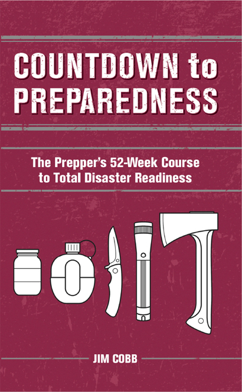
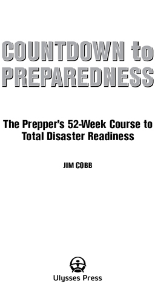
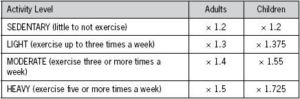

Text copyright © 2014 Jim Cobb. Design and concept © 2014 Ulysses Press and its licensors. All rights reserved. Any unauthorized duplication in whole or in part or dissemination of this edition by any means (including but not limited to photocopying, electronic devices, digital versions, and the Internet) will be prosecuted to the fullest extent of the law.
Published in the U.S. by
Ulysses Press
P.O. Box 3440
Berkeley, CA 94703
ISBN: 978-1-61243-327-1
Library of Congress Control Number 2013957240
采购编辑：Keith Riegert
执行编辑：Claire Chun
编辑：Paula Dragosh
校对：Barbara Shultz
索引：Sayre Van Young
封面设计：Keith Riegert, Jake Flaherty
设计与排版：Jake Flaherty
发行商：Publishers Group West
读者须知：本书为独立撰写和出版，不声称或暗示与书中提及或图示的任何商标产品有赞助、背书关系或附属关系。本书文字、插图或照片中出现的所有商标均属其各自所有者，仅用于信息目的。作者和出版商鼓励读者使用书中推荐和图示的产品。本书纯为信息目的而撰写和出版，不应替代合格专业人士的实际指导。作者和出版商在本书中为您提供信息，让您拥有知识并可以选择自担风险地运用这些知识。作者和出版商也敦促所有读者了解自身健康状况，遵守当地渔猎法规，在从事任何潜在危险活动前咨询医疗保健和户外专业人士。使用本书中的任何信息均基于读者的良好判断。作者和出版商对使用本书信息而导致的读者或他人的人身伤害、财产损失、间接损害或损失概不承担责任，无论其原因如何。
献给爸爸：
愿您很久以后才需要再次咬一大口那个三明治。
前言
简介
如何使用本书
第1周：清单、清单，还是清单
第2周：除旧布新
第3周：基础储水
第4周：返家包
第5周：撤离包
第6周：与直系家属讨论预备
第7周：增加额外收入
第8周：特殊预备考虑——儿童
第9周：特殊预备考虑——宠物
第10周：计算食物储备需求
第11周：水过滤与净化
第12周：规划您的花园
第13周：基础急救用品与培训
第14周：通讯——双向无线电和手机
第15周：人体废物处理
第16周：保持清洁
第17周：非处方药和处方药
第18周：掌控医疗和牙科问题
第19周：建立网络
第20周：生火
第21周：娱乐
第22周：火器
第23周：替代交通方式
第24周：灾后食物准备
第25周：隐蔽储存
第26周：手工工具
第27周：糖、香料和各种美味
第28周：临时武器
第29周：业余无线电
第30周：安全设备
第31周：生存刀具
第32周：寻找和储存木柴
第33周：外出时的撤离计划
第34周：重新集结计划
第35周：非食物储藏物品
第36周：手摇收音机和警用扫描器
第37周：场地安全调查
第38周：结构加固第一部分——门窗
第39周：结构加固第二部分——警报系统
第40周：减少你的足迹
第41周：练习情况意识
第42周：崩溃后远征计划
第43周：需要囤积的零散物品
第44周：车辆应急包
第45周：储备易物品
第46周：建造临时庇护所
第47周：扩充储藏室
第48周：清点——基础物资
第49周：生存和preparedness图书馆
第50周：应急照明
第51周：演练、演练、再演练
第52周：电力供应
你的表现如何？
附录
索引
致谢
关于作者
Jim Cobb和我因为我的书和他如饥似渴的阅读习惯而相识。我不确定Jim是如何接触到我的处女作《Ashfall》的，但既然我现在更了解他了，我对此并不感到惊讶。他是我认识的唯一一个在末日小说方面和我一样博览群书的人，而且他对灾难和生存相关的非虚构作品的了解远远超过我。
为什么你应该关心Jim的小说阅读习惯？嗯，虚构作品有一种不可思议的预测现实的习惯。1865年，儒勒·凡尔纳出版了《从地球到月球》，正确预测了阿波罗计划的每一个细节，除了推进系统。凡尔纳甚至预测了肯尼迪航天中心的位置——比它开放早了九十七年。更为不祥的是，在《荣誉债务》中，汤姆·克兰西预测了使用民用客机作为攻击美国政府武器的情形——比9/11早了七年。
我热切希望我在《Ashfall》中虚构的情景——黄石超级火山爆发——不会成为现实，但如果它发生了，你手中的这本书可能会拯救你的生命。无论我希望什么，黄石超级火山都将再次爆发。每次我遇到地质学家——在研究我自己的作品过程中，我已经与五六位地质学家通信——我都会问两个问题。首先，黄石超级火山会再次爆发吗？第二，什么时候？我与之交谈的每位地质学家都以同样的方式回应：是的，黄石将再次爆发，我们中没有人知道它什么时候会发生。
毫无疑问，你听过这样一句格言：希望不是策略。如果你想要超越希望，学习在我们所知世界末日中生存的策略，那么《备灾倒计时》是一个很好的开始。你在这本书中找不到任何速成方法。那些依赖速成方法的人将是最先死亡的。灾难本质上都是极度紧张的。它们创造了人类回归常规的条件——在压力下，我们只能执行我们练习过的行动。这就是军队如此不懈训练的原因。在激烈的战斗中，士兵只能做他们已经内化到肌肉记忆中的事情。准备和规划是生存的唯一途径——对士兵和预备者都是如此。
这本书的天才之处在于，吉姆将这种准备分解为可消化的每周块。在他为你规划的52周课程中，你将学习和练习关键技能，为更大的购买存钱，并以一致、可持续的方式建立你的水和食物储备。
在某些圈子里，看不起预备者已成为时尚。现在有一整个电视系列似乎专门致力于嘲笑他们。但在其核心，预备只不过是我在青少年时期在童子军中学到的座右铭的延伸：做好准备。虽然黄石公园在我们有生之年爆发的可能性极小，但我们几乎肯定会面临某种类型的灾难。全球气候变化正在增加与天气和海洋相关灾难的频率和严重性。由于全球人口激增，比人类历史上任何以前的时期都有更多的人生活在危险之中。如果每个人都为短暂的灾难——比如卡特里娜或桑迪飓风——做好充分准备，世界无可争辩地会是一个更安全的地方。
每个运动都有其边缘元素，预备者也不例外。有数十个网站赞扬据称的更大枪支的优点，却从未提及有效使用这些枪支所需的数千小时练习。当然，事实是最好的枪是你在关键时刻能够有效使用的枪。在专家手中最小的手枪比在新手手中的超大步枪更危险。同样，如果你不定期检查和轮换你的库存，无论你囤积多少食物都无关紧要。变质的食物可能比没有食物更糟——如果你生病了，你就不能有效地觅食或保护自己。
这是吉姆的建议如此宝贵的一个原因。他不是试图向你推销任何特定类型的枪或冷冻干燥食品品牌。他没有特定的宗教或政治教条要推广。相反，他无情地专注于有效的方法。在这本书中，你会找到关于如何做好更好准备的坚实、实用建议。吉姆不只是告诉你储备水——他建议免费或便宜的储水容器来源，并解释哪种类型最适合长期储存以及原因。他会帮助你制定轮换易腐库存的时间表（从长远来看，几乎所有东西都是易腐的）。他甚至为预算有限的预备者建议了一个适度的储蓄计划。
我将继续希望没有类似于我在《火山灰降落》中描述的灾难发生。但如果真的发生了，阅读《备灾倒计时》并完成吉姆·科布推荐的简单、实用策略很可能是生存与几乎不可想象的替代选择之间的差别。
—迈克·穆林，
《火山灰降落》、《灰烬之冬》和《日出》的作者
早在2011年10月下旬，围绕2012年12月21日可怕的”玛雅预言”的炒作正如火如荼。虽然我对这些可怕的预言并不担心，但我确实把它们视为让更多人积极参与预备的机会。备灾倒计时于2011年12月在SurvivalWeekly.com上诞生。我每周发布一课，包含作业，持续了整整一年。我安排时间，让最后一课在2012年12月预言的世界末日前发布。
虽然我希望这个项目能引起一些兴趣，但它变得如此受欢迎让我震惊。我收到了许多来自读者的电子邮件和信息，他们喜欢每周课程的形式。我听到一些人如何使用这些课程来轻松进入预备，让那些不太感兴趣的配偶变得容易得多。随着时间的推移，似乎有越来越多的人在关注这个项目。当我们最终结束时，我说不清谁更失望，是读者还是我。整个项目真的很有趣。
甚至在最后一课发布之前，我就有人问我是否要将这个在线项目变成一本书。我一直在想同样的事情，但当时我正忙于第一本书《预备者的家庭防务》的最终编辑，并开始第二本书《预备者灾难准备完全手册》。所以，虽然这个想法让我感兴趣，但我必须将其搁置，专注于其他承诺。
当我处理各种书籍项目和其他努力时，我注意到有几本书问世，大多是自费出版，但有些来自传统出版商，它们有类似的主题，即在特定时间内做好准备。通常是30天，或四周，或其他短得可笑的时间长度。除非你已经提前完成了大部分工作，否则不可能在一个月内达到任何真正的准备程度。这有点像说你可以让一个沙发土豆在几周的训练后赢得波士顿马拉松。我想如果一个人有无限的预算和每天12小时的空闲时间，可能在一个月内就能做好灾难准备…也许。
更好地做准备并不是，或者至少不应该仅仅是购买物品。技能在任何时候都胜过装备。需要学习的技能广泛而多样，从急救到生火，从武器使用和维护到食物保存。这些不是一夜之间就能学会的东西。这需要时间、精力，是的，也需要一些金钱。
最终，在2013年初，我在尤利西斯出版社的出色编辑基思·里格特(Keith Riegert)和我谈论了倒计时项目。当时，我正在与尤利西斯合作完成我的第三本书《Prepper’s Long-Term Survival Guide》。我告诉基思，我想把倒计时做成一本书，如果我们要做的话，应该越早越好。
这个项目背后的基本理念没有改变。如果你遵循每一个课程并完成所有任务，当你完成时，你将为任何合理预期的灾难场景做好尽可能充分的准备。考虑到这一点，不要指望这会全是乐趣和游戏。前面将有很多艰苦的工作，以及一些费用。我们许多prepper和survivalist已经在这方面努力了很长时间。如果你是这整个事情的新手，你需要赶上一些进度。但如果你一周一周地进行，你会做得很好。
现在，安静下来。课程即将开始。
与你读过的大多数书不同，这本书不是设计来按页面顺序从头到尾阅读的。虽然你当然可以这样做，但这样做会影响学习过程。
你会注意到第一部分的标题是”基础知识”。无论你在准备之旅中处于什么位置，无论你阅读这本书时是一年中的什么时候，“基础知识”中的课程都要首先完成。它们为许多未来的课程奠定了基础。
一旦你完成了前十个课程和作业，就转到与当前季节相对应的部分。如果你愿意，欢迎在书中跳跃阅读，但有些课程相当具有季节性。例如，在夏末规划你的花园几乎没有意义。
每周都会为你带来一个需要阅读、吸收并融入你的灾难准备计划中的课程。这个课程后面跟着一系列简短的作业。
每个课程包括一个或多个要完成的任务。这些任务与课程直接相关。有些任务只需要一支笔和一张纸，而其他任务涉及一些工作和/或费用。
每周，你会被要求将一定数量的钱存入我称之为Prepper储蓄账户的地方。会有一些价格较高的物品需要你购买。每周存一点钱将帮助你在需要时获得这些东西。如果你在某个特定的周无法负担建议的金额，就尽你所能并尝试稍后弥补差额。最好将这笔钱以现金形式存放，而不是放在银行里。现金将使你能够在需要时在车库拍卖等场所进行购买，而无需先去ATM机。
水是任何生存计划的关键要素。每周，你会被要求储存一定数量的水。虽然每周的数量很少，但它们很快就会累积起来。
每周，你还会被要求购买一些食品。偶尔，它们会是非食用用品。这些购买是在你那一周为整体灾难计划购买的任何其他物品之外的。平均而言，你应该预期每周为指定的杂货花费不到20美元。
我建议你选择一周中的一天，比如星期天，并承诺每周在那一天查看这本书。在你旁边放一个笔记本，这样你就可以记下那一周需要做的事情。不要害怕折页、在文本上使用荧光笔，或在边距上做笔记。如果当你完成这本书时，它看起来被折腾得厉害，那么你就做对了！
在仓储店购物通常会让你的购买资金发挥更大作用。但代价是有时需要一次性投入大量资金。许多人就是没有资金花在成箱的罐头食品和其他物品上。如果你负担得起，可以每个月左右去这些商店之一，储备每周课程中列出的物品。但通过每周只购买一点点，从长远来看你仍然能够获得优势。
在你开始之前还有几件事。首先，如果你到达一个你已经获得了功绩徽章的课程，可以说，那很好，但不要只是休息一周。要么继续新的课程，要么重温过去的课程。闲散的手和所有那些。其次，也可以考虑自己可以超前工作。如果某个特定的课程和作业只需要很短时间就能完成，如果你愿意，可以继续下一个。超前工作远比落后要好。
最后，如果你在任何时候需要鼓励、有问题，或者只是想要一些指导，欢迎给我发邮件：Jim@SurvivalWeekly.com。我很乐意尽我所能帮助你实现你的准备目标。
要向前迈进，最好先了解自己现在的位置。毕竟，如果不知道某人从哪里开始，就很难给他或她指路，不是吗？
在您准备应急之旅中的第一个任务是列出您家中已有或可用的物品清单。有些人喜欢在螺旋笔记本上手写这样的清单。其他人可能选择在电脑上制作某种电子表格。见鬼，据我所知，可能还有智能手机应用程序也可以做到这一点。我建议采用纸笔方式。这样，即使在停电期间您仍然可以访问这些信息。
以下是我希望您制作的清单。
检查每个橱柜、架子，甚至冰箱和冷冻室。记下家中的每一件可食用物品，从单个香料容器到您在感恩节前特价购买的火鸡。在清单上每件物品旁边，写下它的存放时间，根据需要进行估算。要努力做到细致入微；不要遗漏任何东西。这里的想法是，如果灾难来袭，而您手头的东西就是您家庭的全部食物怎么办？不能紧急跑到杂货店；您可能拥有的所有农作物都被拔掉了。当然，这个清单是动态的，因为您准备饭菜等时它会发生变化。没关系，不用担心。只需在制作清单时写下您手头的所有东西。
☐ 4罐豆类 ☐ 10罐汤 ☐ 2磅面粉 ☐ 1磅糖
接下来，列出您储存了多少水。包括您可能散布在房子里和冰箱中的水瓶。还要找出您的热水器容量以及马桶水箱的容量。如果您有雨水收集桶并且里面有水，也要添加进去。如果您有净水设备，如Berkey过滤器或净水片，也要在这里列出。
☐ 10加仑瓶装水 ☐ 50加仑热水器水 ☐ 30加仑雨水收集水 ☐ 30片净水片
创可贴、酒精、过氧化氢、纱布、非处方药，任何与医疗相关的物品都应该列在这个清单上。对于有有效期的物品，如药物，请将有效期添加到您的清单中。
☐ 3盒（每盒100片）创可贴 ☐ 4管抗生素软膏 ☐ 5包卷状纱布 ☐ 1个血压计
在这里，我希望您包括您有多少卷卫生纸、多少肥皂、洗发水和其他基本必需品。当然，人类在没有除臭剂的情况下生存了几个世纪，但拥有它确实很好，不是吗？特别是如果您家里有十几岁的男孩。不要忘记牙膏、牙刷和牙线。
☐ 6块肥皂 ☐ 2瓶洗发水 ☐ 2包婴儿湿巾 ☐ 34卷卫生纸
忘掉所有电池操作的或电动工具吧。只列出手工具——锤子、手锯、螺丝刀、撬棒，诸如此类的东西。是的，胶带是工具，应该包括在内。其他类型的胶带？嗯，就不那么重要了。
☐ 1把弯爪锤 ☐ 1把直爪锤 ☐ 3把钳子（标准型） ☐ 2把钳子（管钳型） ☐ 6把一字螺丝刀（各种尺寸）
这里您要列出零零碎碎的物品。包括您认为在灾难期间或灾难后立即有用且之前未涵盖的任何物品。像电池、露营设备、丙烷烧烤架之类的东西。
☐ 1个燃气烧烤架
2个烧烤用丙烷罐（1个已充满，1个空罐）
2袋木炭
1个帐篷
请明白，制作这些清单并不是你能在一两个小时内完成的事情。就像其他任何事情一样，要把工作做好需要时间和努力。一旦这些清单完成，就好好休息一下吧。
下一步是确定你手头物品的保质期。对于某些食物来说，这相当容易。但对于许多物品来说，这可能很难弄清楚。而且我在这里说的不是包装上印刷的”最佳食用期限”日期。我指的是这些物品实际能持续多长时间。一个很好的网络资源可以在Organize Your Life网站上找到（www.organizeyourlife.org/expiration.htm）。这个网站列出了你能想象到的几乎所有东西，从食物到家用清洁剂。使用该网站或其他信息来源，回头检查你的清单，尽力确定你目前拥有的物品何时不再可用。显然，当你获得更多供给时，你会先使用当前的物品。
创建你的主清单——食物、水、急救、卫生、工具、杂项。把它们放在手边，在日常生活中不断添加或编辑。不，你不必每次使用一茶匙蒜粉时都记录下来。但当你用完供给或添加供给时，相应地调整清单。
通过存下20美元来开始你的Prepper储蓄账户。
Prepper储蓄账户总额：
开始为紧急情况储存水。要么购买一箱瓶装水，要么为每个人装满两个空的2升汽水瓶（2升大约是半加仑）。把它们放在壁橱后面或地下室里，某个阴凉黑暗的地方，以抑制细菌、霉菌和其他有害物质在瓶子上或内部的生长。
储水总量：
3罐蔬菜，你的选择
2罐水果，你的选择，但选择那些用水或果汁包装的，而不是糖浆包装的
2罐肉类（金枪鱼、鸡肉、牛肉），你的选择
2罐汤，非浓缩的（它们需要加水）
1罐燕麦片或一盒调味即食燕麦片
1份零食，比如一袋薯片或硬糖
我们大多数人都会同意，我们大多数人都有……太……多……东西了。衣服、书籍、电影、小玩意、纸质杂物，清单还在继续。典型的美国家庭就是被我们不需要、不使用、可以轻易扔掉而永远不会想念的东西所淹没。
这一周，你要开始清理。要知道，Prepper准备不仅需要时间和金钱的投资，还需要空间。手头有一年的食物储备是很好的，但你真的想把所有这些都装在箱子里放在客厅吗？
这是一个你不太可能在一周内完成的作业。试图这样做会让你很快不知所措。相反，把这作为一个持续的项目，每次做一点。
从你的大衣橱开始。我自己对于衣服和外套的经验法则是：如果我在过去一年里没有穿过它，就扔掉它。当然，你可能有一些专业装备，你不需要扔掉那些。但你真的不需要六件不同的冬季防寒服、五件轻便夹克和四双靴子。那台三年前停止工作的吸尘器？要么这周修好它，要么扔掉它。十年前你拥有的吸尘器的袋子现在不适合你现有的吸尘器？再见了。
从那里开始，检查你家里其余的壁橱。如果衣服现在不合身，把它们扔进箱子里。唯一的例外应该是如果你有孩子，你计划把衣服从一个孩子传给另一个孩子。否则，扔掉它们。衣服，不是孩子。
最终，你需要检查家里的每个壁橱、每个抽屉、每个架子。这样想——如果你扔掉了什么，你就不再需要打扫它、存储它或处理它了。
你多年前放弃的爱好用品？再见了！
你看过但现实中不打算再看的电影？那可是宝贵的架子空间！对于那些仍有VHS电影但没有可用录像机的人来说更是如此！
书籍？好吧，这是我最纠结的一个方面。我有大量还没读过的书。我有好几箱已经读过、希望将来某天能再读一遍的书。我还有一架又一架的书，我应该把它们处理掉。我正在这样做，但进展很慢。而且，如果我的忠实读者中有人正在为任何以某种世界末日情节为特色的书籍寻找归宿，请给我写信。
你如何处理所有这些你想要清理掉的东西？电影、书籍和其他仍然状态良好的物品，你可以考虑在eBay或Craigslist上出售。如果你选择这条路线，把你赚到的钱都投入到应急储备中。
状态不太好的东西，你可以考虑在几个月后的旧货义卖会上处理掉。但要向自己承诺，任何卖不掉的东西仍然必须想办法处理掉。
那些可能不太值钱但仍然很有用的东西可以送给当地Freecycle群组中的某个人。
Freecycle是摆脱你不需要的东西，有时也能获得你需要的东西的好方法。该系统通过电子邮件运作。上网浏览到www.freecycle.org。在那里，你可以搜索你当地的活跃群组。
一旦你加入了一个群组，你就会收到来自那些要么有东西想要丢弃，要么正在寻找特定物品的人们发来的电子邮件。如果你看到感兴趣的东西，给物主发电子邮件讨论。当你有东西要捐赠给别人时，你会向群组发送包含该信息的电子邮件，然后等待回复。
一般来说，这个系统运作得相当不错。这些群组里都是很棒的人。偶尔，你会遇到一个把自己的角色看得过于重要、用铁腕统治群组的管理员。这个人会要求你遵循某种格式，如果你忘记了什么细节就会训斥你。好坏总是相伴的。
剩下的可以送给Goodwill、救世军，或者扔进垃圾桶（这可能是其中大部分真正属于的地方）。
任务
从你家的任何地方开始清理。摆脱你不需要的东西，为你需要的东西腾出空间。要狠心和果断。能卖的就卖，把钱投入到应急储备中。如果卖不掉，就送给Freecycle、慈善商店、回收，或者扔掉。
储蓄
向你的应急储备储蓄账户添加10美元。
应急储备储蓄账户总额：
水储备
每人两瓶2升装水或为家庭准备一箱瓶装水。
水储备总量：
购物清单
3罐蔬菜，你的选择
2罐水果，你的选择，但坚持选择那些用水或果汁包装的，而不是糖浆
1罐辣椒或炖菜，你的选择
1包或1瓶肉汁调料，你的选择
1瓶花生酱（如果过敏，可用无过敏原版本如SunButter替代）
1盒格兰诺拉麦片棒、蛋白质棒或同等物品
1加仑食用油（植物油为佳，保质期更长）
清洁的饮用水是生存必需品。我们的身体需要它来维持生命。我们用它来清洁自己，预防疾病和感染。我们还用它来准备食物。灾后拥有充足的水供应怎么强调都不过分。
专家说我们每人每天需要一加仑水。在我看来，这几乎是荒谬的最低标准。我建议至少一加仑半到两加仑。越多越好。
问题是水很重，大量储存可能很困难。你也不能把它压缩。它占用很多空间。
无论你住在哪里，你的家庭至少应该随时储备每人十天的饮用水或可净化水。对于一个四口之家，这相当于八十加仑水。那是四个二十加仑的水桶。如果你家的储存空间有限，这可能是你能储存的最大量。
如果你住在容易遭受飓风、暴雪或地震等可能中断供水长达一个月的灾难的地区，你应该计划储备更多的水，每人最多三十天的用量。
与家人讨论在你们现有空间内能够实际储存多少水。如果你遵循接下来几周的所有储水目标，你最终会为每个人储存大约五十二加仑的水。这足够维持三个月的离网（无管道）生活。如果你没有空间储存这么多水，只需制定一个现实可行的安全目标，然后在那里停止储存。如果你购买的不是密封水，别忘了定期更换水源。这将保持你的水源安全和适饮。
回顾一下你现在储存了多少水的清单。你是否包括了热水器中的水？普通热水器大约能装三十加仑左右。这足够一个四口之家维持几天，而且很可能已经在那里了，无需任何额外规划。
根据你现在储存的水量，你能维持多少天？算一算，我等着。如果你家有四口人，储存了四十加仑水，按每天两加仑计算，你有足够维持五天的水。这还是考虑只是偶尔用海绵擦洗清洁的情况。
我喜欢使用清洗过的汽水瓶和果汁瓶。一个两升瓶大约是半加仑。我喜欢它们是因为既容易储存又不会太笨重。当然，也有专门为储水而制造的容器。我知道几家折扣零售商在其体育用品部门销售七加仑容器，这些容器很不错。大多数都有内置龙头，使用起来很方便。但再次强调，水很重，即使是七加仑的容器也需要一些力气才能移动。
当然，你也可以购买商业瓶装水。但这可能很昂贵，而且水质并不比许多家庭免费自来水好多少。话虽如此，对某些人来说，这可能是最可行的选择。
有些人建议如果在紧急情况下有时间，应该把浴缸装满水。这不是个坏计划，但你们有多少人的浴缸在任何时候都干净到可以直接饮用？当然，浴缸里的水可以用于其他目的，比如清洁。不过，你需要做的是覆盖装满的浴缸，防止灰尘和其他东西掉进水里。你可以在大多数一元店买到浴帘内衬，这些很适合这个目的。只需将一个铺在浴缸上，用书本或其他东西压在两侧固定。另外，如果你在紧急情况下走这条路，只使用冷水龙头，这样就不会清空你的热水器。
有一种专门为在浴缸中储存紧急用水而设计的产品。WaterBOB是一个大型塑料储水袋，你将其铺在浴缸底部，然后从水龙头注水。它可以容纳多达一百加仑的水，并配有便利的虹吸泵，用于将水从储水袋转移到水壶或水罐中。由于它是密封的，不用担心杂物掉入水中。
这将为你的其他储水提供优秀的备份。但它只应被视为备份。显然，它只有在水龙头还在出水时才有用。如果在初始危机时你不在家，你可能会错过装满WaterBOB的机会。所以继续按指示储水。
你可以在这个网站找到WaterBOB：www.waterbob.com。
你的水应该储存在容易取用的位置。地下室是可以的，前提是你准备好、愿意并且能够搬运水上下楼梯。更好的解决方案可能是壁橱、食品储藏室之类的地方。最好是阴凉黑暗的地方。
储存的水还需要定期更换。按六个月的时间表进行更换。旧水可以用于室内植物、宠物和花园。这不适用于商业瓶装水。保持密封状态下，这种水几乎可以永远保持新鲜。
在我们进行以下每个部分时，你将被指示继续为家庭每个成员留出水，每人每周一加仑。但是，现在也是开始更换你的供应以确保储存的水不会变质的时候了。
以下是你应该做的。你的水应该以能够轻松确定哪些瓶子最老的方式储存。从现在开始，你将从储存中取出一加仑水，倒入宠物的水盆中，用于清洁，或倒入花园。然后用两加仑新鲜水替换它。这替换了你取出的一加仑，同时向储存中增加了另一加仑。这样，你不断使用最老的水，同时向储备中添加新鲜水。注意：不要使用牛奶壶。它们不是为长期储存而设计的，会很快降解，在上面形成针孔。
但如果你储存的是购买的瓶装水，而不是自己装容器，就不需要更换供应。只要瓶子上的密封没有破损，商业瓶装水就会保持新鲜。所以，如果你储存的是从仓储店或杂货店购买的成箱瓶装水，你可以跳过整个更换过程，只专注于建立你的供应。
任务
确定水储存目标，考虑在灾难发生时您可能需要自给自足多长时间的用水需求。计算您应该储存多少水。记住，每人每天需要1.5或2加仑水。
制定实现储存目标的计划。开始或继续收集适合您情况的容器。确保它们干净。
制定轮换计划。您要避免的是一次性倾倒大量储存的水。六个月规则是指导原则，不是一成不变的。每周使用并补充几加仑水，以保持供应新鲜。
向您的Prepper储蓄账户添加$10。
Prepper储蓄账户总计：
每人一加仑（或两个2升瓶）或家庭一箱瓶装水。
水储存总计：
3罐蔬菜，您的选择
2罐水果，您的选择，但选择用水或果汁包装的，而不是糖浆
2罐肉类（金枪鱼、鸡肉、牛肉），您的选择
2罐汤，非浓缩型（它们需要水）
1罐果冻或果酱
1罐意大利面酱
1盒或罐装食盐
1包坚果、干果或什锦果仁
组装Get Home Bag，通常称为Bug Out Bag、Get Out Of Dodge (G.O.O.D.) Bag，或者就是背包生存套装，往往是新Prepper在准备之旅中做的第一件事。但我故意等到解决了其他一些基础问题后才介绍这一课。很简单，您更可能在家中需要您的物资，而不是在外出时。
话虽如此，Get Home Bag是您计划的重要组成部分，如果您还没有准备的话，现在是时候组装一个了。
第一步不是，正如有些人可能认为的，购买背包。相反，您要反向工作。首先，收集您认为应该放在Get Home Bag中的物品，然后为这些内容找到合适的背包。否则，您会面临购买过大背包的风险，这会在心理上迫使您填满它，或者购买过小的背包而无法装下您真正需要的东西。
Get Home Bag有一个目的：在必要时步行从A点到达安全地点，通过满足您的基本需求。这些需求包括水、食物、急救和庇护/保暖。大多数专家建议准备足够维持三天左右的物资。
水是最重要的需求之一。但水很重，大量运输困难。一个体能合理的人可能可以毫不费力地携带两升水。最好将其分装到两个瓶子中。首先，这样可以平衡负重，其次，如果您遇到水源，您会想要并且可能需要补充供应。有两个瓶子，您可以在一个瓶子中处理”新”水，同时仍然从第二个瓶子中饮水。处理发现的水的最佳方法是什么？在大多数情况下，准备净水片就足够了。还有带内置过滤功能的水瓶可供考虑。Berkey确实制造了一种小型便携式净水器，虽然价格昂贵，但质量无与伦比。
接下来是食物。对于您的Get Home Bag，坚持选择几乎不需要或完全不需要准备的食物。由于您无法预测需要依赖套装的情况，最好不要担心烹饪。记住，这是您想要积累卡路里的时候，所以忘记节食吧。卡路里是身体的燃料。在您的套装中储存干果、坚果、燕麦棒、花生酱饼干、硬糖和蛋白质棒。有些人喜欢储存MRE（即食餐），但我发现对大多数人来说它们太笨重了。这里的想法不是准备三道菜的大餐，而是保持生存。
您的急救包应该是全面的，但不要太大而难以舒适处理。想想使用急救包的最常见原因。对于擦伤、瘀伤、胃部不适、扭伤/拉伤、刺伤、水泡，您需要准备大量物资，如创可贴、止痛药、抗生素软膏、纱布、弹性绷带、镊子、酒精棉签。不要忘记治疗恶心和腹泻的非处方药。如果您试图步行找到回家的路，情况已经够糟糕了，不要再处理腹泻的情况。
保暖和庇护是需要满足的非常重要的需求。体温过低可能致命，而且会悄然降临。在这方面要主动防范。携带几条太空毯。我发现Heatsheets制造的产品质量最高。它们有助于保持体温，同时抵御恶劣环境。羊毛帽即使在湿润时也能保暖。在寒冷月份手套是必需品。还要准备一套生火工具，包括丁烷打火机、万能火柴，以及现成的引火物如烘干机绒毛。将这些物品密封在塑料袋中防止受潮。运气好的话，你不必在外面过夜超过一两晚，但即使是一个晚上，没有篝火也会是一场考验。
还有其他一些杂物需要放入你的回家包中。
我遇到的最好的手电筒之一是Maxxeon WorkStar® 330 Hunter’s Pocket Floodlight。只比迷你美格灯稍长一点，使用三节AAA电池。仅用一个小LED灯泡，就能输出约140流明。如果你像我一样对这到底有多亮没有真正可量化的概念，那就是说你不会想将它照在眼睛上。如果你那么愚蠢，会被几乎致盲一段时间。可在www.maxxeon.com找到。
现在需要一个包来装所有这些东西。背包通常是最有效的选择。找一个既舒适又耐用的。这种情况下，你可能不会想要只是将所有东西塞进沃尔玛开学促销时找到的包里。相反，你需要一个有框架的包，帮助在臀部和背部平衡负荷。将所有东西放入背包并背着走一段时间。习惯重量以及它在身体上的感觉。必要时进行调整。
另一个不太理想的选择是行李袋。虽然比什么都没有要好，但会导致你走路不平衡，增加绊倒的机会。我认识几个使用带轮行李箱的人，就像你可能用作航空随身行李的小行李箱。我对此不太认同——它们不是为在崎岖地形使用而设计的，如果你必须携带它们，会相当沉重。
你可能考虑在包里添加一条阿拉伯头巾(shemagh scarf)。这种传统的阿拉伯头巾非常有用。它比典型的大手帕大得多，约40平方英寸。你可以将它用作御寒围巾、头巾、面罩或简易滤水器。你甚至可以在其中包裹一些物品并将其绑在棍子上，完成那个流浪汉装扮！说真的，驻扎在中东的美国士兵很快发现了阿拉伯头巾的用处，到处都会携带一条。你可以找到十多种颜色和图案的这种围巾，如果你喜欢的话，甚至还有迷彩图案。
在回家包中整理装备很重要。你不想为了找防晒霜而倾倒所有物品。整理物资的一个好方法是在背包内使用更小的袋子和小包。我的大部分装备来自 www.SurvivalResources.com。这家公司提供各种实用的小包、罐子和其他容器，用于在背包中保持物品整齐。
回家包应该存放在你的车辆中，因为它们的目的是帮助你从其他地方回到家中。如果灾难来袭时它们放在家里的壁橱里，而你在工作，那它们对你没有任何好处。把它们放在后备箱或后座，选择更方便的地方。如果你选择后座，你可能希望用旧毯子盖住回家包，以免引起小偷的注意。另外，这保证你在被困时车里有毯子，对吧？
为你家庭的每个成员准备一个回家包。你可能不需要出去购买大量新物品。只需使用家里现有的东西，然后在经济允许时升级。为每个人准备一个工具包很重要，这样你就有足够的物资供每个人使用。显然，小孩子无法携带巨大的背包，所以将他们的物品限制在较轻的东西上，并在成人背包中装入额外的食物。
向你的Prepper储蓄账户添加20美元。
Prepper储蓄账户总计：
每人一加仑（或两个2升瓶装水）或家庭一箱瓶装水。
储水总计：
3罐蔬菜，你的选择
2罐水果，你的选择，但坚持选择用水或果汁包装的，而不是糖浆包装的
1罐辣椒或炖菜，你的选择
1包肉汁粉，你的选择
1盒烘焙混合粉，最好是不需要鸡蛋、牛奶或其他配料的类型
1盒（12包）方便面
1磅白米
你已经完成了第一个月的prepper计划！这是你应该学到的和储存的东西。
创建了各种类别物资的主清单，让你很好地了解自己的现状
开始清理家中不需要或不必要的物品，为必需品腾出空间
开始你的食物和储水计划
为家庭每个成员组装了回家包
你应该为未来的prepper采购预留60美元
你应该为家庭每个成员至少储备四加仑水
12罐蔬菜
8罐水果
4罐肉类
4罐汤
2罐辣椒或炖菜
2包或罐装肉汁粉
1盒烘焙混合粉
1盒（12包）方便面
1磅白米
1罐果冻或果酱
1罐意大利面酱
1 罐食盐
1 包坚果、果干或Trail mix
1 罐花生酱
1 盒燕麦棒、蛋白棒或同等食品
1 加仑食用油
1 罐燕麦片或1 盒调味即食燕麦
1 份零食，如薯片或硬糖
在大多数情况下，理想的选择是我们所说的”就地避难”。除非你在别处有一个储备充足的避难所，否则家通常是你所有应急物资的所在地。你应该计划留在家中，直到无法这样做为止。
有许多原因可能导致你需要在瞬间撤离。在我所在的地区，去年就发生了几起燃气主管道破裂事故。虽然居民通常只需撤离很短时间，但谁也不知道这些情况会如何发展。几年前，在我住所几个县外的一家工厂发生了大火。大量有毒烟雾和碎片覆盖了该地区，居民被迫逃离。他们中的许多人至少一两天内都不被允许返回。
在这种情况下，你必须迅速上路，远离该地区。
由于你没有时间在房子里仔细整理和打包物品，你应该准备一个撤离包。
虽然内容相似，但撤离包在几个方面不同于你的回家包。回家包的设计是为了满足你从A点到家的旅行需求，必要时可以步行。因此其内容更多的是关于食物、水和住所。另一方面，撤离包的前提是你有地方可去（家人的家、酒店等）并停留几天。这个包不是用来风餐露宿的，而是为你提供离家一段时间所需的材料和工具。
撤离包应该放在家中容易到达的位置，如壁橱里。为每个家庭成员准备一个包，不过你可能不需要为每个人准备单独的包。假设你已经准备好了回家包并把它们放在车里，那些物品将补充你撤离包中的内容。
以下是你的撤离包中应该有的物品：
每人至少两套完整的换洗衣物，以及额外的袜子和内衣。如果可能的话，为每个人包括一双额外的鞋子。如果你在半夜被叫醒，你们中的一些人或所有人在出门时可能会赤脚。
该地区的地图，包括计划的撤离路线和当地紧急避难所清单
钱（现金、硬币、信用卡）
重要文件的副本，如保险单、车辆和房屋所有权证明、宠物疫苗记录、身份证明
珍贵家庭照片的副本。你可以扫描它们并保存在U盘上。包括每个家庭成员和家庭宠物的近期照片。对于宠物的照片，理想的情况是你和宠物在一起的照片。如果需要证明所有权，这将大有帮助。
零食，如坚果和果干、燕麦棒和饼干
每人至少一个，最好两个水瓶。别忘了净水片或其他净化水的方法，以防灾害导致供水问题。
小型急救包和任何必需处方药的额外供应
卫生用品，如牙刷、牙膏、除臭剂、肥皂和毛巾。几卷卫生纸是个好主意，额外的女性卫生用品也是如此。
如果撤离是在夜间并且你最终需要步行，手电筒会很有用。头灯甚至更好。
便携式收音机，无论是电池供电还是手摇供电，都将帮助你了解正在发生的情况
包中任何需要电池的设备的额外电池
请记住，疏散包的理念是在离家几天的时间里满足您的需求。如果疏散时间超过几天，则需要通过您的返家包来补充。
为每个家庭成员组装一个疏散包。运用常识：您不需要为每个人单独包含便携式收音机。每个人的整体装备可能最终会相对较小，您可能可以将几套装备装进一两个较大的包里。将包放在走廊壁橱中，确保每个家庭成员都知道它们在哪里，这样在出门时可以快速抓取。
为潜在疏散提前做计划。与家庭成员讨论在他们那里住几天的可能性，反之亦然。确定您所在地区通常开放紧急避难所的位置，如教堂和学校。虽然这些避难所通常是prepper的最后选择，但这是一个值得探索的选项。重点是，规划好您可以去哪里以及如何到达那里。
向您的Prepper储蓄账户添加20美元。
Prepper储蓄账户总额：
每人一加仑水（或两个2升装瓶子）或家庭一箱瓶装水。
用水储备总额：
3罐蔬菜，自选 2罐水果，自选，但坚持选择用水或果汁装的，而不是糖浆装的 2罐肉类（金枪鱼、鸡肉、牛肉），自选 2罐汤，非浓缩的（它们需要用水） 1罐速溶咖啡（即使您不喝咖啡，这也是很好的以物易物物品） 1包干汤粉 1袋玉米粉
本周，我希望您将精力集中在让家人”认同”灾难准备上。这是preppers面临的一个经常被提及的问题——配偶或其他家庭成员就是不”理解”。
Prepping是艰苦的工作，当您对抗不认为有必要的人时，就更加困难了。当家庭成员公开嘲笑您或以其他负面方式表达对此事的看法时，就更困难了。
那么，您如何说服配偶加入呢？许多人经常将prepping比作购买保险。让我们面对现实，保险单是我们在生活中购买的唯一希望永远不需要使用的东西之一，对吧？事实上，我们有时会竭尽全力不必提出索赔。遇到过小事故吗？如果损坏轻微，您可能很愿意自掏腰包支付损坏费用，这样保险公司就不会提高您的费率。
Prepping有点像保险。我们储备食物和物资以防万一，但希望并祈祷我们永远不会在紧急情况下真正需要使用这些东西。但prepping和保险之间的区别是，我们仍然可以根据需要使用我们的储备，而不会招致保险代理人的愤怒。事实上，建议您定期使用和轮换供应品以保持新鲜。
您可以提出的另一个论点，特别是关于食物储存的，是能够以今天的价格吃明天的饭。您最近去过杂货店吗？任何东西的价格似乎都没有下降，是吧？似乎不久之前，我还能在打折时以大约一美元一磅的价格买到碎牛肉。现在，如果我能以三倍价格找到它，我就很幸运了。如果我今天花几美元买一罐花生酱，它放在我的架子上直到我为圣诞节做花生酱饼干时发现同样的罐子现在在商店要三美元，我就为自己节省了一美元，对吧？
如果您配偶犹豫的原因不太关于可能的开支，而更多的是认为不会发生任何可能需要储备的事情，您可以谈论最近发生在那些有同样想法的人身上的所有事情。有多少生活在1990年代中期波斯尼亚的人认为他们的政府会崩溃？有多少生活在新奥尔良的人担心重大飓风会袭击他们的地区？日本有谁会考虑海啸的破坏？或者，谈论较小规模的紧急情况，如冬季多日停电或冰暴让您被困在家中数天。或者孩子们带回家的流感病毒在家中肆虐，让每个人都在家待一周怎么办？最后一个曾经袭击过我的家庭，让我告诉您，对所有参与者来说都是一点都不好玩。
记住，只要家附近发生一次紧急情况，许多曾经嘲笑prepping的人就会改变态度。当那种情况发生时，请温和地说”我早就告诉过你”。
与你的配偶、重要的另一半以及任何反对prepping的家庭成员进行一次开诚布公的谈话。使用上述一些建议让他们理解你的观点。
向你的Prepper储蓄账户添加20美元。
Prepper储蓄账户总计：
每人一加仑水（或两个2升瓶）或为家庭购买一箱瓶装水。
储水总计：
3罐蔬菜，自选
2罐水果，自选，但要选择用水或果汁包装的，而不是糖浆包装的
1罐辣椒或炖菜，自选
1包或1罐肉汁，自选
1盒茶包，自选（即使你不喝茶，这些也是很好的易货物品）
1盒燕麦棒、蛋白棒或同等物品
1磅干豆，自选
正如你无疑会意识到的，如果你还没有意识到的话，prepping需要钱。这是无法回避的。即使你的家庭住在自给自足的农场，种植或饲养所有自己的食物，你也必须在开始时购买那片土地、种子和牲畜。
我们大多数人并不是在有女佣、司机和园丁的家庭中长大的。事实上，我敢打赌你们中的绝大多数读这本书的人都是靠薪水过活，凑合着过日子或者没有就没有。所以可以肯定地说，为prepping筹集额外资金将会很困难。
然而，你可以做几件事来带来一些额外收入，然后将其用于prepping。
如果你有写作天赋，通过向杂志出售文章可以赚到不少钱。虽然这对脸皮薄的人来说确实不合适，因为起初，拒绝信可能比薪水支票更常见，但自由写作可能相当有利可图。前往你当地的图书馆，找到你能找到的最新版《作家市场》(Writer’s Market)。这是自由作家的圣经。在其中，你会找到数百本杂志，它们正在寻求购买自由撰稿文章。每个条目列出的信息几乎毫无例外地直接由出版物编辑提供。每个清单将包括他们想要涉及的主题以及付费标准和投稿指南。确保进一步研究，查找每个感兴趣出版物的相关网站，这样你就可以获得最新信息。虽然自由写作的报酬范围很广，但每字1美元的价格并不罕见。
那些拥有园艺天赋的人可以通过销售种子、幼苗，甚至当季农产品来赚取额外收入。你可以通过两种方式做到这一点，要么在家附近设置路边摊位，要么在当地跳蚤市场租用摊位。无论你想采用哪种方式，一定要向市政厅咨询，确保你不需要任何特殊许可证或执照。
说到跳蚤市场，如果你是手工艺型的人，你可以考虑销售自己制作的产品。在我的地区，每年有几十个手工艺品博览会和跳蚤市场，主要在夏季。确保为你的努力收取合理价格——收费过低和收费过高一样糟糕。
如果你有学龄前或青少年孩子，让他们在夏天割草坪或在冬天铲雪来工作。当然，孩子们应该有权获得他们赚取的至少一半钱。但如果他们收费，比如说，铲一条车道20美元，他们可以在一次降雪中排队十个客户，那么prepping预算仍然有100美元。
在许多地区，送报纸仍然是一个选择。虽然工作时间不理想（清晨很早），但对某些人来说，这可能是完美的解决方案。
如果你在修理小型发动机或电子设备等方面有特殊技能，请朋友们帮忙传播消息。以公平价格做好工作将让你在众多竞争对手中占据优势。
随着越来越多的房屋和公寓被无法再负担租金或抵押贷款的住户在半夜遗弃，银行和房东经常寻找人员来清理这些房产。作为奖励，他们有时会让你保留被遗弃的物品。我认识几个靠这种工作稳定经营的人。
当然，总是有可能找到一份”真正”的兼职工作。快餐店几乎总是在寻找新员工。零售商通常也在招聘。工作时间可能变化很大，通常优先考虑那些能够全天候工作的员工。但是，至少在零售业中，你不需要处理嘈杂的机械、肮脏的工作环境或累腰的重体力劳动。
考虑到这些，有几种工作类型我建议避免，或者至少不要在没有认真考虑的情况下接受。报纸分类广告部分可能会列出许多”在家工作”的广告。除了极少数例外，这些都是某种形式的骗局。其中许多涉及你在能够赚到任何钱之前先投资一定金额到项目中，这是一个很大的警告信号。你是在寻求赚钱，而不是找地方花钱。
许多流行的各种各样的家庭销售业务也是如此。我不会在这里全部列出，但如果工作需要你举办”聚会”来销售产品，避免注册。是的，有很多人通过这些业务赚了大钱。这些人是例外，不是常规。许多这些业务不过是合法的传销，唯一赚大钱的人是那些从其下属身上赚钱的人。
我也不愿意建议将儿童护理作为带来额外收入的方式。首先，今天许多地区需要特殊许可才能经营任何形式的托儿业务。其次，如果你绝望到每天把一群孩子带到你家里来赚几块额外的钱，你很可能已经在这样做了。
任务
假设你不是最近的彩票中奖者，因此无法负担任何想到的预备购买，寻找你或其他家庭成员可能带来一些额外收入的方法。使用上述建议作为开始，然后与家人和朋友头脑风暴寻找额外的想法。
储蓄
向你的预备储蓄账户添加15美元。
预备储蓄账户总额：
水储存
每人一加仑（或两个2升瓶）或家庭一箱瓶装水。
水储存总量：
购物清单
3罐蔬菜，你选择的种类
2罐水果，你选择的种类，但坚持选择用水或果汁包装的，而不是糖浆
2罐肉类（金枪鱼、鸡肉、牛肉），你选择的种类
2罐汤，非浓缩的（它们需要水）
1盒饼干，你选择的种类
1罐意大利面酱，你选择的种类
1磅意大利面，你选择的种类
对我们许多人来说，我们的家庭是我们预备的原因。无论生活中发生什么，我们都想尽一切可能确保他们的安全。当涉及到我们的孩子，特别是幼儿时，有一些我们应该确保解决的需求。
通常，当我们开始食品储存时，我们坚持基本必需品，我们可能忽略了特别是我们孩子的真正营养需求。好的多种维生素可以帮助弥补我们严格从食品储存喂养孩子时的营养缺口。成长中的身体也需要大量蛋白质和卡路里。
孩子们吃很多食物，抛开童年肥胖的所有提及。我十四岁的孩子几乎没有体脂肪，然而，在晚餐时，我们不如直接把冰箱倒进他嘴里。虽然我们可能会对青少年吃多少开点玩笑，但现实是他们的身体需要所有这些食物来成长。确保你为家庭储存了充足的食物。
另外，不要忘记孩子们是地球上最挑食的人。当然，当推到推的时候，如果他们足够饿，他们会吃你放在他们面前的任何东西。但争论他们两天前还很喜欢土豆，现在却不能忍受它们这毫无意义，除了在本已压力重重的情况下增加压力之外，什么都不会完成。在你储存的食物中提供多样性，不要忽视偶尔的一些垃圾食品。
对于家庭中的幼儿，这指的是尿布和湿巾，以及清洁或处理它们的方法。即使是坚决使用布尿布的父母也可能考虑投资一两盒一次性尿布。在许多灾难中，处理它们比使用可能珍贵的水资源清洁可重复使用的尿布要容易得多。
你知道如何分辨男孩真正进入青春期吗？浴室和走廊里弥漫的止汗剂云雾。面对现实吧，孩子们就是会有体味。要提前规划，提供定期清洗的方法。
如果家里有女孩即将来月经，也要为此做好计划并储备必要的用品。
每位父母都害怕雨天的夏日，等待着那句必然的抱怨：“没什么可做的！”现在，想象一下被困在家里的日子持续一周、两周甚至更长时间。颤抖。投资一些便宜的桌游、玩具、书籍和其他娱乐用品，将它们打包收好，直到真正需要时再拿出来。尽可能不时更新这个箱子，保持内容符合年龄。十五岁孩子看到蛇梯棋时的白眼可能是致命的。
如果你在为极端长期情况做计划，不要忘记包括孩子的教育。投资数学、科学、历史等基础学科的家庭教育教材和其他资源。在返校促销期间储备额外的笔记本、钢笔、铅笔和其他用品。
最重要的是，让你的孩子参与prepping。不要让这对他们来说是个谜。在适当的年龄和成熟度下，教他们罐装、追踪、射击、急救和生火等技能。如果你所在地区有活跃的童子军团体，它们是帮助孩子学习wilderness技能的绝佳途径。显然，有些事情你会想等到孩子们年龄更大后再与他们分享，比如你的食品储备规模。年轻人需要一段时间才能真正理解OPSEC（行动安全）的重要性。
让他们帮忙打包自己的Get Home Bags，规划和准备餐食，建造雪洞。除了基本句子结构外，还要教他们实际技能。向他们展示如何换汽车机油，然后下次在你的监督下让他们来做。让他们参与家庭项目，这样他们就能学会如何拧螺丝和锯木板。让他们明白最好的餐食不是从盒子里放到微波炉里的。
本周重点与你的孩子们讨论prepping，保持讨论内容符合年龄。对于年幼的孩子，一本优秀的书是Kermit Jones Jr.的《Prepper Pete Prepares: An Introduction to Prepping for Kids》（Kamel Press, 2013）。在你继续prepping的过程中，确保考虑到孩子的任何特殊需求，包括饮食、服装和药物。
向你的Prepper储蓄账户添加$10。
Prepper储蓄账户总额：
每人一加仑（或两个2升瓶）或家庭一箱瓶装水。
用水储备总量：
3罐蔬菜，自选
2罐水果，自选，但选择用水或果汁包装的，而不是糖浆装的
1罐辣椒或炖菜，自选
1包或1罐肉汁，自选
1盒奶粉
1盒（12包）方便面
无论你将动物视为类似员工的存在，还是（像我一样）真正将它们视为家庭成员，你都需要为它们在灾难期间和灾后的需求提前规划。我们的宠物依赖我们为它们提供食物、水和住所，以及照顾任何医疗需求。
在我们这里的讨论中，我主要关注狗和猫，尽管同样的原则适用于你可能拥有的任何动物。但鉴于狗和猫是最受欢迎的家庭宠物，我重点讨论它们。
我们的宠物与我们有着同样的需求，所以让我们逐一讨论。
每只宠物每天平均需要一加仑水。显然玩具犬种需要的水比西伯利亚哈士奇少，所以要相应调整用量。重要的是为你的宠物和家庭其他成员储备充足的水。
你应该能够轻松计算出你的宠物每天需要多少食物。虽然理论上你可以用自己餐食的剩菜喂宠物，但这可能不是最明智的计划。首先，你可能没有多余的剩菜。其次，饮食的突然改变可能导致宠物的肠道问题。
宠物的基本急救用品包括纱布包扎带、消毒酒精、绷带胶带和抗生素软膏。如果你的宠物有特殊医疗需求，如特殊药物，请与兽医商谈获取少量供应以备紧急使用。
确保您的宠物佩戴适当的身份证和疫苗接种标签项圈。在您的宠物灾害应急包中保留一套备用的，同时准备一根备用牵绳。复制所有权文件、疫苗接种记录和医疗记录的副本，并将这些信息与您的应急包一起保存。
这非常重要。如果您和宠物走散，拥有一张你们在一起的近期照片将有助于证明所有权。照片还能帮助其他人在宠物走失时找到它。
如果需要疏散，使用笼子或宠物运输笼运输您的宠物可能会很有用。笼子应该足够大，让您的宠物能够舒适地站立、转身和躺下。不要忘记准备一条柔软的毯子以及一两个咀嚼玩具。
对于猫咪，确保为它们的猫砂盆准备充足的猫砂。对于狗狗，如果遇到无法让它们外出的情况，可能需要准备一堆旧报纸以及清洁用品。
请记住，许多公共紧急避难所不允许携带宠物，因此要提前计划。致电周边的汽车旅馆，了解哪些是宠物友好型的。此外，与邻居、朋友和家人交谈，讨论在您需要疏散但无法带走宠物时，谁可能能够帮助您照顾宠物。
准备一个宠物紧急应急包。确保包含上述列出的所有物品，以及针对您具体情况的任何额外需求。当您开始制定疏散计划时，务必确保已将宠物纳入考虑范围。找出在紧急情况下可以携带宠物前往的地方。还要确保它们的疫苗接种保持最新状态：即使避难所允许宠物入住，如果宠物没有及时接种所有疫苗，也可能被拒绝。
向您的Prepper储蓄账户添加$10。
Prepper储蓄账户总额：
每人一加仑（或两个2升瓶）或为家庭准备一箱瓶装水。
储水总量：
3罐蔬菜，您的选择
2罐水果，您的选择，但选择用水或果汁包装的，而不是糖浆包装的
2罐肉类（金枪鱼、鸡肉、牛肉），您的选择
2罐汤，非浓缩型（浓缩汤需要水）
1包干汤料，您的选择
1盒速溶土豆
1磅白米
充足的食物储存是应急准备的基石之一。虽然人体至少可以在没有食物的情况下存活几周，但后期的时间绝对不会好过。食物是身体的燃料，在灾难发生后，您需要获得所有可能的燃料。
回顾您在本书第一部分制作的主食物清单。仅使用您现在手头的食物，您能够现实地为整个家庭提供多少天的食物？现代survivalism真正的”教父”之一布鲁斯·克莱顿博士曾说过，如果您没有至少储存一整年的食物，那就是在浪费时间。显然，如果您刚刚开始，积累如此多的食物似乎有点令人生畏。因此，将其分解为几个更容易达到的目标。努力达到一周，然后两周，然后一个月，然后三个月。不断提高标准，直到您对储存的食物数量感到满意。
当我们谈论食物储存时，您需要各种产品的组合。您无需也不应该只是出去购买几托盘冷冻干燥产品就完事了。首先，这样做会非常昂贵。此外，适当的轮换是任何成功食物储存计划的关键要素。您需要定期使用和补充储存的食物。始终优先使用最旧的产品。
虽然将几箱冷冻干燥食品倒入您的储藏室并不一定是世界上最糟糕的想法，但您需要通过逐渐将其引入饮食来调节自己和家人的身体。如果不这样做，可能会对每个人的消化系统产生显著的负面影响。更好的想法是储备您的家人已经了解和喜欢的食物，如蔬菜、意大利面、炖菜、辣椒和汤等罐装食品；豆类和大米等干货；以及面粉、糖、盐和香料等主食。
专注购买相对便宜的物品，以获得最大的性价比。不仅要看价格，还要看份数。一罐浓缩汤可能不到一美元，但你很难从中得到两份。如果只是你自己吃，这还不错，但如果你有配偶和正在成长的孩子，一餐仅靠一两罐是不够的。
大米仍然相对便宜，虽然在过去一年左右价格有所上涨。干豆类是蛋白质的优质来源，易于制作。豆类、大米和一罐豌豆，你就能以每人几分钱的成本喂饱全家。
显然，我们这里说的不是美食餐点。相反，要专注于用营养和卡路里来填饱肚子。
你如何知道每天真正需要多少？科学的方法是计算每个人的必要卡路里摄入量并相应规划。这会有点复杂，但请耐心听我说。
有公式可以确定所谓的基础代谢率。这是指你的身体仅维持当前体重和活动水平所需的卡路里数。然后根据你期望的结果向上或向下调整这个数字。如果想减重就向下调整，如果想增重就向上调整。
测量每个家庭成员的身高（英寸）和体重（磅）。然后，使用这些数字进行以下计算：
成年女性： 655 + (4.3 × 体重磅数) + (4.7 × 身高英寸) – (4.7 × 年龄)
成年男性： 66 + (6.3 × 体重磅数) + (12.9 × 身高英寸) – (6.8 × 年龄)
女孩： 655 + (4.35 × 体重磅数) + (4.7 × 身高英寸) – (4.7 × 年龄)
男孩： 66 + (6.23 × 体重磅数) + (12.7 × 身高英寸) – (6.8 × 年龄)
然后根据每个人的活动水平调整上述计算出的数字。
现在取上面确定的基础代谢率数字，根据你的活动水平进行调整。查看下面的图表，了解调整后卡路里摄入量所需的乘数。

每个人的最终数字告诉你需要消耗多少卡路里来维持当前的身体状况。当然，消耗少一点对大多数人不会有巨大的有害影响，至少在短期内不会。但要记住，在长期灾难恢复期间，你的家庭成员的活动水平很可能会增加。无论是外出切割倒下的树枝、挖掘和除草园床，还是手工洗衣，你可能会比现在燃烧更多卡路里。
如果所有这些数学计算过于复杂，计算家庭需求的更简单方法是制定一个完整两周的膳食计划。不要担心你现在家里有什么；这都只是假设的。坐下来拿纸和笔，写出你的家庭通常早餐、午餐和晚餐会吃什么。然后，也加上一两种零食，因为我确信家庭成员习惯在正餐之间快速吃点东西。尽可能详细地描述这些餐点，估算每道菜中每种配料的数量。不要只是在周二晚餐写”tacos”。算出你通常使用多少肉和其他配料。
制定完整两周的膳食计划，然后将每餐加倍，就能相当准确地估算出一个月喂饱所有人需要什么。当然，你可能无法获得所有配料，比如新鲜蔬菜，但这些数字为你的食物储存计划提供了基准和起点。
使用第37页给出的公式，确定每个家庭成员的卡路里摄入需求。不过，你也可以制定十四天膳食计划。无论哪种方式，重点是为自己提供一些相当准确的数字，了解需要为全家储存多少食物。
检查你的食物供应主清单，估算凭借现有储备能喂养家庭多长时间。然后，确定你的第一个食物储存目标。如果你现在有两周的储备，就争取达到一个月。如果你已经有一个月的储备，就争取达到两到三个月。随着课程的进行，将任务采购类别中的项目作为建议，并根据需要替换项目和数量，以满足你的食物储存目标。
向你的Prepper储蓄账户添加15美元。
Prepper储蓄账户总额：
每人一加仑（或两个2升瓶装水）或整个家庭一箱瓶装水。
储水总量：
3罐蔬菜，自选
2罐水果，自选，但选择用水或果汁包装的，而不是糖浆
1罐辣椒或炖菜，自选
1包或1罐肉汁
1磅干豆，你的选择
第二部分
春季
第11周
水过滤和净化
回到第一部分，我们谈到了储水的重要性。事实上，储水是你在整个项目中持续进行的任务之一。仅次于此重要性的是拥有过滤和净化额外水源的能力。当然，有许多天然水源，如湖泊、河流、雨水和雪融水。但无论那水看起来多么绝对清澈，都应该进行过滤和净化。
预备者(prepper)能做的最佳投资之一就是购买水净化系统，比如Big Berkey水过滤系统。是的，它很贵，但它能比你在没有它的情况下做得更好。其他值得关注的品牌有Katadyn和Aquamira。
当你比较成本和品牌时，仔细查看每个设备的规格。你需要能够过滤足够数量水的设备来满足你的需求。例如，如果你有一个五口之家，你可能需要一个每小时能处理超过一加仑的系统。你还要考虑系统能过滤掉的微生物大小。你需要一个至少能去除0.2-0.3微米范围内微生物的过滤器。这能处理像隐孢子虫(cryptosporidium)和贾第鞭毛虫(giardia)等有害微生物。
不幸的是，这样的过滤系统对病毒效果不太好，因为病毒通常要小得多。考虑到这一点，你可能需要加入化学处理或煮沸的额外步骤来确保水的安全。
还有许多方法可以在不使用这些设备的情况下净化水。
你可以把水煮开。过去专家建议让水煮沸几分钟，但现在最新信息表明只需要把水煮开即可。这样做足以杀死任何有害微生物。当然，这种方法需要足够的燃料来煮沸大量水，以及不仅煮沸水还要让水冷却到可以处理或饮用的时间。但在任何可能的情况下，都要使用煮沸来消毒水——这是提供清洁水最可靠的方法。
无香氯漂白剂能使可疑水变得适饮。在一加仑水中加入16滴（1/8茶匙）漂白剂，搅拌均匀，然后静置约半小时。如果水仍有淡淡的氯气味，就可以了。如果没有，重复这个过程。如果水很浑浊或很冷，将漂白剂用量翻倍。漂白剂相当便宜，但保质期有限。一旦瓶子打开，预期在开始降解前能保持约六个月的完全效力。
你可以使用次氯酸钙(calcium hypochlorite)制作自己的漂白剂混合物，也称为”泳池冲击剂(pool shock)“。以下是来自环境保护署网站的操作说明：
在每2加仑水中添加并溶解一满茶匙高测试颗粒状次氯酸钙（约1/4盎司），或在7.5升水中添加5毫升（约7克）。该混合物将产生约500毫克每升的氯溶液储备液，因为次氯酸钙的有效氯含量等于其重量的70%。为了消毒水，按1份氯溶液对100份待处理水的比例添加氯溶液。这大致等于在每12.5加仑水中添加1品脱（16盎司）氯储备液，或在50升待消毒水中添加约1/2升。为了去除任何令人不快的氯味，通过在两个清洁容器之间来回倾倒来给消毒后的水充气。
这种方法很吸引人，因为泳池冲击剂非常稳定，如果保持干燥和凉爽能持续很长时间。它也可以非常便宜，特别是在夏末清仓销售期间。考虑到你只需要使用很少的量来制作净化混合物，即使一两包泳池冲击剂也能用很长时间。
当然，任何露营用品店都有各种水净化片。这些确实有效，但一次只能消毒少量水。如果这是你的主要消毒方法，几天内就会用完相当多的药片。
还有不同类型内置过滤装置的水瓶，比如Aquamira品牌销售的。很好用也推荐，但不要指望用它们一次提供大量清洁水。
当然，在消毒水之前，应该先过滤以去除可能存在的较大”杂质”。最好的方法之一是先让水静置足够长的时间，让水中漂浮的任何东西沉到容器底部。然后，将水通过一两个咖啡过滤器倒出。我还见过精心制作的DIY装置，在通过咖啡过滤器之前使用连续的小砾石、沙子和木炭层。如果你有时间和手段，这不是一个坏方法。
清洁水对生存绝对必要。虽然储存一定量的水是准备计划的第一步之一，但你也需要有将发现的水变得适饮的方法。我们很少有人有能力储存在重大灾难期间和之后所需的全部水。
任务
如果你有经济能力购买Big Berkey或类似的净水设备，请购买。如果没有，开始为此存钱。
开始收集过滤和净化水所必需的用品。这些包括咖啡过滤纸、煮水用的锅、空瓶子、池用漂白粉、漂白剂和净水片。始终努力为任何给定任务准备多种方法。正如军队里说的：“两个就是一个，一个就是没有。”
储蓄
向你的预备储蓄账户添加10美元。
预备储蓄账户总计：
水储备
每人一加仑（或两个2升瓶装水），或者为整个家庭准备一箱瓶装水。
水储备总计：
购物清单
种植自己的食物不仅是自给自足的重要组成部分，还能节省购物开支。当你坐下来享用自己种植的食物时，还会有一种独特的满足感。
无论你的生活状况如何：公寓、房屋业主、公寓楼，无论什么情况。总有办法种植一些东西。也许花园不能像你希望的那样大，但有总比没有强。
现在是开始规划你的花园的时候了。如果你过去有过种植花园的经验，看看你的成功和失败，确定这次需要改进的地方。另一方面，如果你是园艺新手，现在是开始行动的时候了。
如果你没有大院子可供使用，选择包括容器园艺和方形英尺园艺。
容器园艺就是在你的露台、门廊或车道上用花盆种植植物。显然你在种植什么方面受到一定限制，因为所有东西都必须装在花盆里。但花盆尺寸种类繁多，很可能你能找到种植几乎任何常见园艺蔬菜所需的花盆。例如，土豆可以成功地种在桶里。你从一层土壤和堆肥开始。种植你的种薯并用另一层土壤覆盖。当植物发芽时，除了绿色植物外，保持所有部分被覆盖，随着生长不断添加更多土壤。在季节结束时，只需将桶翻倒并收获你的土豆。
方形英尺园艺稍微复杂一些，但即使是最新的园丁也能做到。有许多书籍和网站详细讨论了这种方法。它涉及建造高架花园床，用准备好的土壤填充它们，并以网格模式种植你的作物。如果你院子里的土壤贫瘠或者空间有限，这是一个很好的方法。方形英尺园艺让你能在更小的区域种植更多蔬菜。
无论你如何解决空间问题，都要从勾画你提议的花园开始，标注长度和宽度尺寸。这样做会让你清楚地了解在规划作物时可以利用的空间。
接下来，决定今年想种植什么。同样，如果你以前经历过这种情况，你会对你所在地区什么作物长得好、什么长不好有合理的了解。如果这是你第一次，考虑联系你的县推广办公室。那里的Master Gardeners有一个人生使命：帮助像你这样的人。
列出你和你家人喜欢的蔬菜清单。看看你能在当地种植什么品种。不要忘记草莓等水果。也考虑尝试新事物。例如，我在四十年的生活中从未尝试过茄子。没有什么真正的原因；我只是从来没有机会尝试。我们决定在过去这个季节尝试种植茄子，最终获得了相当不错的收成。
除非你有无限的空间，否则你可能无法种植你想要的那么多不同植物。你必须设定优先级。考虑专注于那些在你的地区历史上生长得非常好的蔬菜，或者对你的家庭有吸引力的蔬菜。
一旦你知道想要种植什么，你就需要种子。尽可能选择传家宝种子(heirloom seeds)。传家宝种子能产出”纯正”的蔬菜和水果，意味着从中取得的种子可以在明年种植，培育出同样的作物。许多在沃尔玛等地方常见销售的种子实际上是杂交品种，从你收获的作物中取得的种子将是不育的。
有许多商店，无论是线上还是线下，都销售种子。如果你问十个园艺师他们最喜欢哪些地方，你可能会得到十个不同的答案。你最好的选择是询问你所在地区每年都有花园的人。你可能会很幸运，他们会给你一些种子来开始种植。只要你礼貌地询问，询问一下总是没有坏处的。
你还需要研究你希望种植的植物。特别注意植物大小、最佳种植时间和生长季节。你需要这些信息来最好地规划你的花园。回顾你的花园草图，开始标记每种植物将种在哪里。平衡植物大小，这样你就不会因为大型繁茂的植物挤压小型植物而结束。如果你有一种植物可以在四月开始种植，其生长季节是七十天，那么你很可能也可以在那个空间种植秋季作物。
毫无疑问，园艺是相当劳动密集的。不过，规划阶段是你可以享受所有乐趣而不必弄脏双手的地方。
研究并规划你今年的花园。开始获取种子并整理它们。按照你使用它们的顺序储存。
思考如何在室内开始播种。这样做有助于延长你的生长季节，并培育出更健康的植物。实际上，你只需要一张桌子、植物托盘和一盏灯。
向你的预备者储蓄账户添加20美元。
预备者储蓄账户总额：
每人一加仑（或两个2升瓶装水），或为家庭准备一箱瓶装水。
水储存总额：
3罐蔬菜，你的选择
2罐水果，你的选择，但选择用水或果汁包装的，而不是糖浆
1罐辣椒或炖菜，你的选择
1包或1罐肉汁，你的选择
1罐花生酱（如果有过敏问题，可替换为无过敏原版本如SunButter）
1罐意大利面酱，你的选择
1袋（4磅）糖
1磅意大利面，你的选择
根据灾难的性质和范围，即时医疗护理可能只是美好的回忆。大多数家庭可能只有半空的创可贴盒子（充其量），以及可能一支大部分空了的抗生素软膏管，在克林顿躲避丑闻的时候就过期了。有小孩的家庭可能会有更多储备，但很可能远远不够真正明智的数量。
Jane-Alexandra Krehbiel是一名注册护士，在该领域有多年的实践经验。以下是她为预备者推荐的完备急救包用品清单，摘自她在SurvivalWeekly.com上发表的文章”基本生存急救包”。
无菌4×4纱布，每个家庭成员一大包
无菌2×2纱布，每个家庭成员一包
清洁4×4纱布，每个家庭成员一包
清洁2×2纱布，每个家庭成员一包
每个家庭成员一条三角绷带
大安全别针
滚筒纱布（各种尺寸6-8个，用于固定敷料）
几个化学冰袋
各种创可贴
蝶形绷带
弹性绷带（小号和大号）
生理盐水喷雾瓶（作为鼻腔生理盐水销售）用作温和的眼部冲洗剂
三种类型的伤口胶带——纸质、外科用、石膏（多种用途）
无菌棉签（约200支）
各种防护医用口罩（若干包）
注意： 无菌纱布应与伤口直接接触，干净的纱布可以用作其上的填充物。请记住，虽然这听起来像很多纱布，但一个严重的伤口可能在短短几天内就会消耗掉您的所有供应品。
Neosporin软膏，若干支
过氧化氢，2瓶
异丙醇，2瓶
聚维酮碘，2瓶
苯海拉明(Benadryl或通用名)外用液体，用于虫咬
尖嘴或细镊子
止血钳
一元店老花镜作为放大镜，如果您超过四十岁，用于取出碎片
带保护套的玻璃体温计，包括肛门和口腔两种类型
护理剪刀或钝剪刀
乙烯基医用手套（1-2盒）；避免乳胶因为可能过敏
普通、便宜、无香型卫生巾（多种用途）
金属夹板
橡胶止血带
对于我在这里提到的每个项目，您应该为每个家庭成员准备这种药物。我的意思是，如果您有婴儿和儿童，那么您必须为每个年龄段储备泰诺（对乙酰氨基酚）：婴儿滴剂、儿童咀嚼片和成人片剂。唯一的例外是阿司匹林，在没有医生医嘱的情况下不应给予十八岁以下的儿童服用，因为在病毒综合征存在的情况下，它与引起雷氏综合征有关。
对乙酰氨基酚（泰诺）
阿司匹林
易蒙停A-D
胃必治
苯海拉明(Benadryl)
所有家庭成员的碘化钾片，在核灾难事件中使用
奥美拉唑
氯雷他定口崩片
布洛芬（艾德维尔等）
吐根糖浆瓶（在某些中毒后诱导呕吐）
注意： 始终保持您持续使用的处方药物三十天的用量。
处方胰高血糖素注射剂
酮尿试纸
胰岛素注射器和您的可注射胰岛素
糖源或果汁来治疗低血糖
备用血糖仪，配备额外电池、试纸、采血针和用品
胰岛素泵耗材，以及泵电池和外设（如果你使用泵的话）
与医生讨论你或家庭成员是否应该携带肾上腺素笔的可能性。
处方吸入器
雾化器（电池供电，以防停电）
雾化器治疗的药物和生理盐水
一个备货充足的急救包将使你的家庭能够治疗许多常见的伤病。虽然没有什么能替代由经验丰富的专业人员提供的适当医疗护理，但肯定有些时候这是不可行的。当这种情况发生时，你必须用现有的东西应付。有关急救包的更多信息，请参见 http://survivalweekly.com/downloadable-files/basic-survival-first-aid-kit。
从本周开始，开始组装你的急救用品。使用你在第一部分制作的清单作为指南，了解你有什么和需要什么。在你能力范围内购买所需物品，并关注当地商店的促销传单。在价格低的时候囤积。
世界上所有的用品如果你不知道如何正确使用它们也不会有多大好处。本周，我希望你了解你所在地区的急救课程。查看红十字会或当地的技术学校和社区学院。如果学院或技术学校的费用令人望而却步，询问”旁听”课程的可能性。以较低的费用，你可以参加课程，但不会因此获得字母等级。除非你有令人信服的理由需要获得那个等级，否则这是一个很好的低成本选择。
向你的Prepper储蓄账户添加10美元。
Prepper储蓄账户总额：
每人一加仑（或两个2升瓶装）或家庭一箱瓶装水。
储水总量：
3罐蔬菜，你的选择
2罐水果，你的选择，但坚持选择用水或果汁包装的，而不是糖浆
2罐肉类（金枪鱼、鸡肉、牛肉），你的选择
2罐汤，不是浓缩的（它们需要水）
1罐果酱或水果蜜饯
1盒（12包）拉面
1瓶复合维生素
1磅干豆，你的选择
在灾难发生后，与家人和亲人沟通可能变得极其重要。显然，你会想要立即检查他们是否安全，并在整个危机期间持续关注。他们也会想对你做同样的事。因此，现在花时间探索一些选择是个好主意。
无处不在的手机可能仍然有效，至少在大多数情况下是这样。大多数灾难本质上是局部的，影响相对较小的区域。但手机传输线路可能很快变得过载，使通话难以接通。在这种情况下，尝试发送短信。通常，这些传输会通过，因为它们使用不同的系统。它们不是传达大量信息的理想选择，但在紧急情况下能凑合使用。
当然，那部手机需要电力才能运行。养成每天给手机充电的习惯。我每晚睡前都会插上手机，让它整夜充电。这样，如果发生什么事情，我至少从满电开始。但即使这种主动措施也可能不够，你可能最终盯着手机上的低电量信息。幸运的是，现在有几种产品可以为手机提供快速电池补充。在我看来，其中最好的一种是名字奇特的WakaWaka Power。你可以在 Survival-Gear.com 找到它。这是一个太阳能供电的设备，不仅为手机或平板电脑充电提供充足的电力，还配有内置的强力LED灯。虽然有点贵，大约80美元左右，但我非常喜欢我的那个。如果你决定选择其他产品，我建议你探索类似的太阳能供电产品，而不是仅仅使用电池。
人与人之间沟通的另一个选择是双向无线电。虽然在大小和外观上与我们年轻时玩过的对讲机相似，但FRS（家庭无线电服务）和GMRS（通用移动无线电服务）设备功率要强得多。像任何其他电子设备一样，它们需要电力，但投资一个小型太阳能电池充电器可以解决这个问题。
实际上，FRS和GMRS无线电之间没有太大区别。最大的区别是GMRS设备需要执照才能操作。也有混合无线电，可以在两组频率上发射和接收。如果你没有执照，就坚持使用FRS频率。
你可以做的是购买几对这些无线电，给附近的每个邻居或家庭成员一台，并让所有人同意使用一个特定频道进行沟通。这些无线电并不昂贵，通常在夏初露营季节和秋季狩猎季节会有促销。
在选购时，不要担心包装上声称的通信距离。可能会说有效距离是几英里，但这只有在你和接收器之间除了草叶之外没有任何阻挡时才成立。所有这些无线电都在”视线范围”内工作，因此会受到树木、建筑物、山丘和其他障碍物的影响。我强烈建议在你的区域进行实验，确定无线电信号的实际到达距离，并据此制定计划。
关于这些双向无线电需要考虑的另一点是，它们绝不是私密的。范围内的任何人都可以打开自己的无线电，调到你的频道，听到所说的一切。所以我不会依赖这些设备进行任何私密通信。查看萨莉阿姨的情况是一回事，但告诉你的右翼部队偷袭敌人就是另一回事了。
任务
开始选购双向无线电。目标是每个家庭成员至少有一台无线电，每个邻居家庭也有一台。试用它们以确定在你所在位置的实际通信距离。
如果你还没有手机，考虑投资一个”即付即用”型号。你不会被锁定在不需要或不想要的多年合同中，但在紧急情况下仍然可以使用手机。
储蓄
向你的Prepper储蓄账户添加10美元。
Prepper储蓄账户总额：
水储存
每人一加仑（或两个2升瓶装水）或家庭一箱瓶装水。
水储存总量：
购物清单
3罐蔬菜，自选
2罐水果，自选，但选择用水或果汁包装的，而不是糖浆
1罐辣椒或炖菜，自选
1包或1罐肉汁
1盒烘焙混合粉，最好是不需要鸡蛋、牛奶或其他配料的类型
1包干汤
1磅白米
当你需要上厕所时，你要去哪里？这并不总是像在院子后面找棵树那么简单。正确处理人体废物对预防疾病至关重要。虽然即使水压不足时马桶可能仍能工作（你可以手动加水到水箱），但如果灾难持续足够长时间，泵站会堵塞，化粪池会满溢，导致家中溢出。不，这听起来并不有趣。
一个选择是用垃圾袋套住马桶，当袋子满了就更换。同样的原理适用于使用五加仑桶。实际上，许多野营用品商店现在销售专门制作的马桶座圈，可以安装在这些桶上。如果选择桶这个选项，你甚至可以不用垃圾袋内衬，只在桶中使用猫砂或沙子来吸收液体。
无论哪种情况，你都可以通过在废物上撒洗衣粉或小苏打来控制气味。
当然，有许多不同类型的化学马桶可供选择，你可以购买一两个。但上述选项要便宜得多，这样可以释放资金购买其他用品。
请记住，任何装满人体废物的容器都会比你预期的重。不要让容器装得太满以至于无法轻松移动。
在处理废物时，基本上有两个选择——焚烧或掩埋——各有优缺点。
如果你埋掉这些废物，它们就会眼不见为净（也闻不到臭味）。但这涉及挖坑和回填的大量工作。你需要在离任何水源尽可能远的地方进行，以防污染。至少要相距几百英尺，如果可行的话要更远。
燃烧废物消耗的个人体力会更少，因为你不需要挖坑。但你最终会使用打火机油或其他可燃液体来生火，而这些燃料你可以用于其他目的。
话虽如此，还有建造老式茅房或厕所坑的可能性。虽然这并不是世界上最糟糕的想法，但在零下二十度的寒风中出去蹲在坑上，绝不是任何人认为的好时光。如果你决定走这条路，你需要将厕所设置在距离任何水源至少两百英尺的地方。挖一条约六英尺长、两英尺宽、几英尺深的沟渠。把挖出的土堆在附近。使用时，蹲在沟渠上方解决问题，然后铲一些松土覆盖废物。如果危机持续时间足够长，以致你将整个沟渠填到距离顶部约一英尺时，再挖另一个。
虽然有许多厕纸的替代品，但其中大多数都远不理想。确保储备这种重要物资，因为你永远不会真正拥有太多库存。如果你确实用完了这种必需且宝贵的资源，最好的可用选择之一就是把旧棉T恤剪成正方形。用漂白剂和水的强力溶液装满一个小桶（最好是有盖子的），并将其放在附近。当使用织物湿巾时，将它们扔进桶中。当你用完时，清洗然后重复使用这些湿巾。
确保在使用设施后也有清洗的方法。我的一个军人朋友描述过”屁股和手疾病”如何在中东服役期间的某个时刻让他的大部分伙伴倒下。这是一个非常现实的担忧，因为无法洗手是第三世界国家疾病的主要原因之一。去你当地的一元店，储备洗手液。
任务
确定你的家庭将能够如何处理这个诚然有些不舒服的情况。看看你的个人情况，决定如何解决这个问题。
开始获取必要的用品，如五加仑桶和猫砂。将这些用品放在某个地方，确保它们不会被用于其他目的。
储蓄
向你的Prepper储蓄账户添加$15。
Prepper储蓄账户总额：
储水
每人一加仑（或两个2升瓶）或家庭一箱瓶装水。
总储水量：
购物清单
3罐蔬菜，你的选择
2罐水果，你的选择，但坚持选择用水或果汁包装的，而不是糖浆
2罐肉类（金枪鱼、鸡肉、牛肉），你的选择
2罐汤，不是浓缩的（它们需要水）
1罐速溶咖啡（即使你不喝咖啡，这也是很好的易货物品）
1盒燕麦棒、蛋白棒或同等物品
1磅意大利面，你的选择
在灾难准备方面，保持合理清洁的重要性怎么强调都不为过。能够清洗不仅对士气有巨大提升作用，还对预防感染和疾病大有帮助。
想象一下在隔离期间（自我实施或其他方式）被困在家中数周。水龙头不工作，所以没有自来水可用。正值盛夏，没有电意味着没有空调。每天你和你的家人都在花园里辛苦工作，收获所需的食物，以及对房屋本身进行任何必要的维修或改进。
你们都经常汗流浃背、脏兮兮、头发蓬乱。家里还有一个婴儿，每天可能要用十几片尿布。那种臭味会深入你的灵魂。你需要提前计划，这样你和你的家庭成员至少可以稍微清洁一下。
首先储备大量的婴儿湿巾，无论家里是否有小孩。这些非常适合快速擦澡。当然，如果你用完了，它们也可以用作厕纸。
接下来，储备肥皂和洗发水。虽然我完全意识到香皂可以用来清洁头发和身体，但普通洗发水的成本并不高。
牙刷、牙膏和漱口水都是必需品。确保手头有足够的备用品。计算出一管牙膏能供你家人使用多长时间，然后乘以倍数，至少储备几个月的用量。牙刷应该能用六个月左右，但价格便宜，所以按每个家庭成员五支备用牙刷来计算。顺便说一下，不要扔掉旧牙刷，它们很适合用于小型清洁项目。
坚持使用无香型除臭剂，在紧急情况下避免使用身体喷雾。相信我，作为一个青少年的父亲，在掩盖其他气味方面，身体喷雾被严重高估了。
洗手液至关重要。它能让你在如厕后快速清洁双手而不用消耗水。但洗手液确实会让皮肤干燥，所以你可能需要在购物清单中添加护手霜。
几天不洗澡后，野营淋浴器可能会很受欢迎。你可以在任何像样的体育用品店买到这些，或者自己制作一个。一个五加仑的桶，涂成黑色，在阳光充足的日子里能很好地加热水。如果你很有动手能力，在桶底钻个洞，装上一个小软管式接头。将桶悬挂在头顶以上。然后，接上软管和喷嘴来控制水的开关。或者你也可以让人在梯子上把水倒在你身上，你在下面洗澡。
记住，你要用雨水来洗澡，而不是用储存的饮用水。
任务
开始储备肥皂、洗手液和其他卫生用品。正如我常说的，关注促销广告，如果能比买普通品牌更划算就使用优惠券。你的首要目标是储备够三个月使用的量。一旦达到这个目标，再努力储备六个月的用量。
开始购买或自制野营淋浴器所需的物品。
储蓄
向你的Prepper储蓄账户添加10美元。
Prepper储蓄账户总计：
储水
每人一加仑（或每人两个2升瓶装水）或家庭装瓶装水一箱。
储水总计：
购物清单
☐ 3罐蔬菜，自选品种
☐ 2罐水果，自选品种，但选择用水或果汁包装的，而不是糖浆包装的
☐ 1罐辣椒或炖菜，自选
☐ 1包或1罐肉汁调料
☐ 1盒茶包，自选品种（即使你不喝茶，这也是很好的易物品）
☐ 1罐意面酱，自选品种
☐ 1磅干豆，自选品种
我不会争论我们是否已经成为一个沉迷于药物的国家，以及为什么会这样。事实是，许多preppers及其家庭成员每天都需要服用药物才能生存。再加上许多人生病时依赖的常见非处方药，你要准备的药丸和药水数量就相当可观了。
储存药物的问题在于，与我们储备的其他物品相比，许多药物的保质期并不长。平均而言，一年可能是你能期望药物保持完全有效性的最长时间。但所有药物都不同，你需要对你和家人服用的特定药物进行一些研究。
复杂的是，很难大量储备处方药。处方药往往很昂贵，即使有保险共付额。有一种观点认为，你可以通过偶尔跳过一次服药来节省药物供应。我完全不推荐这种做法。在许多情况下，严格按照医生的指示用药是至关重要的。
一个也许更可行的选择是密切关注你的处方何时可以续药，并尝试让这个日期与你当前药物用完的时间重叠。例如，假设下周三是你能续药的最早时间，但你当前的药物供应要到下周五才会用完。这会让你多出两天的药物储备。再这样做几次，你就能建立起至少少量的储备。总是先服用最老的药物，轮换你的供应以保持一切新鲜。
如果你与医生关系融洽，你可以和他或她谈论你的担忧。解释说由于媒体上关于准备灾难应急包的讨论很多，你担心可能发生什么事情会切断你的处方药供应。只要你谈论的不是麻醉剂或其他管制物质，你的医生可能愿意与你合作。
关于非处方药物，回想一下过去几年。哪些疾病最常出现？胃部不适？严重的头部感冒？哪些药物效果最好？这些就是需要储备的物品。不过，同样不要过度囤积，花钱买大量可能在真正需要之前就过期的药品。
不要忽视抗酸剂和一般的止痛药和退烧药，如阿司匹林和布洛芬。如果家人中有人过敏，确保手边有合适的药物。
有小孩吗？确保备有适合年龄的药物。
几乎所有药物都最好储存在阴凉、黑暗的地方。不过我不会把所有东西都扔到地下室的角落里。在大多数家庭中，衣柜就很合适。只要确保轮换你的储备物品以保持相对新鲜即可。
现在，说了这么多，我鼓励每个人都研究常见疾病的天然疗法，以及草药和其他选择来替代部分或全部处方药。我不是说要突然停止服药。相反，与同意使用此类疗法的医生合作。如果你在仍然服用处方药的同时开始服用天然疗法，即使剂量减少，也可能会有一些严重的副作用。
任务
列出你的家人在长期危机期间可能需要的所有药物。开始获取这些药物的储备，当你发现它们打折时。
重点与你的医生讨论需要额外数量的处方药。
储蓄
向你的Prepper储蓄账户添加$20。
Prepper储蓄账户总额：
储水
每人一加仑（或两个2升瓶子）或家庭一箱瓶装水。
储水总量：
购物清单
3罐蔬菜，你的选择
2罐水果，你的选择，但坚持选择用水或果汁包装的，而不是糖浆
2罐肉类（金枪鱼、鸡肉、牛肉），你的选择
2罐汤，不是浓缩的（它们需要水）
1盒饼干，你的选择
1盒（12包）拉面
1磅白米
在全面崩溃之后，我们可能首先怀念的事情之一就是获得医疗和牙科护理的相对便利。当然，处理我们当前的医疗保健系统和保险公司并不容易，但这仍然比排队数小时去看唯一可用的医疗专业人员（可能是注册护士，甚至不是医学博士）要好得多。
就像其他任何事情一样，预防胜于治疗。虽然很少有人真的喜欢看医生或牙医，但最好是早期掌握问题或潜在问题，而不是让它们恶化变得越来越严重。
我坦率地承认，我绝对厌恶看医生，更不喜欢去看牙医。这总是很麻烦，需要请假，还要自掏腰包付钱。但我们都在变老。随着年龄的增长，掌握正在发展的健康问题变得越来越重要。
你本周的重点是去看医生和牙医。你可能无法在这周就预约上，但尽量尽快就诊。做一个完整的体检，包括任何推荐的血液检查。如果可以的话，做牙科检查、X光和洁牙。
如果你有影响获得医疗或牙科护理能力的经济问题，开始为此目的留出资金。
幸运的话，你会得到健康的诊断书。但如果不是，立即开始研究任何疾病或问题的天然疗法。草药疗法、民间医学，诸如此类。记住，可能会有处方药不可用的时候。最好现在就利用所有可用的资源进行研究，比如互联网和公共图书馆。
与你的医生讨论替代医疗治疗方法也不会有害处。越来越多的医生认识到这些方法的价值。如果你的医生坚决反对除了吃药以外的任何治疗方法，可能是时候寻找新的医疗提供者了。
任务
尽快去看医生和牙医。列出你关心的任何问题，确保花时间与你的医疗提供者讨论这些问题。
如果你的身体状况不太理想，考虑开始某种锻炼程序。不需要每天花费数小时在这上面。早上做一些简单的伸展运动只需要大约十分钟，在短时间内就会对你大有好处。如果可以的话，每天步行十五到二十分钟也会有益。
储蓄
向你的Prepper储蓄账户添加15美元。
Prepper储蓄账户总额：
储水
每人一加仑（或两个2升瓶子）或一箱瓶装水供家庭使用。
储水总量：
购物清单
3罐蔬菜，自选
2罐水果，自选，但坚持选择用水或果汁包装的，而不是糖浆
1罐辣椒酱或炖菜，自选
1包或1罐肉汁
1盒奶粉
1磅干豆，自选
我个人的prepper/survivalist理念的一个关键要素是，在没有他人帮助的情况下，几乎不可能在长期社会崩溃中生存下来。我认为现在与家人和邻居建立关系是必须的，以便为日后提供更好的安全保障和整体生活条件。
现在身边有志同道合的人在几个方面都很有帮助。
• 资源共享： 也许你和两个邻居今年都计划扩大花园，你们每个人都需要使用一台好的旋耕机。与其每个人都花钱租赁或购买一台，不如考虑一起合资。如果旋耕机的日租费是75美元，你们每人出25美元，团队合作在一天内完成所有三个花园的工作。
• 意见交流： 虽然了解网上与生存相关的网站、群组和留言板当然是明智的，但向那些对你当地区域非常熟悉的人请教总是很棒的。如果你在寻找一家很棒的浪漫餐厅来庆祝你的周年纪念日，你是用Google搜索运气更好，还是在工作中四处询问？
• 以物易物/交易： 当环境阻止你跑到五金店去买修理发电机所需的工具时，你可能会发现邻居正好有你需要的东西。他会帮你修好发电机，作为回报，你让他给几节电池充电。或者也许他被鸡蛋淹没了，如果你正好有一磅面粉或糖，他很乐意和你交换一打鸡蛋。也许如果你能帮他除花园里的杂草，他可以帮你修屋顶的漏洞？在过去，人们总是做这种事情。
• 安全保障： 就我而言，越多的眼睛和耳朵关注社区发生的事情越好。当然，每个社区都有一个”爱管闲事的人”，他们觉得知道谁和谁睡觉以及在哪里是一种使命，这些人有时有点难以应付。但他们也是那些能够准确告诉你那辆深蓝色SUV深夜在社区里开过多少次的人。
然而，在prepping方面建立联系可能很困难。通常，我们觉得我们会因为对为灾难做计划的兴趣而被嘲笑或嘲弄。但考虑到对prepping的兴趣和认识都在快速增长——看看讨论这个话题的众多电视节目、书籍和网站——我认为情况正在发生变化，至少有一点。越来越多的人正在”觉醒”，意识到他们需要为自己和家人做准备，而不是依靠政府机构突然出现拯救这一天。
我不是建议你在你的区域挨家挨户地问人们是否听说末日即将来临，并邀请他们过来参观你的prepping用品。不过，我建议的是与你的邻居提起prepping的话题，以衡量他们的兴趣。可能他们刚看了一集《末日准备者》(Doomsday Preppers)，虽然他们觉得其中一些人走得有点远，但他们想了解更多关于灾难准备的知识。
最近，我一直在处理来自家人和朋友的电子邮件和消息，他们突然对了解更多关于prepping的知识感兴趣。有时这是电视节目或书籍的结果；其他时候就像眼罩刚刚脱落，常识回归了。无论情况如何，我总是很高兴回答他们的任何问题。你也应该这样做。
任务
虽然应急准备倒计时更多关注的是就地避难和逃生，但荒野求生技能也是整体灾难准备计划的一部分。学习并掌握这些技能对于提高自信心非常有益。生火、建造临时庇护所，以及从森林深处导航回到安全地带，都是基本而必要的技能。
能够生火对生存至关重要。火能让你保暖、烹饪食物、照亮黑夜，并且通常能在紧张情况下提供安慰。很少有其他东西能像在夜晚观看篝火那样带来宁静与安详。
当然，有很多种生火的方法。火柴、打火机、燧石和钢铁、镁条打火器，不胜枚举。但所有这些工具都归结为同一件事——提供火花来点燃引火材料。实际上，这是容易的部分。保持火不熄灭才是难点。
引火材料包括干燥、易燃的材料。棉球、烘干机绒毛和纸张都符合要求。也有很多天然来源，比如干草。引火材料应该是能够捕捉并保持火花，燃烧时间足够长来点燃引燃材料的物质。
引燃材料是小树枝，最粗不超过手指粗细。它们应该干燥而脆。越干燥就越容易点燃。
这里的概念是从小开始，逐步扩大。引火材料点燃引燃材料。引燃材料点燃较大的细枝。较大的细枝点燃更粗的原木，如此循环。你不能急于求成。这样做会导致你必须重新开始。通过过快添加太多燃料，你会闷死火焰。
在你的后院清理一个地方来练习生篝火。在这里要运用常识，不要在你的木制隐私围栏旁边搭建。将地点刮到裸土。如果你有那种庭院壁炉，愿意的话可以使用它。收集几把树枝以及几把引火材料。用树枝做一个小帐篷，将引火材料放在里面。你希望做的是点燃引火材料，让它向上燃烧穿过帐篷，点燃树枝。当帐篷倒塌时，你可以慢慢添加更多燃料。
虽然这只是建篝火的众多方法之一，但我发现即使没有练习，大多数人用这种方法都能成功。
一旦你有了小火，根据需要一次添加一点较大的树枝来逐渐扩大。你可能会惊讶于火可以多么小，但仍然能在寒冷的夜晚温暖你。
这是一项基本技能，你们中的许多人可能早就掌握了。但我相信你们都会同意这是一项必不可少的技能，应该练习直到熟练为止。
任务
练习生篝火。使用不同的方法点火和不同的引火材料。看看什么对你最有效，什么没用。
如果你还没有这些物品，将它们添加到本周的购物清单中：万用火柴、镁条打火器和丁烷打火机。对于那些对更原始生火方法感兴趣的人，可以独立学习火活塞(fire pistons)、钻木取火(fire drills)和火板(fire boards)。
储蓄
向你的应急储蓄账户添加15美元。
应急储蓄账户总额：
水储存
每人一加仑（或两个2升瓶）或家庭一箱瓶装水。
总水储存量：
购物清单
3罐蔬菜，自选
2罐水果，自选，但选择用水或果汁包装的，而不是糖浆包装的
1罐辣椒酱或炖菜，自选
1包或1罐肉汁调料包
1磅白米
在许多类型的紧急情况发生后，你可能会有空闲时间。没有电力，你无法随时接触电视或互联网来分散注意力。当然，你可能会比平时花更多时间准备膳食和其他家务，以及可能清理灾难造成的损坏（倒下的树木等），但请记住，即使是拓荒者也有一些休息时间。
最好考虑一下你和家人如何度过这些时光，而不是忍受围绕”我不知道，你想做什么？“的无休止循环对话。
棋盘游戏几乎每个人都在壁橱或橱柜里存放着。但《妙探寻凶》还有所有棋子吗？检查一下游戏，确保所需的一切都在那里。替换棋子可以在旧货销售和旧货店以零钱价格买到。
用扑克牌也可以玩很多不同的游戏。你可以只花几美元储备几副牌。也许可以向家里的年轻人展示，确实可以在没有电脑的情况下玩纸牌游戏。购买一本关于纸牌游戏的书也不是最坏的想法，至少学习一两个对你和家人来说全新的游戏。
骰子也可以用来玩几种不同的游戏，无论是自己玩还是作为团体游戏。手边准备几套骰子，还有一个好处就是如果棋盘游戏中丢失了骰子，你可以用它们替代。和纸牌一样，也有书籍解释许多不同游戏的规则。
我和妻子都是贪婪的读者，所以自然地，我们家里满是书籍。虽然休闲阅读不是每个人的菜，但如果你或家庭成员喜欢独自沉浸在充满阴谋、浪漫或冒险的故事中，就储备一些阅读材料吧。你们也可以有家庭阅读时间，每个人轮流大声朗读书中的章节。你会在旧货销售、旧货店和图书馆销售中找到有趣的书籍，通常每本书不到一美元。
特别是对于年幼的家庭成员，手工艺品可以帮助时间飞逝。你可以在开学季促销期间找到建筑纸、剪刀、胶水、亮粉和其他手工工具。如果你拿出一盒这些好东西，孩子们的眼睛肯定会发亮。为年龄较大的孩子（或成人）准备几本笔记本和钢笔，让他们记录危机期间的经历日记。这不仅有助于消磨时间，而且在心理上很有价值，将想法写在纸上有助于治愈情感创伤或压力。
如果你或家庭成员有音乐能力，可以花一两个晚上演奏乐器和唱歌。你可能永远达不到帕特里奇家庭的技能水平，但只要你们玩得开心，这就是最重要的。
无聊实际上可能相当有压力。我们生活在这样一个忙碌的社会中，坐着不动什么都不做感觉有些不对。虽然安静的沉思，甚至冥想确实有其价值，但当每五分钟就有人抱怨”我无聊！“时，这很难实现。
任务
环顾房子，看看你手边可能已经有什么可以消除无聊的东西。检查棋盘游戏，确保所有棋子都在并且数量正确。考虑购买一些其他游戏，或上述其他建议的用品。
储蓄
向你的准备者储蓄账户添加10美元。
准备者储蓄账户总额：
储水
每人一加仑（或两个2升瓶子）或家庭一箱瓶装水。
储水总量：
购物清单
3罐蔬菜，自选
2罐水果，自选，但选择用水或果汁包装的，而不是糖浆包装的
1包坚果、干果或什锦干果
1种零食，如一袋硬糖、一些糖果棒或袋装爆米花
1加仑食用油（植物油为佳，保质期更长）
虽然我觉得一些生存主义者和预备者在这个类别上过度补偿，但枪械确实是全面灾难准备计划的必需品。它们有两个用途：自卫和食物获取。
我们很多人都希望能够负担得起满屋子的半自动步枪和军用霰弹枪，但现实是枪械很昂贵，弹药也不便宜。如果你对枪械相对陌生，在变得熟练之前，你会消耗大量弹药。
话虽如此，如果你四处比价，你可以用不到600美元组建一个基本的枪械库。
你的第一笔投资应该是一支22LR步枪。Ruger 10/22在这个类别中几乎是最好的。你可以找到全新的大约200美元左右，如果找到二手的会稍微便宜一些。22LR步枪非常适合小型猎物狩猎以及练习射击技术。弹药虽然不像过去几年那样便宜和充足，但如果你四处寻找仍然可以买到。当然，你可以为步枪添加各种配件和定制，让它看起来酷炫威猛。但所有那些东西都只是装饰性的。
接下来是12号霰弹枪。凭借种类繁多的弹壳类型，霰弹枪非常多用途。从狩猎大型猎物到水禽，它能让你的锅子满满的。另外，很少有声音比霰弹枪上膛的声音更令人胆寒。霰弹枪是很好的防御武器。它在远程射击方面的不足由威力来弥补。如果你四处比价，可以找到大约200美元的体面霰弹枪。
第三是狩猎步枪，比如莫辛-纳甘7.62X54R。这是你的远程武器。这些栓动式、弹匣供弹的步枪现在到处都有，价格在100-200美元之间，取决于型号。弹药类似于30.06。莫辛-纳甘的有效射程约为一千码，这对大多数需求来说应该足够了。
所以花600美元左右，你就能拥有狩猎小型和大型猎物以及保卫家园的装备。
在预算允许的情况下，我会添加一把手枪用于防御。如果你对枪械相对缺乏经验，我建议从左轮手枪开始。它们比半自动手枪不那么复杂，但代价是手枪中的弹药较少。大多数左轮手枪有六发弹舱，而半自动手枪的弹匣可能有九发或更多。对于左轮手枪，.357可能是更好的选择之一。一把带四英寸枪管的Taurus .357要花费几百美元。当你转向半自动手枪时，仅仅是基本款就很容易超过400美元。
先把长枪搞定，因为你会得到更多的实惠。一旦满足了这些需求，再购买手枪来完善武器库。
当你开始购买枪械时，安全是至关重要的。确保有一个安全的地方将它们锁起来，远离儿童。许多警长部门免费提供扳机锁，所以如果你负担不起枪械保险箱，就从这些开始。弹药也应该安全锁藏。
你还需要学习如何保养枪械。让别人教你如何拆卸和清洁每件武器。储备清洁用品以及每件武器的备用零件。
当然，如果你不知道如何瞄准射击，世界上所有的枪械都对你没什么用处。优先考虑定期练习你的枪械。如果你没有精通射击的朋友或亲戚，可以向当地射击场询问课程。很可能你可以找到愿意给你所需帮助的人。准确性需要时间来实现，如果你不练习，这是一项会随时间流失的技能。
任务
如果你已经完成了本书中至少一个部分，并且能够向你的预备者储蓄账户贡献指定金额，你应该有一笔不错的小金库可以用来购买枪械。如果你仍然缺乏资金，尽你所能开始积攒零钱。对于枪械新手，考虑购买.22步枪作为你的第一支枪，然后从那里分支。
在你的区域找一个射击场，在那里你可以练习射击以及在需要时接受指导。
储蓄
这周你要花钱，不是存钱。使用你的储蓄购买枪械和弹药。
预备者储蓄账户总额：
水储存
每人一加仑（或两个2升瓶）或家庭一箱瓶装水。
总水储存量：
购物清单
3罐蔬菜，你的选择
2罐水果，你的选择，但坚持那些用水或果汁包装的，而不是糖浆
2罐肉类（金枪鱼、鸡肉、牛肉），你的选择
2罐汤，不是浓缩的（它们需要水）
1罐燕麦片或1盒调味速食燕麦包
1盒燕麦棒、蛋白质棒或同等食品
1罐食盐
1磅白米
在许多类型的灾难中，汽车和卡车可能不是你最好的交通选择。在龙卷风或洪水等重大事件发生后，道路可能几乎无法通行。再加上缺乏现成的燃料，大多数人将不得不步行到任何地方。
为这种可能性提前做好计划。在许多情况下，自行车能很好地满足你的需求。你可以在旧货拍卖会上便宜地买到它们，甚至可以在Freecycle（Freecycle.org）上免费获得。其中一些可能需要一点维护才能重新上路，但修理自行车并不是什么高深的技术。记住，我们这里说的不是昂贵的赛车。几辆简单的山地自行车就很好用。
大约30美元，你就能买到保持自行车正常运行所需的所有东西。确保你准备内胎修补工具以及备用内胎。买一个可以挂在座椅下方或车把上的小袋子，用来存放扳手、内胎、一小瓶WD-40、钳子和其他零碎物品。买一个设计成不用时可以安装在自行车车架上的打气筒。
记住，在某些情况下，自行车用来运输货物可能比载人更有用。这是在许多第三世界国家学到的教训。一辆自行车可以装载很多东西在袋子里并绑在车架上，你推着它走。这比试图把所有这些东西背在背上要容易得多。
如果你留心观察，你经常可以找到相当便宜的自行车拖车。寻找那种设计用来载一两个孩子并且可以转换成婴儿车的。这些很容易安装在自行车后部，能处理更大的负载。毕竟，它们是为载几个孩子而制造的。如果你到了因某种原因不得不放弃自行车的地步，婴儿车转换功能会很方便。
别忘了车锁。我喜欢用密码锁，这样你就不用担心丢失钥匙。
当然，马匹是另一种历史悠久的交通方式。但它们比自行车贵得多，而且需要大量的维护。我听说近年来干草的价格飞涨。但如果你有养几匹马的条件，以及照顾它们的知识，它们确实是一个可行的选择。驮马可以载相当多的装备和补给。
摩托车也是一个选择。它们消耗的燃料远少于汽车或卡车。但它们确实需要一些操作培训，以及相应的驾照。虽然你可能认为执法部门在灾难后会有比寻找无证摩托车手更重要的事情要做，但不要心存侥幸。
考虑到无论你为交通计划了什么，你很可能最终还是要步行，我鼓励你如果可能的话每天散步。如果需要的话从小距离开始。即使只是绕街区走一圈也比什么都不做要好。随着你的健康和身体状况的改善，逐渐增加距离。习惯于用一步一步的方式到达你要去的地方。
确定哪些替代交通方式在你的特定情况下是可行的。如果你决定自行车是最佳选择，尽可能便宜地获得它们，并根据需要修理它们。如果你已经很久没有骑车了，通过定期外出重新上路。俗话说得对，你永远不会真正忘记如何骑自行车。
查看你计划的疏散路线。如果你无法使用机动车，是否需要改变其中任何一条？
向你的Prepper储蓄账户增加10美元。
Prepper储蓄账户总计：
每人一加仑（或两个2升瓶）或为家庭准备一箱瓶装水。
水储存总计：
3罐蔬菜，你的选择
2罐水果，你的选择，但坚持选择用水或果汁包装的，而不是糖浆装的
1罐辣椒或炖菜，你的选择
1包或1罐肉汁调料，你的选择
1罐花生酱（如果有过敏问题，选择无过敏原版本，如SunButter）
1罐意大利面酱，你的选择
虽然我已经讨论了储备无需或只需少量准备就能食用的食物的必要性，但在长期紧急情况下，你会希望能够烹饪食物。但如果公用事业服务中断，你的微波炉和炉灶可能就不太有用了。
热腾腾的食物令人安慰，拥有烹饪食物的手段为用餐开辟了更多可能性。而且，正如我在水过滤和净化课程中讨论的那样，煮沸水是防止摄入细菌和其他有害微生物的最佳方法之一。
当停电时，你可以使用几种方法来烹饪食物。
烤架： 无论是丙烷还是木炭烤架，都不必局限于仅烹饪肉类。当然，今天许多丙烷烤架都配备了专为锅具使用而设计的侧燃器。但即使没有该功能，你也可以简单地将锅子放在烤架上加热。几年前我和一位女士交谈过，她经历了一场严重的冰暴，导致停电数天。她叹息说虽然她家有一个木炭烤架，但没有煤球，所以在她看来它是无用的。我指出她本可以使用小块柴火，这个想法她从未想过。
如果你还没有拥有烤架，考虑购买一个。特别是木炭烤架，如果你货比三家的话可以买得相当便宜。你也可以查看当地的Freecycle群组以及Craigslist来寻找二手的。别忘了购买长柄器具。你的手指会感谢你的。
装饰性火坑： 这些在过去几年中变得流行起来。通常由金属制成，这些便携式火坑可以放在你的露台上，在寒冷的夜晚为你取暖。它们基本上就是便携式篝火，而人们在明火上烹饪的历史几乎与人类历史一样长。
篝火： 如果没有其他选择，你可以在后院的小篝火上烹饪。在远离房屋和外屋的地方清理出一块地方，并在附近存放一些柴火。
使用任何形式的篝火装置时，请记住最好的烹饪方法是使用煤炭，而不是熊熊燃烧的火焰。煤炭能提供更高、更稳定的热量。
虽然如果只有普通锅具你也可以使用，但它们并非专为篝火烹饪而设计。四处寻找铸铁烹饪器具。首先，购买一个大小合适的平底锅和一个荷兰锅(dutch oven)。这两样物品几乎能帮你准备任何食物。
如果你不熟悉明火或煤炭烹饪，确实需要一些练习。这不是你一夜之间就能掌握的技能。烧烤既是一门艺术形式，也是一种准备餐食的方式。这些不是你仅仅通过阅读几本书就能学会的技能。你需要走出去实践。
太阳能烤箱： 如果你在Google上搜索”DIY太阳能烤箱”，会得到成千上万的结果。它们用常见材料制作相当简单，在白天时间工作良好。同样，使用这些烤箱也有学习曲线。不要等到真正需要时才组装一个并了解它是如何工作的。
野营炉具： 这些在任何像样的体育用品商店都能找到。它们是小型炉台，通常使用小型气罐作为燃料，尽管有各种各样的型号和设计。这些通常工作得很好，占用的存储空间很小。我经常在庭院销售中看到它们，通常来自那些决定不太喜欢露营的家庭。
请记住，使用任何形式的明火烹饪的这些方法绝不应该在室内使用。存在火灾以及一氧化碳中毒的危险。
任务
选择几种不使用常规厨房电器烹饪食物的方法，并开始获取必要的物品。不要忽视Freecycle和Craigslist来寻找体面的二手用品。
如果木炭烤架在你的清单上，在木炭打折时开始购买木炭袋。如果你货比三家，应该能以大约3或4美元的价格找到14磅重的袋子，通常以两袋装大约6美元的价格出售。如果丙烷更适合你的风格，确保至少有几个装满的储罐作为备用。
这周到外面做一顿饭。我是指整顿饭，不仅仅是主菜。假设厨房烹饪设备是禁用的。你可能会发现你更喜欢这种方式做出的食物，胜过任何从微波炉里出来的东西。
储蓄
向你的Prepper储蓄账户添加15美元。
Prepper储蓄账户总额：
储水
每人一加仑（或两个2升瓶）或为家庭准备一箱瓶装水。
储水总量：
购物清单
2罐水果，任选，但选择用水或果汁包装的，而不是糖浆装的
2罐肉类（金枪鱼、鸡肉、牛肉），任选
2罐汤，非浓缩的（浓缩汤需要加水）
1罐果酱或水果蜜饯
1盒（12包）方便面
1袋玉米粉
1磅意大利面，任选
无论是银币、弹药还是食物，肯定有一些东西你希望能够远离窥探的目光。你当然不希望自己的贵重物品在房屋因某种原因被搜查时落入他人手中。
幸运的是，家中有很多地方都很容易改造成隐蔽的储藏点。让我们从底部开始，逐步向上介绍。
地下室里有很多绝佳的藏匿地点。通风管道效果很好，只要你要隐藏的物品不会受到冷热影响。寻找管道侧面的通风口，打开它们，把物品放在里面。不过要小心不要过多阻碍空气流动。
如果你查看地下室的天花板，应该能找到至少一根大直径的PVC管道。这是用于排放浴室废水的。你可以轻松地在地下室的其他地方再悬挂一根这样的管道，而不会显得突兀。尽量匹配相同颜色的PVC管道以及相同的悬挂硬件。这些管道足够大，可以用来储存额外的弹药，甚至可能放得下一支步枪。
另一个选择，也是最便宜最简单的方法，就是用几个纸箱装上你的贵重物品，然后标记为”奶奶的旧衣服”之类的标签。你甚至可以额外在箱子顶部放一些从二手店买来的衣服，以防有人偷看里面。如果你想更加隐秘，可以用特定颜色的记号笔标记”特殊”箱子，这样你一眼就能知道需要时该拿哪些箱子。
移到主层，你可以在一两个房间里安装几个额外的踢脚板通风口。将通风口沿着墙壁对齐，这样你就知道尺寸了，然后切开墙壁，露出墙骨之间的空间。放入一两块弹药，然后用螺丝固定通风口。为了更快取用，你可以用双面胶或腻子代替螺丝。
除了踢脚板通风口，你也可以让墙壁保持开放状态，用小书架或其他家具隐藏洞口。不过，这样做会让以后重新布置家具变得相当有趣。
衣柜内部通常在门上方有空余空间。这里可以是放置架子的好地方。虽然不如其他地方隐蔽，但很少有人会想到往那里看。当你在衣柜里查看时，如果你有相当的DIY能力，甚至可以为衣柜创造一个假后壁。搭建框架，安装石膏板，没人会察觉。
薄物品，如纸币或硬币，可以隐藏在相框内。将物品贴在照片背面或后板内侧，然后重新装回相框。谁真的想偷你的结婚照呢？
宠物食品袋、鸟食或软水器颗粒袋都是隐藏一些好东西的好地方。冰箱也是另一个选择，放在标有牛舌或猪蹄的容器内。
如果你可以轻松进入阁楼，这是另一个值得考虑的地方。不过需要注意的是，这个空间通常会经历极端的冷热变化，所以避免隐藏任何易腐或对温度敏感的物品。你可以直接将物品埋在保温材料里。只是要小心不要藏太重的东西，以免掉穿天花板。
探索你自己的隐藏储存选择并开始实施。使用这些技巧保护你的贵重物品免受窥探的目光和手指的侵扰。
重新查看之前的课程并完成任何未完成的作业。
向你的生存者储蓄账户添加10美元。
生存者储蓄账户总额：
每人一加仑（或两个2升瓶子）或家庭一箱瓶装水。
水储存总量：
3罐蔬菜，任选
2罐水果，任选，但选择用水或果汁包装的，而不是糖浆装的
1罐辣椒或炖菜，任选
1包或1罐肉汁调料包，您自选
1盒烘焙粉，最好是不需要鸡蛋、牛奶或其他配料的类型
1磅白米
大多数中等到严重灾难的两个共同特点是：
没有电力供应。
立即的修理和清理残骸工作必须由您自己完成。
虽然即兴发挥是任何优秀prepper的标志，但只要可能，您应该使用合适的工具来完成工作。当然，如果您的工具只有用黄油刀当螺丝刀，用石头当锤子，那就很难做到这一点。拥有无绳电钻是个好主意，但没有电力的话很难给电池充电。
以下是每个人都应该拥有的基本工具。
锤子
弓锯
扳手套装（SAE和公制）
锁管钳
螺丝刀套装（一字和十字）
胶带
WD-40或同等产品
撬棍
钢丝钳
电工胶带
这些基本工具可以处理大多数简单的修理工作，还能帮助您清除灌木等杂物。收集一些钉子和螺丝也会对许多工作有用。
基本工具准备好后，您可以进入中级水平。这些工具虽然不是必需的，但能让许多工作变得更容易。
套筒扳手套装（SAE和公制）
尖嘴钳钢锯（配备额外锯片）
可伸缩磁铁（用于拾取掉落的螺丝和钉子非常有用）
长柄剪枝剪
大锤
撬棍
更多胶带（说实话，胶带永远不嫌多）
滑轮组
安全始终重要，但在灾难期间和之后变得更加关键。所以确保您有安全设备，如重型工作手套和护目镜。厚底工作靴也很重要。
像链锯这样的工具当然是工具收藏的绝佳补充，只要您有燃料、机油和锋利的链条。
这里的想法不是在您的车库里囤积整个五金店，尽管如果您有这样的能力，那就更好了！相反，您需要组装一套基本的手工工具，帮助您进行任何紧急修理，同时处理倒下的树木、树枝和其他残骸。
您不需要一次性到当地的西尔斯商店或其他零售商那里购买所有这些工具。但是，工具和其他任何东西一样，一分钱一分货。在当地一元店购买的扳手套装在您第一次试图松开顽固的螺栓或螺母时可能会完全弯曲。我支持在可能的情况下便宜购买，但工具不是吝啬的地方。花钱购买优质产品。
通常，您可以在旧货拍卖中找到便宜的手工工具。这里花二十五美分买一把扳手，那里花一美元买几把螺丝刀，您很快就会拥有一套不错的工具而不会破产。我在旧货店找工具的运气不太好，但您的经验可能不同。留意Craftsman和Stanley等优质品牌。特别是较旧的工具通常制作精良。如果它们看起来生锈，并不意味着它们毫无价值。一点体力活，一些WD-40和尼龙清洁海绵，它们很可能会清洁得很好，如果您好好保养它们，会陪伴您一生。
任务
许多长期储存食品的一个缺点是它们相当平淡。米饭和豆子过一段时间会变得无聊。当然，你可以加一些复水牛肉末来改变口味，但仍然相当乏味。
虽然你可以购买MRE和其他脱水或冷冻干燥食品，但它们价格昂贵。为短期紧急情况储备一两箱是个好主意，但如果想要储备足够四五口之家使用数月的食品，将会让你的预算大幅缩水。
我将食品储存视为为餐食储备配料，而不是餐食本身。配料为你提供选择。任何有价值的厨师都会告诉你，香料和草药可以成就或毁掉一餐。
新鲜捕获的鱼很不错，但如果你加上盐、胡椒和也许一点柠檬胡椒？嗯，真的很好！更好的是，用面粉和一些香料做裹粉，然后炸制。
香料对长期食品储存计划至关重要。烘焙必需品也是如此。
这是我认为必不可少的草药和香料的简短清单。
香料
烘焙必需品
酵母
自然地，食谱中的原料越新鲜越好。但上述所有原料在阴凉、黑暗的地方都能很好地储存。有了这些原料，再加上基本的食物储存物品如罐装肉类和干意面，任何人都应该能够制作出相当美味的餐食…一顿能够完胜罐装汤的餐食。
你在从零开始烹饪方面的经验越丰富越好。如果你在厨房里不太熟练，投入时间和精力来提高你的技能。找几个看起来不错的海量食谱网站并试一试。更好的是，买一两本基础烹饪书，比如Betty Crocker的书籍。它们不仅有你需要的所有食谱，还充满了关于烹饪艺术的技巧和信息。
储备一桶桶大米和豆类只是冰山一角，可以这么说。你需要学会如何使用这些和其他原料。当然，一盘普通的豆子和米饭能填饱肚子并提供所需的卡路里。但日复一日地吃这些会导致食欲疲劳。
自己种植烹饪用香草是理想的。对于那些在你的地区茂盛生长的植物来说，这是一个绝妙的想法。但作为备用，购买小瓶干香草也很重要。
也不要忽视调味品。辣椒酱几乎能改善任何食物的味道，不是吗？其他基本调味品包括番茄酱、芥末酱和BBQ酱。
如果你还没有至少基本的从零开始烹饪技能，本周就开始学习。选择几个食谱来制作并开始行动。如果食谱使用你已经储存的食物，可以加分。
开始收集香料和烘焙必需品。注意油类和起酥油等物品的保质期，确保在它们变质前用完。
向你的Prepper储蓄账户添加20美元。
Prepper储蓄账户总额：
每人一加仑（或两个2升瓶）或为家庭准备一箱瓶装水。
储水总量：
3罐蔬菜，自选
2罐水果，自选，但选择用水或果汁包装的，而不是糖浆装的
1罐辣椒或炖菜，自选
1包或1瓶肉汁粉，自选
1盒茶包（即使你不喝茶，这也是很好的易物品）
1盒granola bars、蛋白质棒或同等物品
1磅意面，自选
在我年轻得多的时候，我在一家酒馆当酒保。我们没有太多人闹事的麻烦，但偶尔我们不得不制止打架或争吵。我总是对那些抓起台球杆当武器的家伙感到惊讶。长而笨重，不过是根非常细的棒子。我宁愿从台球桌上抓三四个球，知道我可以在15英尺外相对安全的地方击中某人的头部。
当涉及暴力冲突时，只要可能，你都希望在自己和袭击者之间保持距离。在大多数情况下，枪械是首选武器。但很可能有时你无法拿到枪械或安全地使用它们。例如，你的对手可能站在你孩子的卧室前，子弹可能会穿透那个房间。也可能是因为当地法律你不被允许拥有或持有枪械。
无论如何，如果你相信枪械是或应该是你唯一的防御线，那你是在自欺欺人。
当涉及临时武器时，理想的武器是那些能让你在自己和任何袭击者之间保持一定距离的武器。一旦袭击者足够接近能够碰到你，形势就会发生戏剧性的变化。一个方便的物品就是黄蜂/马蜂喷雾剂。罐子可以喷射几英尺远的毒液流。由于是液流而不是雾状，你可以更好地将其导向面部。它会让任何袭击者迅速而有力地倒下。
虽然有些人建议使用一罐喷发胶和打火机制作临时火焰喷射器，但这并不像听起来那么好。首先，射程只有几英尺。其次，面部被击中的人不会就这样倒在地上。他们会跑来跑去大喊大叫，同时可能点燃你房间里的窗帘和其他易燃物品。在试图保护你的房子时烧毁它是没有意义的。
胡椒喷雾也很有效，显然是专为自卫而设计的。但这不是大多数人家里随时都有的东西。我建议你投资购买几罐，并将它们放置在你家的各个地方，以防万一。
我对推荐电击枪持谨慎态度，有几个原因。首先，如果攻击者穿着厚重的衣服，探针可能无法与皮肤接触，使武器失效。其次，你只有一次机会。如果你失手了，那就完了。
本周我希望你做的一件事是在家中走一遍，寻找容易获得的即兴武器。当然，厨房里有很多好东西，比如刀具和切肉刀。洗衣房可能有几罐清洁产品的喷雾剂，如果喷在脸上会很有效。但你的客厅或门厅呢？
在这里发挥你的想象力。你放在前门附近桌子上的花瓶是否足够轻，让你能够抓起来挥舞？也许你在客厅的茶几上有一对漂亮、结实的烛台。
你还应该考虑在家中各处放置武器。如果你有孩子，放在角落里的棒球棒可能不会显得突兀。如前所述，胡椒喷雾的罐子足够小，几乎可以藏在任何地方。当然，如果你有小孩，要考虑到他们，将这些武器放在儿童接触不到的地方。将一罐苏打水放入旧袜子里可以很好地充当即兴的短棒或警棍。抓住袜子的松散一端，在头顶挥舞攻击攻击者。如果你有台球，效果会更好。
这里的要点是在你家的每个房间都要有防御武器可用…以防万一。
任务
在家中练习使用你在各处找到的即兴武器。练习使用这些武器很重要，这样你就能熟悉它们的重量和使用方法。
如果你发现任何房间都找不到即兴武器，请相应地放置一些物品。在角落里放一根棒球棒，在边桌上放一个好看的花瓶。理想情况下，无论你在哪个房间，都应该有一些你可以用作武器的东西触手可及。
储蓄
向你的Prepper储蓄账户中添加15美元。
Prepper储蓄账户总计：
储水
每人一加仑（或两个2升瓶装水）或家庭一箱瓶装水。
储水总计：
购物清单
3罐蔬菜，你的选择
2罐水果，你的选择，但要选择用水或果汁包装的，而不是糖浆
2罐肉类（金枪鱼、鸡肉、牛肉），你的选择
2罐汤，不要浓缩的（需要加水）
1盒饼干，你的选择
1罐意大利面酱，你的选择
1磅意大利面，你的选择
Ham radio操作员是生存通信的关键组成部分。在灾难期间，他们往往可能是唯一的信息来源。大多数ham操作员都与应急响应人员建立了网络联系，协助在各机构之间传递信息。
在我们深入讨论之前，让我们简要谈谈许可证。法律要求你在ham频率上广播之前必须有许可证。有一种观点认为，在灾难期间和之后，执法人员不会寻找无许可证的无线电操作员。虽然这可能是真的，但ham radio的熟练操作并不是你可以临时掌握的技能。你需要练习才能真正理解它是如何工作的，以及如何最好地使用你的设备。这种练习需要实际使用你的设备，而这需要许可证。
还有另一个考虑因素。虽然大多数ham操作员在帮助新手时都非常慷慨地分享他们的时间和经验，但他们对无许可证操作员没有什么好感。Ham操作员可能是你在重大事件期间获得可靠信息的唯一最佳链接，你不想因为在没有适当许可证的情况下广播而得罪他们。
获得许可证成本很低，只需要你通过一个测试。有很多书籍和网站可以帮助你为考试学习。过去的要求之一是记住摩尔斯电码，但现在不再需要了。
好的，回到ham radio。
短波由1.8至30 MHz之间的无线电频率组成。这包括AM和FM语音传输以及单边带(SSB)、数据、电视和其他几种传输，甚至包括来自其他国家的传输。火腿无线电(ham radio)是短波的另一个子集。可以这样想——短波收音机允许你收集信息，而火腿无线电允许你与其他操作员进行双向通信。
火腿设备，有时称为电台(rig)，由接收机和发射机组成，有时这些都是一个称为收发信机(transceiver)的单元。理想情况下，这个电台应该具有一定的移动性，能够使用12伏直流电供电，这样它就可以安装在车辆中，和/或配备太阳能充电系统。这样，如果你因某种原因需要离开家，你可以带着它。
市面上有许多价格便宜的收发信机，比如宝峰(BaoFeng)品牌销售的那些。正确配置后，这些设备将满足你的基本需求。对于基本的收发信机，你可能只需花费五十美元就能开始使用。当然，价格上限很高。你可能会发现自己有了一个令人兴奋的新爱好，最终在高端设备上投资数千美元。
鉴于全国俱乐部数量众多，快速在线搜索应该能在你的附近区域找到火腿无线电操作员群体。找出他们何时何地聚会，然后去那里自我介绍。这些是你想要深入了解的人。他们很可能已经建立了自己的中继器系统。基本上，火腿无线电的工作方式是你在一个频率上发射，这个传输会到达中继器。然后这个塔将传输继续向前传送，根据需要经过其他中继器，直到到达目的地。
火腿无线电并不像看起来那么复杂。普通人不需要很长时间就能掌握要领。但是，与任何其他事情一样，最好现在就学习这些课程，当时间不是关键因素的时候。
在你所在地区找一个当地的火腿无线电俱乐部。在线搜索”[县名] 火腿无线电”，这应该会为你指出正确的方向。联系俱乐部并解释你有兴趣参与火腿无线电。我想你会发现成员们会竭尽全力帮助你。
开始为初学者电台进行市场调研。向你当地俱乐部的成员询问推荐。
在线寻找学习材料，学习并通过执照考试（不，我不指望你在一周内完成所有这些，但要尽快完成）。
向你的Prepper储蓄账户添加10美元。
Prepper储蓄账户总额：
每人一加仑（或两个2升瓶子）或家庭一箱瓶装水。
储水总量：
3罐蔬菜，你的选择
2罐水果，你的选择，但要选择用水或果汁包装的，而不是糖浆
1罐辣椒或炖菜，你的选择
1包或1罐肉汁粉，你的选择
1盒奶粉
1盒（12包）方便面
1磅白米
我们为之准备的紧急情况并不总是全社会崩溃的类型。即使灾难不是全球性的，甚至不是区域性的，它仍然可能是”你所知道的世界的终结”。
想象一下因火灾失去整个家园。
或者家庭成员死于一氧化碳中毒。
或者因为主要收入来源者在家中事故中严重受伤而失去家庭收入。
这些事情甚至可能不会影响你的邻居，但对你和你的家人来说同样是灾难。
采取必要步骤保护家人免受相对常见紧急情况的影响是很重要的。首先，你家的每一层都应该配备烟雾报警器。它们应该处于良好工作状态，每六个月测试一次。在卧室附近放置一个，这样你就能确保在半夜听到它。
在我们讨论火灾的主题时，你是否制定并练习了疏散计划？你家庭的每个成员都应该确切知道在火灾发生时该做什么。他们应该如何离开家，去哪里？
在厨房放一个优质灭火器，因为许多家庭火灾都是从那里开始的。知道如何正确使用灭火器很重要，所以联系你当地的消防部门寻求指导。他们可能会提供亲自演示。
每个卧室都应该至少有一个能正常使用的手电筒。当你有年幼的孩子时，这可能很难做到，因为他们会把手电筒当作玩具。尽你所能向他们强调在紧急情况下拥有一个能正常使用的手电筒的重要性。每个卧室还应该有一个小号喇叭。如果有人被困在房间里，喇叭的声音会比单纯的喊叫声大得多。
一氧化碳探测器至关重要。将它们安装在锅炉附近和其他可能的CO进入你家的源头附近。
当你在进行项目工作时，务必佩戴合适的安全装备。我是那种讨厌戴耳塞和安全眼镜的人之一。但我确实认识到它们的必要性，当我妻子唠叨我时，我偶尔也会屈服。处理树枝和其他碎屑时应该佩戴重型工作手套，以避免碎片、刺伤和其他不太愉快的伤害。
如果你没有的话，考虑为家里至少成年人购买一双钢头工作靴。有时你可以在旧货店找到二手的。当我在车库或房子周围工作时，我一直穿着它们。
任何时候处理灰尘和空气中的碎屑以及烟雾时都应该佩戴口罩。N95口罩是理想的，它们对于防止细菌通过鼻子或嘴巴进入你的身体也很有用。考虑在每个卧室都放几个，以帮助在房屋火灾时防止烟雾吸入。
使用梯子时，小心不要过度伸展你的伸手范围。确保梯子放在坚固、水平的表面上。如果可能的话，让一个人做观察员以防你摔倒。那个人不一定能接住你，但他或她可以在需要时寻求帮助。
阅读任何电动工具的所有说明，并确保你完全理解如何正确使用它们。匆忙完成工作只会带来麻烦。
任务
测试所有烟雾和CO探测器。根据需要更换电池。
如果你还没有的话，投资购买几个高质量的灭火器。
开始储备并使用上述提到的其他安全装备。记住，世界上最好的装备如果你不使用的话对你没有任何帮助。
储蓄
向你的Prepper储蓄账户添加$10。
Prepper储蓄账户总额：
储水
每人一加仑（或两个2升瓶装）或为家庭准备一箱瓶装水。
储水总量：
购物清单
3罐蔬菜，你的选择
2罐水果，你的选择，但坚持选择用水或果汁包装的，而不是糖浆包装的
2罐肉类（金枪鱼、鸡肉、牛肉），你的选择
2罐汤，不是浓缩的（它们需要水）
1份零食，比如一袋糖果、一盒巧克力棒，或一罐热可可粉（与水混合的类型，不是牛奶）
1磅干豆，你的选择
他们说最好的生存刀就是你当时随身携带的那把。虽然这确实是真的，但我喜欢通过在我的主要装备中包含几种不同的刀具来提高我的成功率。
一把高质量的刀可能是生存装备中最重要的工具。有了它，你可以制作几乎任何你需要的东西。没有它，你就处于劣势地位。当然，你可能在紧急情况下勉强应付，但拥有一把好刀会让事情变得容易得多。
在真正远离家园的生存情况下，有三种类型的刀具需要考虑。第一种是小型袖珍刀。刀刃长度约三英寸左右，足够小到可以处理更精细的工作。把它放在口袋里确保你随时都有它。
第二种是高质量的护套刀。这把刀将作为你处理大多数需要刀具的工作的主要工具。这种刀通常有大约五英寸左右的刀刃长度。你将用它来处理猎物、建造庇护所、砍柴以及其他类似的任务。
第三种是弯刀类型的刀具。虽然你的护套刀可以做大部分弯刀能做的工作，但更长更重的刀刃在清理灌木丛方面工作得更好，如果需要的话还可以作为防御武器。
你可以将后两类合并，携带一把更大的护套刀。我在这个选择上反复思考。使用更大护套刀有几个注意事项。
对某些任务来说可能会很笨重。你可能会发现更大的护套刀对某些事情来说太大了，而袖珍刀又太小了。
使用你的护套刀清理灌木丛会更快地使刀刃变钝。如果它不是高质量的，你可能最终会用缺口和类似损伤破坏刀刃。
对于我的主要刀具，这是我在装备中携带的。
一把Victorinox瑞士军刀Tinker型。我拥有这把折叠刀已经快三十年了，它经受住了我给它的所有考验。
我目前的直刀是Becker BK9 Combat Bowie。简单来说，这是一把野兽级的刀。虽然我最近才得到它，但我相信它能处理我要求它做的一切。它到手时就锋利得能剃须，至今只需要轻微的维护。刀鞘是尼龙/Kydex混合材料制成。我正在研究将一个独立的小型survival kit直接固定到刀鞘上。这确实是一把大刀，但可能是我拥有过的最高质量的刀刃。
如果我因某种原因想携带一把较小的直刀，我会拿我的TOPS B.O.B.（Brothers of Bushcraft）刀。制作精良、结实耐用且使用舒适，它比Becker小，但几乎能完成任何工作。
我使用Cold Steel Kukri作为我的砍刀。老实说，Cold Steel的产品你不会出错。几年前我最初为我岳父买了一把，对它印象深刻，于是给自己也买了一把。它重量适中，不会重到让你疲惫，但有足够的分量来完成工作。
多年来，我拥有过许多刀具。有些几乎毫无价值，有些我携带了很长时间。我的Becker替换了一把Tak Fukuta benchmade bowie刀，我将其作为直刀携带了二十多年。我更换的主要原因是Becker能承受比Fukuta更多的粗暴使用。
选择刀具时，你应该注意几个方面。首先，对于折叠刀，你需要一把开合时有稳固轴心的刀。刀应该能够快速打开和关闭。虽然我承认我的瑞士军刀缺乏这些特性，但我建议选择既有锁定刀刃又能单手开启的产品。
对于直刀，选择全柄芯的，绝无例外。柄芯是刀刃延伸到手柄中的部分。全柄芯意味着刀刃是一整块金属，一直延伸到手柄底部。注意这排除了流行的空心手柄survival刀的使用。这是有原因的——除了极少数例外，那些”survival刀”都是垃圾。
你需要优质的高碳钢。我不太喜欢锯齿或半锯齿刀刃。虽然我认可它们的实用性，但我质疑你如何在野外磨锐它们。记住，你希望你的刀始终保持锋利。钝刀比锋利的刀更危险，因为你需要施加更大的压力来切割，这增加了滑脱的可能性。
手柄不应该完全光滑，而应该有一些纹理。这有助于你在刀具湿润时握紧它。还要记住，你将在野外大量使用这把刀，它在你手中应该感觉舒适。
刀鞘应该保护刀刃，并且长时间佩戴时感觉舒适。
没有必要花费数百美元购买一把刀，但这也不是可以贪便宜的地方。我认识一些人，他们只买便宜货，当刀坏了或失效时就扔掉。如果我要用一件装备来保命，我希望它能经得起考验。
任务
开始选购折叠刀和直刀。在预算允许的范围内购买它们，但不要在这上面拖延太久。记住，优质刀刃是你survival kit中最重要的工具。如有必要，先选择一些便宜但结实的产品，之后当财务允许时再升级。
不要忘记购买磨刀工具并学会正确使用它们来维护刀刃的锋利度。
储蓄
向你的Prepper储蓄账户添加$15。
Prepper储蓄账户总额：
储水
每人一加仑（或两个2升瓶）或为家庭准备一箱瓶装水。
储水总量：
购物清单
3罐蔬菜，自选
2罐水果，自选，但选择用水或果汁包装的，而不是糖浆
1罐辣椒或炖菜，自选
1包或1罐肉汁，自选
1罐调味饮料粉，已添加糖的类型
1包干汤
1磅意大利面，自选
积累补给的最佳时机是在你需要它们之前，柴火也不例外。
火焰跳跃燃烧总有一种特别的魅力，不是吗？如果让我选择，我宁愿看篝火或壁炉，也不愿看现在那些所谓的电视节目。受控制的火焰能让你保暖，烹饪食物，烘干身体，总的来说非常舒适。从寒冷的冬日外面走进来，听着火焰噼啪作响……就像那句老啤酒广告词说的，“没有比这更好的了。”
要完全依靠柴火取暖和烹饪需要相当多的工作。首先，当然你得获得柴火。然后你可能需要把它切成合适的尺寸，劈开，堆起来晾干。新砍的柴火需要整整一年时间才能充分风干并准备使用，所以你需要提前很久规划。根据你要加热的建筑物大小，在一个普通的冬天你很容易用完几整堆柴火。一堆标准柴火是128立方英尺，通常堆成4英尺深、4英尺高、8英尺长的垛。一个表面堆通常是4英尺高乘8英尺长。
堆放柴火时，你应该在垛的上方、下方和周围留出一定的空气流通空间。这样做能让木材充分干燥，从而实现更清洁的燃烧。在堆放之前，应该将柴火切割和劈开以适应壁炉或柴火炉的尺寸。劈开原木也有利于更好的干燥。不要把这些大垛放在房子旁边。它们往往会成为各种虫子的栖息地，特别是木蚁和白蚁。把它们放在远离家的地方，每次只带进够用几天的柴火。
储存柴火的理想方式通常是三面围合的柴房。但如果你没有这个条件，就尽力堆好木材。虽然市面上有很多不同类型的原木架，但我们发现在垛子两端各打入几根金属围栏柱就很好用。无论你怎么堆放，至少要用防水布松松地覆盖柴火以防雨雪。记住，你需要一些空气流通，所以不要像给房子包Tyvek防潮膜那样把垛子包得严严实实。我比较成功的做法是把柴火堆在捡来的托盘上，两端各放一桶引火材。然后在垛子顶部铺一块防水布，垂下来盖住两端的桶子。围栏柱让防水布与木材保持一点距离，允许重要的空气流通。把防水布的两端向中间对折，用绳子或弹力绳固定在一起。
切割和劈柴所需的工具可以很简单，只要一把手锯、一把斧头和一个楔子。根据我的经验，用劈柴机和链锯工作会轻松得多。由于劈柴机通常很昂贵，你可能会考虑暂时租用一台。如果你有家人或邻居也需要劈柴机，看看能否分摊购买新的或二手设备的费用。即使你有劈柴机，你仍然需要一把好的锋利斧头、一把大锤、护目镜和手套，以及一把锯子和一把剪枝钳来处理较小的树枝。
如果你留意跳蚤市场之类的地方，可以找到相当便宜的二手链锯。熟悉链锯的基本操作，这样在买二手货时你就知道要注意什么。你不想最终只是买了别人的麻烦。如果你能承担得起，买一台质量好的新链锯通常更明智。也要投资购买磨锯套装以及额外的锯链和导板。避免电动锯，它们通常不值那个价钱。使用链锯时务必使用适当的听力保护。保养得当的好链锯能使用很多年。
尽可能在靠近储存地点的地方切割和劈柴。我知道这听起来是常识，但我见过无数人在车道上劈原木，然后把它们拖到院子后面的例子。在我看来，这只是让工作量增加一倍。
通常，在你劈柴时会有树皮从原木上剥落。我倾向于用几个桶来收集这些树皮碎片作为引火材。对一些较小的树枝也是如此。你可以在当地的一元店找到适合这个用途的桶子。
当你专注于经济地获取柴火时，通常对木材类型没有选择权。虽然橡木等硬木能产生最温暖和最持久的火焰，但免费或便宜地找到这么好的木材是很罕见的。相反，你很可能最终得到松木等软木。这种便宜木材的问题是会在烟囱中积聚杂酚油。杂酚油堆积是一个非常真实的危险，需要加以防范。你可以自己清扫烟囱，前提是你有设备和安全上屋顶的方法来完成这项工作。你可能会发现每年秋天花几百美元请专业人士把工作做好是更好的选择，而且不会让自己承担风险。无论如何完成，这确实需要每年都做。
值得考虑用作柴火的优质硬木包括橡木、白蜡木和胡桃木。它们都能产生良好的热量并且相对容易劈开。合适的软木包括黄松、柏木和花旗松。但再次强调，免费或便宜木材的交易条件就是你必须接受现有的选择。乞丐不能挑三拣四嘛。
那么，你在哪里能便宜地找到柴火呢？首先，注意你的社区。如果你注意到有人正在移除或严重修剪树木，询问房主是否打算保留这些木材。如果不打算，他们通常会让你拿走，作为交换，你需要将其从他们的物业中清除。如果是这种情况，确保你离开时该区域的状况比你到达时更好。避免在地面上留下车轮印痕，并清理干净。这不仅是正确的做法，而且如果房主将来要砍伐更多树木，你将比其他前来询问木材的人更有优势。
在严重风暴后，务必勘察你的区域。如果房主的树木倒下了，他或她将非常乐意让你清除它们，作为交换让你保留木材。但如果树木靠在房屋上或压倒了电力线，出于安全考虑，我建议避免提出这种帮助。
如果你住在有市政或县街道部门的地区，给他们打电话，了解他们如何处理砍倒的树木。虽然灌木肯定会被切碎制成覆盖物，但较大的树枝和树干必须有地方处理。在许多地区，你可以以微薄的费用购买这些木材，前提是你能自己运输。同样，这可能不是优质的硬木，但价格无可比拟。
留意你所在地区的建筑工地。一旦你看到框架开始搭建，联系工地主管。询问是否可以获得一些边角料。通常，当他们将框架切割到合适长度时，废料只是放在垃圾桶里。了解是否可能让你获得一两车这些废料。大部分可能是松木二英寸×四英寸的残料。你甚至可能与一两个工人达成协议，让他们用一箱啤酒的代价将一卡车的材料送到你家。询问总是没有坏处的，因为最坏的情况就是他们说不。这些废料中的一些可能需要切割到合适的长度以适合你的柴炉，但用切割锯只需要一两个小时的工作。
如果你当地有制作定制橱柜等产品的企业，也可以联系他们。废料可能尺寸较小，但燃烧效果同样好。不过要小心，避免任何看起来被涂漆或染色的废料。燃烧这些可能会释放有害化学物质。
我认识一些人，他们能够定期获得废弃的木托盘。我对推荐这种获得柴火的方式有些犹豫，因为人们永远无法确定在托盘使用过程中可能渗入木材的化学物质。
无论来源如何，你最好现在就开始收集柴火和寻找更多获得柴火的地方，而不是在严冬时节。
任务
开始收集柴火，利用上述列出的来源以及你自己能开发的任何其他来源。不要试图一次性全部获得，除非你碰到了难以置信的好交易。一次少量收集，不久就能积累大量供应。记住，新砍伐的木材需要干燥几个月才能使用。
如果你还没有，开始寻找斧头、劈木槌、楔子和其他切割柴火工具的优惠。
储蓄
在你的Prepper储蓄账户中增加10美元。
Prepper储蓄账户总额：
储水
每人一加仑（或两个2升瓶装水）或家庭一箱瓶装水。
储水总量：
购物清单
3罐蔬菜，你的选择
2罐水果，你的选择，但选择那些用水或果汁包装的，而不是糖浆
2罐肉类（金枪鱼、鸡肉、牛肉），你的选择
2罐汤，非浓缩型（它们需要加水）
1罐燕麦片或1盒调味即食燕麦包
1盒燕麦棒、蛋白棒或同等产品
1袋（5磅）面粉
1磅白米
到现在，你肯定已经准备好了你的回家包(get home bag)。是时候为可能使用它的情况制定计划了。灾难可能在任何地方、任何时间发生，你可能需要意外地找到回家或前往其他安全地点的路径。
坐下来思考一下你的常规出行安排。我们大多数人至少每天去上班。在平均一周或一个月里，你还去其他什么地方？购物之旅？医生预约？你是否定期拜访外地的亲戚？
列出所有你经常去的外地地点。然后，为每一个地点规划多条回家的路线。考虑到灾难的性质，你可能需要在部分或全部旅程中步行。密切关注桥梁和其他潜在障碍。你可能需要规划绕过城市和城镇的路线，而不是直接穿过。虽然直达路线会更快，但避开大群人群可能更有益。
一旦规划好路线，就要测试它们。深入了解每一条不同的路线。如果可能的话，在一天中的不同时间和夜晚行走这些路线。地标在午夜时看起来可能与正午时截然不同。
考虑你步行完成这些旅程实际需要多长时间。一般人每小时可能步行不超过两到三英里。如果你身体状况良好，会比这个速度快一些。但记住，你会背着应急包。不过，希望你能够在大部分甚至全部旅程中使用车辆。
如果现实规划表明你可能至少需要在回家路上”野外过夜”一晚，提前寻找可能的藏身之处。寻找相对安全的地方休息几个小时再继续前进，比如公园。你可能没有奢侈的条件能够预订汽车旅馆过夜。
寻找在途中可以补给的地点，特别是可以找到水源的地方，从河流、溪流、湖泊和其他自然水源。确保你的应急包有几种过滤和净化水的方法。
任务
从所有正常出行目的地规划多条bug out路线，包括你的工作场所。理想情况下，每个地点至少有三条路线。
开始定期行走这些备选路线。注意路线在不同时间和不同季节的外观。
检查你的回家包，必要时轮换或更换物品。
储蓄
向你的Prepper储蓄账户添加15美元。
Prepper储蓄账户总额：
储水
每人一加仑（或两个2升瓶子）或为家庭准备一箱瓶装水。
储水总量：
购物清单
3罐蔬菜，自选
2罐水果，自选，但选择用水或果汁包装的，而不是糖浆装的
1罐辣椒或炖菜，自选
1包或1罐肉汁粉，自选
1罐花生酱（如有过敏情况，替换为无过敏原版本，如SunButter）
1罐意面酱，自选
1袋（4磅）糖
1磅意面，自选
想想你家庭中每个成员在家外度过的时间。工作、学校、社交活动——通常看起来我们作为一个家庭在家的唯一时间就是大家都在睡觉的时候，如果有的话。所以灾难在一个或多个家庭成员外出时发生的几率要远大于每个人都在一个地方时发生的几率。
这可能导致紧张和焦虑的局面。不知道你所爱的人在哪里，他们是否安全，这种想法会极度令人不安。他们能从所在地回到家吗？如果你需要撤离家园怎么办？他们知道在哪里找到你吗？
在典型的一天里，我在距离家30英里的地方工作。我有孩子在两所不同的学校上学。我妻子通常在家，但可能在买菜、带狗看兽医，或者只是外出。如果发生重大事件，我们都可能朝不同的方向走。
现在就坐下来制定计划。
首先，确定谁去学校接孩子。确保这一点清楚地传达给家庭的每个成员。你可能还要考虑在孩子的学校档案中放置一张纸条，说明在紧急情况下，你将在学校接孩子，他或她不应该坐校车回家。如果你的孩子年龄足够大能够自己开车上学，与他或她谈论在紧急情况下直接回家的重要性，而不是出去观光。
接下来，决定一个远离家里的集合地点。这是在您因某种原因无法回到家中时使用的。选择一个您家庭中每个成员都知道如何到达的具体地点，比如当地的餐厅或城镇另一边亲戚的家。当然，第一个目的地是回家。集合地点只有在无法到达家中时才使用。
第三，选择一个住在该地区以外的亲戚或朋友作为通讯中心。应该指示家庭的每个成员致电此人，告知他或她每个人的位置和状态。有时当地电话系统会不堪重负，电话打不通，但通过在该地区以外有一个联系人，您仍然可以至少传递消息。确保您也志愿为那个人做同样的事情。
另一件要记住的事情是，即使电话线和手机信号塔被堵塞，短信通常仍然可以发送。电子邮件是另一个选择，鉴于智能手机和笔记本电脑Wi-Fi的出现。
如果您有一个值得信赖的邻居，在您家中每个人都外出时通常在家，也许可以请他或她留意房子，并在家庭成员平安到家时通知您。
知道谁应该做什么将大大减少恐慌和焦虑。当然，父母总是会担心，直到他们的孩子安全地在他们怀里。不过，这里的想法是制定计划并与所有相关人员沟通，确保每个人都清楚知道他或她应该做什么。
任务
制定您的紧急情况重新集合计划。与所有相关人员详细讨论这些计划，以免出现误解或沟通不畅。
如果您有在校的孩子，与学校官员谈论他们的紧急计划。在灾难期间，老师和学生应该做什么？在危机期间或紧急情况发生后接孩子的程序是什么？
储蓄
向您的Prepper储蓄账户添加$10。
Prepper储蓄账户总额：
储水
每人一加仑（或两个2升瓶子）或家庭一箱瓶装水。
储水总量：
购物清单
3罐蔬菜，您的选择
2罐水果，您的选择，但坚持选择用水或果汁包装的，而不是糖浆
2罐肉类（金枪鱼、鸡肉、牛肉），您的选择
2罐汤，不是浓缩的（它们需要水）
1罐果冻或果酱
1盒（12包）方便面
1盒速溶土豆
1磅白米
除了食物、水和药物等基本需求外，还有各种物品虽然对生存不是至关重要的，但在危机期间会让生活更轻松。
纸盘、纸杯和纸碗： 很有可能您需要配给您的用水量。不每天洗碗将有助于节约用水。用餐结束后，纸盘等可以在您的壁炉或柴炉中燃烧。因此，我建议避免使用较厚的泡沫类物品，坚持使用纸制品。虽然您可以燃烧塑料餐具，但清洗它们不需要太多水。您可能用不到一杯水就能清洗一顿饭的餐具。当然，这更适用于像长时间停电这样的短期紧急情况。我不建议您储备足够使用一年或更长时间的纸盘。一定要留意这些物品的促销，因为它们的正常价格通常贵得离谱。我能找到的最佳促销价格是72个纸盘一包99美分。看看您能否找到更好的价格。
纸巾： 同样的节水原则在这里适用。虽然我更喜欢在大多数情况下使用布毛巾，偶尔也环保一下，但在长期紧急情况下，您不希望脏洗碗布堆积好几天。同样，用过的纸巾可以燃烧。
卫生纸： 还需要我多说吗？在紧急情况下您可以使用许多替代品，但说实话，大多数都很糟糕。努力始终手头至少有一整个月的卫生纸。
清洁用品： 虽然大多数家庭至少都有少量此类物品，但储备一些以备不时之需并不是坏主意。如果紧急情况导致您和家人被困在家中几天，保持清洁不仅能提升士气，还有助于减少病菌传播的可能性。不过，您不需要专门去买几箱Windex堆在储藏室里。实际上，一瓶醋就能在杀灭病菌方面发挥很大作用。
免洗洗手液： 如果水龙头没有水，在浴室内或附近放一瓶，让您和家人在使用设施后能够清洁双手。
湿巾： 更干净的您就是更快乐的您。在无法洗澡或淋浴的情况下，这些湿巾至少可以清除一层污垢。它们也可以用作卫生纸。
尿布、护臀膏、湿巾、婴儿床用品： 如果家中有婴儿或即将迎来婴儿，储备这些物品的额外用量，以备需要时使用。随着孩子成长，记得更换尿布尺寸并替换为更大的规格。
垃圾袋： 这些有很多用途，从临时雨披到马桶内衬。尽量多备一两盒。
一如既往，关注促销广告，在价格合适时购买这些物品的额外储备。不要觉得必须一次性购买所有物品，除非您刚中了彩票，手头有大把现金想要花掉。
任务
将这些非食品储藏物品添加到您的永久购物清单中，有机会时购买。将它们储存起来以备需要时使用。这些物品大多没有保质期，如果储存在阴凉干燥的地方可以保存很长时间。
如果您最近没有这样做过，请前往当地图书馆找一两本关于野外生存技能的书籍。选择其中一两项技能并加以练习。
储蓄
向您的预备者储蓄账户添加15美元。
预备者储蓄账户总额：
储水
每人一加仑（或两个2升瓶装水）或为家庭准备一箱瓶装水。
储水总量：
购物清单
3罐蔬菜，您的选择
2罐水果，您的选择，但坚持选择用水或果汁包装的，而不是糖浆包装的
1罐辣椒或炖菜，您的选择
1包或1罐肉汁粉，您的选择
1盒烘焙粉，最好是不需要鸡蛋、牛奶或其他配料的类型
1包干汤
1瓶复合维生素
1磅干豆，您的选择
通信对于整体preparedness至关重要。首先，您需要一种从周围世界接收新闻的方式。其次，您需要能够与家人和retreat group沟通。本周，我们专注于第一个要素，稍后处理第二个要素。
我们生活在即时通信的时代。我们通常在不到一秒钟的时间内就能收到来自世界各地的新闻。三十年前，如果我想给英国的朋友发送消息，我的选择只有昂贵的电话或需要一周多时间才能到达的信件。今天，我可以发送电子邮件并在几分钟内收到回复。我还可以登录聊天室享受即时通信。
我们往往将这些事情视为理所当然。在这些不确定的时代，由于各种原因，即时通信可能会突然中断。我们可能无法通过互联网获得来自全国各地甚至我们自己城镇的新闻。我们甚至可能没有本地电视广播。
幸运的是，我们有一些可用的选择。首先，投资一台质量不错的手摇收音机。这些类型的便携式收音机只需转动手柄几分钟就能供电。通常，它们还配有灯光、警报器和其他小装置。关键是收音机功能。确保您购买的设备能够接收AM/FM以及短波和NOAA天气广播。花一些时间摆弄它，充分了解如何调谐您感兴趣的电台。即使在最严重的近期灾难中，也有无线电广播可以收听最新信息。这些重要设备的价格已经下降，可以在沃尔玛和塔吉特等大多数零售商处找到。
另一个便利的设备是警用扫描器。它们比摇把收音机价格稍高，但如果你仔细寻找，有时能找到二手的。你需要对扫描器进行编程来接收你所在地区的无线电通信，但这是一个简单的过程。这些扫描器允许你监听警察、救援队、消防部门以及各种其他应急响应机构之间的通话。这样做可以让你提前了解当地发生的情况。显然，这些设备需要用电，所以在停电时要投资一个电池包。如果这是你感兴趣的东西，我强烈建议你与当地的专业人士交流，确保你得到合适的设备。虽然效果可能因人而异，但我在当地Radio Shack的员工那里经常有很好的体验。你想立即确定的事情是，你当地的警察和消防部门是否已经转向数字传输，这越来越常见。如果是这种情况，那么旧型号的扫描器对你就没有用处，你需要探索其他选择，比如投资更昂贵的数字扫描器。
开始选购基本通讯设备，包括摇把收音机或警用扫描器。查看当地的Craigslist和Freecycle群组。
如果你已经很久没有接触过那些对准备工作不太积极的大家庭成员或朋友，考虑这周联系他们。记住，你”转化”为准备状态的人越多，在危机期间可能敲你门的人就越少。
向你的Prepper储蓄账户添加15美元。
Prepper储蓄账户总额：
每人一加仑（或两个2升瓶子）或为家庭准备一箱瓶装水。
水储备总量：
3罐蔬菜，自选
2罐水果，自选，但选择用水或果汁装的，而不是糖浆装的
2罐肉类（金枪鱼、鸡肉、牛肉），自选
2罐汤，非浓缩的（它们需要加水）
1瓶速溶咖啡（即使你不喝咖啡，这也是很好的易物品）
1盒燕麦棒、蛋白棒或同等产品
1份零食，如袋装爆米花或薯片、一袋硬糖或巧克力棒
1磅意大利面，自选
如果有人能轻易从你手中夺走，世界上所有的准备工作都帮不了你。为你的家和避难所实施至少基本的安全措施是很重要的。
第一步是确定你的弱点和薄弱环节。一旦你弄清楚了这些，你就可以努力堵住这些漏洞。
本周，我们将专注于结构加固。这个术语指的是你家物理结构的安全。我们首先对你的家进行调查，下周我们将致力于解决发现的任何问题。在其他课程中，我们将讨论诸如周边安全、早期预警设备和区域拒止等内容。
拿一个记事本和笔，绕着你的房子走一圈。记下每一个入口点，包括所有门和地面层的窗户。不要忘记地下室窗户。
这些窗户前面是否有灌木丛，可能为想要闯入的人提供隐蔽？
所有门口是否都有外部照明？灯具是否正常工作？
你在外面某处藏了钥匙吗？它们真的藏得很隐蔽吗？请不要告诉我你把钥匙放在门垫下或那些假石头里！
你是否有树枝悬在屋顶上的树，让人能够接触到上层？
你有窗式空调吗？它们能从外面轻易被移除吗？
你有实芯门或金属包覆的外门吗？门上是否内置有窗户？
所有外门是否都装有门闩锁？
外门的铰链是否暴露在外面？
所有窗户是否都能从内部锁定？你有什么类型的窗户（开合窗、推拉窗等）？
你是否经常在窗户上拉窗帘，这样人们就无法看到里面？
如果你住在公寓或共管公寓，走廊照明是否良好？
这是一个安全建筑吗？也就是说，建筑的外门是否一直锁着，需要钥匙或门铃才能进入？
你是否很了解周围的邻居？你是否能认出附近区域的陌生人？
停车场照明是否良好，还是夜间某些地方有深度阴影？
你是否有有线固定电话？
你家里的每个人是否都知道在火灾情况下该怎么做？入室盗窃呢？
当你进行调查时，要以局外人的视角审视一切。陌生人看你的家时会看到什么？
任务
完成上述安全调查。可以自由记录我可能没有提到的额外关注点。在下一课中，我们将讨论解决问题区域的方法。
确保你在轮换使用食物储备。本周花时间检查储藏室，识别任何接近过期日期的物品，并计划在变质前使用它们。
储蓄
在生存主义者储蓄账户中增加10美元。
生存主义者储蓄账户总额：
储水
每人一加仑（或两个2升瓶子）或家庭一箱瓶装水。
储水总量：
购物清单
3罐蔬菜，任意选择
2罐水果，任意选择，但坚持选择用水或果汁包装的，而不是糖浆
1罐辣椒或炖菜，任意选择
1包或1罐肉汁，任意选择
1盒茶包（即使你不喝茶，这也是很好的易货物品）
1罐意大利面酱，任意选择
1罐调味饮料粉，已添加糖的类型
1磅白米
当我说”结构加固”时，我指的是采取安全措施防止入室盗窃。虽然没有任何结构可以在不使用一些非常高科技和昂贵的装备和用品的情况下做到无懈可击，但普通房主可以做很多事情来大大改善家庭安全。
在这里，我专注于进入住宅最常见的方式——门窗。
所有外门都应该是实木或钢包材质。如果可能的话，应该更换带有大窗户的门。
如果外门的铰链从外面可以接触到，铰链销应该焊接或粘合到位。铰链应该用足够长的螺丝固定在框架上，螺丝要穿过框架并进入立柱。
门的强度不仅来自制作材料，还来自与框架的连接点数量。这些连接点包括铰链以及门把手和门闩锁。连接点越多，门越牢固。在顶部、底部和门把手附近增加三个门闩锁，将大大增加强度。至少要确保在门把手附近有一个，并确保插销至少完全插入框架一英寸。
如果在灾难期间或之后需要的话，你可以从内部加固门扇以防止被踢开。购买金属支架并将其安装在门的两侧，确保将螺丝拧入立柱而不是石膏板。在支架上放置一根二乘四或二乘六的木板，让它横跨门扇。这种效果就像你在无数西部片中看到的那样，主人公在堡垒大门内部放置一块大木板。在需要之前你不必安装这些支架，只需将它们、木板和螺丝存放在前面的壁橱里，直到需要时使用。
窗户是个问题。玻璃当然容易破碎。不过有一些材料可以替代玻璃，比如Lexan，几乎无法破坏。虽然价格昂贵，但也有Kevlar(凯夫拉)类型的材料可以添加到玻璃板上起到同样的效果。另一个选择是在玻璃上贴抗破碎薄膜。你可以从许多零售商那里找到这种产品。只需在网上搜索”抗破碎薄膜”。
考虑购买胶合板放置在窗户内侧并用螺丝固定。显然这会阻止你向外看，但别人很难轻易突破并进入。将胶合板切割成合适尺寸，在每块板上标记它是哪个窗户用的，然后将它们存放在车库里，直到可能需要时使用。同样，就像门扇一样，确保所有螺丝都拧入立柱以增强强度。当然，这是你在灾难后会采取的措施，因为它不适合日常生活。
大多数类型的窗户都有各种各样的百叶窗可选。它们设计用于飓风期间使用，但也很适合我们的目的。当然，你也可以安装不同配置的护栏，但许多房主因为它们外观不美观而避免使用。
双悬窗可以通过在窗框上钻孔，然后插入一根稍细的钉子来固定。钉子防止窗户滑开，但你可以取出钉子来开窗通风，当你在家的时候。
滑动窗户从左右移动而不是上下移动，可以通过在滑动窗板的轨道中放置一根木销来固定。这种方法也可以用于露台门。
平开窗是通过转动手柄来开启的窗户。关闭时，从外面几乎不可能打开。但如果开着，金属臂杆从外面可以接触到，可能会被拆除。
当你不在家和夜间时，在窗户上挂窗帘有助于防止窥探的眼睛看到你屋内的东西。灾后，为了防止夜间光线泄漏从而暴露你在家中的存在，考虑在窗户上钉几层景观织物。
不要忘记在外屋以及主要住宅上安装安全措施。如果小偷或其他坏人没有带撬棍或大锤，你不希望他们在你的棚屋里捡一个来使用。不使用外屋时要锁好门窗。
任务
确定上述哪些选项适用于你的个人情况并开始实施。购买必要的用品，如需要可寻求安装帮助。
继续进行我们上周讨论的场地安全调查。特别注意人们如何接近你的家（车道、前门走道等）以及他们在这样做时能看到什么。
储蓄
向你的Prepper储蓄账户添加15美元。
Prepper储蓄账户总额：
储水
每人一加仑（或两个2升瓶）或为家庭准备一箱瓶装水。
储水总量：
购物清单
3罐蔬菜，你的选择
2罐水果，你的选择，但选择用水或果汁包装的，而不是糖浆
2罐肉类（金枪鱼、鸡肉、牛肉），你的选择
2罐汤，非浓缩型（需要加水）
1盒饼干，你的选择
1盒（12包）拉面
1磅干豆，你的选择
大部分情况下，我们实施安全措施不仅仅是为了防止未经授权的人进入我们的住所，也是为了至少让入侵者放慢速度，给我们足够的时间察觉到他们并采取行动。正如我在上周的课程中所说，要让普通房屋做到100%固若金汤几乎是不可能的。本周，我们讨论你可以采取什么措施来提醒你有人图谋不轨。
我是狗狗的忠实粉丝，无论是作为家庭宠物还是用于安全防护。你不需要，可能也不应该，去找一只能找到的最大、最凶猛的狗。在提醒你有异常情况方面，吉娃娃和德国牧羊犬一样有效。从科学角度讲，狗的嗅觉大约比我们强无数倍，听觉也要敏锐得多。它们比我们更能有效地探测到危险。
话虽如此，我对狗的看法是，我的混血狗是我家庭的一部分。它们不是员工，也不是牲畜。应该用爱和关怀对待它们，作为回报，它们会全心全意地忠诚于我和我的家人。把狗带回家是一生的承诺，不应该轻率决定。如果你花时间与你的狗建立感情并正确训练它，它会回报你，成为一个警觉的保护者。
许多研究表明，狗的存在是阻止窃贼试图进入住宅并转而选择另一个目标的首要因素。
远程监控警报系统可能值得投资，但它们成本昂贵且需要依赖电力运行。而且，从本质上讲，它们需要另一个人参与监控系统并在发生问题时通知你。我还没有准备好对一个从未见过的人投入那么多信任。
你可以从Radio Shack等零售商那里购买相对便宜的警报器。它们使用电池供电，所以它们的有效性不依赖于电网。
不过，你也可以选择更便宜的DIY方法。拿几个空的铝制汽水罐，在里面放一些小石子。你不需要放很多石子，只需要几颗就行。将这些空罐子放在窗台上，这样如果入侵者能够进入，他们就会撞倒罐子并制造巨大的噪音。根据你窗户的配置，你甚至可能能够平衡放置罐子，使得有人轻微摇动窗户时它就会掉到地板上。
你可以对门做类似的事情，在晚上就寝时将罐子或玻璃瓶放在门后几英寸的地方。早上，将罐子或瓶子靠在门后的墙上，这样就不会碍事。
如果你有条件，考虑在你家门前铺设碎石或碎贝壳人行道。你可能会惊讶于有人走在上面时发出的声音有多响，尤其是在安静的夜晚。
只要电网还在运行，安装在每扇外门上方的运动感应灯效果很好。也有太阳能灯，但其中许多功率不是很大。如果可以的话，将运动传感器定位成也能探测到接近窗户的人。
努力获得为外门和一楼窗户安装警报器所需的物品。每个人的情况都是独特的，所以将上述信息作为指导，但要根据你的具体情况调整解决方案。
如果你有一只或多只狗，从本周开始致力于它们的训练。你希望它们在可能有危险时提醒你，但也要在命令下保持安静。
向你的Prepper储蓄账户添加10美元。
Prepper储蓄账户总额：
每人一加仑（或两个2升瓶装水）或为家庭准备一箱瓶装水。
储水总量：
3罐蔬菜，你的选择
2罐水果，你的选择，但坚持选择用水或果汁包装的，而不是糖浆包装的
1罐辣椒或炖菜，你的选择
1包或1罐肉汁，你的选择
1盒奶粉
1磅面食，你的选择
在重大崩溃后，prepper安全的一个方面是保持低调并融入环境。例如，如果灾难发生几周后，你周围的每个人都开始看到他们的肚脐越来越接近脊柱，你就不想四处走动，从牙缝里挑培根并拍着饱满的肚子。
如果你周围的人强烈感觉你比他们拥有更多的”东西”，他们可能很快就会来敲你的门，要么是伸手要东西，要么是拿着武器。通过减少你的足迹，你就减少了人们来拜访的动机。
我所说的足迹是什么意思？它意味着不要留下表明你比别人过得更好的证据。
至少在短期内，把食物包装纸和空盒子装袋以便日后处理。如果看起来垃圾收集要很长时间才能恢复，考虑焚烧或掩埋垃圾。尽可能多地堆肥。
如果可能的话，在室内做所有的烹饪，以防止气味飘散到整个社区。根据你烹饪的食物、使用的香料以及烹饪方式，气味可能传播很远。如果必须在外面烹饪，尽可能快速完成。
尽量保持听觉上的安静。根据情况，让孩子们在后院玩耍可能没问题，但要确保他们明白要保持安静。寻找目标的坏人可能会想，如果你的孩子有足够的精力玩大声的捉迷藏游戏，他们的精力来源于你藏起来的食物。
把储存的食物和水放在家中看不见的地方。路过的人透过窗户看不应该看到五箱MRE放在厨房桌子上。而且可能有时候邻居会受欢迎来短暂拜访，但你不希望他们知道你藏了十几箱瓶装水。
如果你的邻居没有打理他们的草坪和花圃，不要成为街区唯一这样做的人。把花园放在后院或其他从街上不容易看到的地方。考虑隐私围栏来阻挡别人的视线。
再次强调，这里的关键要素是与周围的人融为一体。如果他们穿着开始破旧的单调衣服，那就不是穿着你为雨天准备的看起来崭新的工装裤和法兰绒衬衫到处走的好时机。
我很难理解那些在当局分发口粮时排队的生存主义者，如果他们有储备充足的储藏室的话。这样做会减少真正有需要的人的可用资源。这个你得自己做决定。
任务
现在就开始练习减少你的足迹以获得实践经验。尽你所能减少浪费的产生。作为比较，我自己的五口之家每周用一个，可能两个垃圾袋装普通垃圾。再加上一个可回收垃圾箱，这就是我们每周用于收集的全部了。如果必要的话，大部分垃圾都可以焚烧。
认真思考重新利用你通常会扔掉的物品。与家庭成员一起头脑风暴如何重复使用锡罐和其他容器等。
储蓄
向你的生存主义者储蓄账户添加15美元。
生存主义者储蓄账户总额：
储水
每人一加仑（或两个2升瓶子）或家庭一箱瓶装水。
储水总量：
购物清单
3罐蔬菜，你的选择
2罐水果，你的选择，但要选择用水或果汁包装的，而不是糖浆
2罐肉类（金枪鱼、鸡肉、牛肉），你的选择
2罐汤，非浓缩的（它们需要水）
1包干汤
1加仑食用油（植物油因保质期更长而首选）
1磅白米
你在日常生活中的观察力如何？许多人，生存主义者也不例外，戴着”眼罩”四处走动，很少注意周围的世界。如果你就是这种情况，这是你需要改变的地方。
在似乎是一生前的时候，我在零售安全领域工作了大约十年。我花了无数小时，薪水相当不错地观察人们，无论是通过摄像头还是在销售现场。由于这种经历，我变得善于解读人们，甚至能预测他们的动作和行为。我也了解到人们对周围发生的事情关注得多么少。无数次我看到扒手在距离其他购物者几英尺的地方把商品藏在外套或口袋里。这些其他人在看着面前的商品时，对附近发生的事情完全没有头绪。
杰夫·库珀上校，我国最受尊敬的枪械教官之一，开发了被称为库珀色彩代码的系统。这是一种用来描述你在日常生活中任何时刻警觉程度的方式。
白色状态： 你对周围世界的关注很少。你很放松平静，几乎没有担忧。
黄色状态： 你对周围环境有所察觉，但没有真正重要的事情发生。你对潜在威胁保持警觉，但雷达上没有具体目标。
橙色状态： 你对某个特定的潜在威胁保持警觉，但到目前为止还没有真正的危险。你仍在扫描其他威胁，但至少有一个已经引起了你的注意。
红色状态： 存在真实的、紧急的威胁，你已准备好采取行动应对。你可能不需要身体反应，但如果需要，你已准备好这样做。
以下是这些状态如何在现实世界中展开的例子。你和你的配偶某天晚上坐在家里。大约晚上9点，你们俩都深深沉浸在从Redbox租来的电影最后一幕中。你目前处于白色状态。
然后前门有敲门声。你立即转入黄色状态。目前没有真正的威胁，但你没有期待任何访客，特别是在深夜。
你透过窗户看到一名成年男性站在前廊上。你以前从未见过他，他看起来肯定不像是来询问你是否已经”得救”的人。你进入橙色状态。你不知道他是谁，但他没有做出任何公开威胁。可能他需要帮助，也许他的车坏了。
站在离门远一点的地方，你对他喊话询问他想要什么。他告诉你他来抄水表，这显然是谎言。你现在处于红色状态，采取你认为必要的任何行动。另一方面，如果他确实说他的车坏了，希望借用你的电话或请你帮忙叫拖车，那么你会保持在橙色状态，直到他离开该区域。
明白了吗？
养成习惯告诉自己（当然是非语言的）何时从一种颜色转换到另一种颜色，这不是世界上最糟糕的想法。这样做有助于保持你的思维专注。
情境意识是整体安全和安保计划的关键要素。你绝对无法预测麻烦何时可能降临到你或你的亲人身上。只有通过保持警惕并观察你穿行其中的世界，你才能在需要时迅速果断地采取行动。
这需要练习。意识不是你一夜之间就能培养的技能。以下是一些练习：
当你和家人开车去某个地方时，留意从对面驶来的车辆。颜色、状况等等。不时互相提问，比如”刚才经过我们的车是什么颜色？“看后视镜算作弊。
步行时，养成定期”检查六点钟方向”的习惯。检查六点钟方向就是看看谁在你后面。在商场或其他类似场所，这可以通过停下来看商店橱窗，然后在继续前进之前瞥一眼身后来轻松做到。注意那些似乎一再在你停下时也停下的人。
当你外出购物时，要特别注意谁在同一个过道里。男性还是女性，独自一人还是带着孩子，着装、举止。然后当你走到几个过道之外时，测试自己或互相提问。他的衬衫是什么颜色？她带的是一男一女还是两个男孩？
本周课程的要点是撕掉眼罩，尽可能注意周围发生的事情。
任务
练习情境意识训练，并自己开发一些新的练习。如果你把它当作游戏来呈现，孩子们真的会很投入。
如果你在任何社交媒体网站上活跃，如Facebook、Twitter或留言板，仔细查看你的个人资料信息。你向世界透露了什么关于你的信息？要非常清楚人们仅仅通过点击鼠标就能了解到你的什么信息。
储蓄
向你的Prepper储蓄账户添加10美元。
Prepper储蓄账户总计：
储水
每人一加仑（或两个2升瓶装），或为家庭准备一箱瓶装水。
储水总量：
购物清单
3罐蔬菜，你的选择
2罐水果，你的选择，但选择那些用水或果汁包装的，而不是糖浆
1罐辣椒或炖菜，你的选择
1包或罐肉汁粉，你的选择
1盒燕麦棒、蛋白棒或同等食品
1 磅干豆，您的选择
在任何持续性灾难期间，比如漫长的大流行病或电磁脉冲(EMP)攻击，家庭或团队成员可能需要冒险外出探索世界。例如，也许某些药物的供应正在减少。或者可能只是需要收集关于外部世界的信息。
谨慎的prepper需要预见这种可能性并为此制定计划。在我们的讨论中，我称那些外出探索的人为”侦察员”。
任何远征都需要详细规划，这一点很重要。理想的侦察员应该是那些行动迅速、聪明智慧，并且对该地区非常熟悉的人。他们需要能够随机应变，在必要时做出快速决策。
该地区的地图对规划至关重要。现在就花时间获取尽可能多的详细地图，包括道路地图集、街道地图，甚至电话簿中经常能找到的小型市政地图。当你现在外出时，最好带着这些地图，在地图上记录关于该地区的笔记。了解在情况恶化时你可能在哪里找到物资将会很有帮助。
另一件需要考虑的事情是，当时机到来时，将现有地图与你从各种来源收集或获得的任何信息结合起来，绘制新地图，并完整注明现在谁住在哪里、该地区已知的死亡情况以及其他重要信息。当侦察员返回时，他们可以在地图上添加自己的观察结果，尽可能保持信息的时效性。
在规划侦察任务时，应该给侦察员一份所需物品清单以及带回这些物品的方法。这时准备一些空背包可能会派上用场。在可能的情况下，侦察员还应该配备通讯设备，这样他们不仅可以与家里保持联系，还可以相互保持联系。双向无线电或便携式CB无线电可能很适合这个目的，这取决于所涉及的距离。
利用可获得的信息，应该规划和记住具体路线，包括备选路线。侦察员尽可能坚持计划是很重要的。如果情况出现问题，留在家中的家庭成员会希望并需要至少了解在哪里搜寻。
除了极少数例外，侦察员应该努力保持不被发现，或至少不被注意。这意味着他们应该尝试融入环境，模仿周围人的外观。蓬头垢面和脏兮兮可能是游戏的名称。这也延伸到意识到侦察员搜寻时可能产生的噪音。例如，避免踢门或打碎窗户。
时间就是生命。进入，拿到需要的东西，然后尽快谨慎地回家。在家外或撤退点外度过的每一刻都会增加被发现的风险。不过，回到撤退点的路线不应该是直接的，以防侦察员被发现或跟踪。采取更迂回的路线将有助于确定他们是否被追踪。
最好制定某种代码，侦察员在到达时可以向家里的人发出信号，表示一切顺利或他们正处于胁迫之下。这可能很简单，比如在前口袋放一条彩色头巾表示侦察员很好，而没有头巾则表示有问题。团队或撤退点的相应代码也不是坏主意。
如果人数允许，两个或更多侦察员组成一个小组会更好。这样他们就可以相互支援，同时保持更多眼睛警惕危险。考虑到这一点，规划应该包括侦察员分离情况下的应急预案。应该在地图上选择几个不同的集合点并告知每个侦察员。如果分离了，侦察员应该立即前往最近的集合点并等待一定时间，看看是否每个人都能到达。如果有人在规定时间内没有出现，剩余的侦察员应该返回撤退点重新组织并计划下一步行动。
获取您当地地区的几张地图，越详细越好。开始规划步行路线到您认为崩溃后最可能需要访问的地点。
思考您团队中的人员，决定您认为谁最适合做侦察员。考虑他们在任务中应该如何装备。
向您的Prepper储蓄账户添加10美元。
Prepper储蓄账户总额：
每人一加仑（或两个2升瓶装）或家庭一箱瓶装水。
水储存总量：
3罐蔬菜，您的选择
2罐水果，您的选择，但坚持选择用水或果汁包装的，而不是糖浆包装的
2罐肉类（金枪鱼、鸡肉、牛肉），自选
2罐汤，非浓缩装（需要加水的不要）
1罐燕麦片或1盒调味即食燕麦包
1罐意面酱，自选
1罐食盐
1磅意面，自选
有几样东西在灾难期间和之后你会想要大量备有。这些物品很多都不能整齐地归入特定类别，所以我把它们归在今天的课程中。
缝纫用品： 这些包括针、线和补丁。根据灾难的性质，可能需要一段时间你才能购买新衣服。现在就准备必要的用品并学习修补衣物的技能。还要记住，你可能没有电动缝纫机的便利。
N95口罩： 如果发生大流行病，这些口罩正确佩戴时会大幅降低感染几率。它们对付灰尘和碎片也很有用。
胶带： 胶带有很多用途；确保你有几卷。
防水布： 在房屋遭受风暴损坏时，这些非常有用。买大尺寸的——把它们折成小尺寸很容易，但不可能把小的变成大的。
弹力绳： 与防水布一起使用。
胶合板和规格木材： 如果防水布不太够用，在临时修复风暴损坏时，胶合板和二乘四木材通常能解决问题。别忘了钉子、螺丝和工具。
Paracord（伞绳）： 远比晾衣绳优秀，paracord非常坚固，但体积小。你可以把它用于从替代鞋带到在疏散时把物品绑在车上的一切用途。
手动开罐器： 即使储藏室里堆满了罐头食品，如果你打不开罐头也帮不了什么忙。准备几个手动开罐器以防丢失或损坏。
解闷用品： 如果你和家人被迫在原地避难一段时间，如果你有几副纸牌、一些棋盘游戏和其他一起做的有趣事情，时间可能会过得更轻松。记住，如果是冬季长时间停电，最好让大家都待在一个房间里保暖。给他们所有人一些事情一起做会有助于降低压力水平。
垃圾袋： 有几种用途，包括在管道不工作时垫厕所、装垃圾、临时雨披。如果可能，多花一点钱买承包商级别的——它们的塑料比典型的厨房垃圾袋耐用得多。
冷藏箱： 在停电的情况下，拥有几个冷藏箱将帮助你在至少一些食物变质之前保存它们。在旧货市场买会为你节省几美元。
任务
开始尽可能多地储备上述清单中的物品。如果你认为你有足够的，为了安全起见，每样再多准备一些。宁可有而不需要，也不要需要而没有。
重新查看你在本书开头制作的库存清单。根据需要更新它们，努力填补你看到的任何空缺。
储蓄
向你的灾备储蓄账户添加$15。
灾备储蓄账户总额：
水储存
每人一加仑（或两个2升装瓶子）或整个家庭一箱瓶装水。
水储存总量：
购物清单
3罐蔬菜，自选。
2罐水果，自选，但坚持选择用水或果汁包装的，而不是糖浆
1罐辣椒或炖菜，自选
1包或1罐肉汁，自选
1罐花生酱（如果有过敏情况，替换为无过敏原版本，如SunButter）
1盒（12包装）拉面
1罐蜂蜜（100%纯蜂蜜，不是调味玉米糖浆）
1磅白米
我们在汽车、卡车和面包车里花费了大量时间，不是吗？从通勤上下班到为孩子们当司机，我们似乎总是在观察着这个世界，从一个目的地匆忙赶往另一个目的地。在路上花费如此多的时间，很可能在某个时候，你会遇到故障或因某种原因被困。可能是天气太恶劣，你更安全的做法是找个地方停下来，直到情况好转。
车辆应急工具包在用途和设计上都与实际的生存工具包不同。生存工具包是为了满足你的基本需求直到你到达安全地点，而车辆应急工具包是为了给你提供重新上路的工具或在帮助到达之前保证你的安全。
即使你对车辆的了解不超过如何加油，明智的做法是随身携带一套基本工具。如果你被困在路边，可能会有人路过，他有进行必要维修的知识和技能，但缺乏相应的工具。不要因为没有带上至少基本工具而妨碍好心人的帮助。
从一个小工具箱或工具袋开始。也不要出去买一个漂亮的新金属Craftsman工具箱。你不是每天都要把它带进带出工地。它会放在你的后备箱里直到需要时才用。工具箱应该包含：
• 一套扳手（SAE和公制都要）。虽然你可以只用几把可调扳手，但它们有时容易从螺母或螺栓上滑脱，这会让所有相关人员感到沫丧。
• 几种不同尺寸的钳子，从管钳到尖嘴钳
• 几把不同尺寸的螺丝刀，包括一字和十字
• 一卷胶带
• 一卷电工胶带
• 锋利的刀子
• 手电筒和备用电池
• 锤子
• 小罐WD-40或其他润滑剂
• 一根内径足够容纳扳手的小管子。当你需要在顽固的螺母或螺栓上施加额外杠杆力时，这是一个很好的工具。
• 几根塑料扎带
• 一两个铁丝衣架。我比较传统，这些在排气管脱落时仍然很好用。
• 跨接电缆
任何时候使用工具或机械设备时，都应该有某种安全装备。如果你曾经在车下工作过，铁锈掉进你的眼睛，你会非常清楚地知道那种疼痛有多么……有趣。更换燃油滤清器时汽油喷到脸上是另一种有趣的体验。确保在你的工具包中添加一两副安全眼镜或护目镜，以及几副工作手套。
虽然在后备箱里携带整个汽车配件商店是不可行的，但几个关键物品将有助于解决最常见的车辆问题。
• 2-3夸脱机油
• 一壶防冻液，预先与水混合
• Fix-a-Flat补胎剂
• 备用保险丝
• 你的汽车、卡车或面包车的维修手册
如果你以前从未检查过，你可能想要确认你不仅有备胎，还有千斤顶。今天销售的许多汽车，无论是二手还是新车，似乎都缺少这些基本物品。
你的车辆应急工具包还应该包含一些你可以用来求救的物品。一条色彩鲜艳的bandanna可以系在车辆的天线或外后视镜上，以帮助人们更容易地找到你。在某些情况下，车辆的喇叭可能无法操作，一个不错的哨子声音会比你的声音大得多。
最后，如果你最终被困在车里数小时等待帮助到来，一条毯子和一些消遣物品将有助于打发时间。一本书、填字游戏等可以减轻被困的痛苦。
为您的每辆车准备一个应急包。确保每位司机都知道应急包放在哪里，里面有什么，以及如何使用跨接电缆和Fix-a-Flat(补胎剂)等物品。
如果您身体条件允许，可以考虑找人教您和家中其他司机如何进行基本的车辆维修，比如换轮胎、更换电池和安装新皮带。这些技能在某些时候可能会非常有用。
向您的Prepper储蓄账户添加10美元。
Prepper储蓄账户总额：
每人一加仑（或两瓶2升装）或为家庭准备一箱瓶装水。
储水总量：
3罐蔬菜，您的选择
2罐水果，您的选择，但要选择用水或果汁包装的，而不是糖浆包装的
2罐肉类（金枪鱼、鸡肉、牛肉），您的选择
2罐汤，非浓缩装（它们需要加水）
1罐果冻或果酱
1包速食汤
1袋玉米粉
1磅干豆，您的选择
除非您既是千万富翁又是预言家，否则当崩溃来临时，很可能您在准备工作中会遗漏一些东西。也许您储存的食物不够，或者您的医疗用品没有您计划的那么耐用。
在您继续准备和储备的过程中，考虑添加一些用于易货交换的物品。崩溃后，纸币将变得一文不值或几乎一文不值。可用于交易的实物商品将成为新的货币。
当谈到为日后易货而储备的物品时，我有一些尝试遵循的规则。
这些物品现在必须相对便宜，但日后可能具有很大价值。您大部分的准备资金应该花在那些能让您和家人保持生存和安全的物品上。
这些物品对您应该有内在价值。所以不要囤积您可能永远不会使用的东西。那纯粹是浪费。选择那些如果永远不需要易货交换，您也能够使用的物品。
这些物品应该相对较小且易于储存。不要将大部分储存空间用于易货物品。此外，较小的物品更容易组合以匹配您要易货物品的价值，这样您就可以避免因为无法用较大物品”找零”而导致交易失败。
牢记这些规则，这里有一些建议。
酒类： 无需购买几箱Jameson爱尔兰威士忌——便宜的酒就可以。人们既会为了消费也会为了药用目的而需要它。如果您打算购买大瓶装，考虑一下如果需要的话如何将其重新包装成小容器。
香烟： 烟草将价值连城。与其购买成条的香烟，不如考虑购买散装烟丝罐和卷烟纸。这可能更便宜，而且密封的烟丝罐比商业包装的香烟保存时间更长。
一次性打火机： 您可以在许多加油站以一美元三个的价格买到这些。当然，它们不会永远持续，因为随着时间推移会慢慢漏气。但对于需要点燃篝火却不知道如何使用火石和钢铁的人来说，这些打火机将值不少钱。
弹药： 我对这个犹豫不决。我不喜欢交易掉可能以高速度返回给我的东西。但毫无疑问，.22口径和其他常见口径的子弹在崩溃后将极其宝贵。
咖啡： 对于咖啡因瘾君子来说，他们会高度重视咖啡和茶。与其储存咖啡豆，您准备速溶咖啡就可以了。更易使用，而且对咖啡因真正有瘾的人不会太在意。
医疗/卫生用品： 像女性卫生用品、润唇膏、维生素和酵母感染药膏等物品将很受重视。避孕套也可能很值钱。像阿司匹林这样的止痛药现在也非常便宜。
种子： 虽然不适合短期危机，但传家宝种子在长期崩溃中将极其宝贵。
水净化： 我建议为此目的储备一定数量的漂白粉。少量即可发挥很大作用，易于储存，也易于分割用于交易。
还有许多技能将是非常有价值的。如果其中任何一项已经在您的专业领域内，请确保您有建立家庭手工业所需的所有用品。
医疗（包括草药疗法）
牙科
木工
电工
管道工
缝纫/编织
汽车维修、小型发动机维修
家庭酿酒、蒸馏
烹饪
皮革加工、鞣皮
焊接
锻造、金属加工
装弹
任务
制作一个您感到舒适获取的潜在易物物品清单。记住，优先考虑为您和您的家人做准备，但如果您遇到非常便宜的易物物品，可以买一些。
头脑风暴您可能拥有或可以快速学习的技能，您认为这些技能在崩溃后会很有价值。开始储备所需的任何用品。
储蓄
向您的准备者储蓄账户添加15美元。
准备者储蓄账户总额：
水储存
每人1加仑（或两个2升瓶）或家庭一箱瓶装水。
水储存总量：
购物清单
3罐蔬菜，您选择
2罐水果，您选择，但坚持选择用水或果汁包装的，而不是糖浆
1罐辣椒或炖菜，您选择
1包或罐肉汁，您选择
1盒烘焙混合料，最好是不需要鸡蛋、牛奶或其他配料的类型
1盒燕麦棒、蛋白棒或同等产品
1加仑烹饪油（植物油保质期更长）
1磅意大利面，您选择
如果您发现自己在树林中迷路，或因任何其他原因您必须在野外过夜，能够拼凑一个庇护所可能会挽救您的生命。天气条件可能使生火取暖变得几乎不可能。或者可能有其他原因使您不希望用篝火暴露自己的位置。能够躲避恶劣天气不仅对您的精神状态大有裨益，还能帮助预防体温过低和其他不良影响。
最简单的庇护所之一叫做debris hut（碎屑小屋）。如果手头有足够的材料，您可以在不到一小时内建造一个。您需要一根长树枝或原木，至少比您的身高长几英尺。它应该相当粗壮结实，作为您庇护所的”脊梁”。将树枝或原木的一端支撑在大石头上或靠在立着的树枝上。理想情况下，原木应该离地面约三英尺左右。这一端将是您庇护所的开口。如果可能的话，安排庇护所使这个开口背向主要风向。
接下来，将树枝靠在您结构的脊梁上。沿着两侧，从庇护所的入口一直到另一端。这些是您庇护所的”肋骨”。尽可能让肋骨紧密排列。现在，将叶子、苔藓、草，甚至泥土堆在肋骨上。这是保温材料，所以要铺得厚一些。保温材料越多，您的庇护所就越温暖。
最后，在保温材料顶部铺设更多树枝来固定它。如果您没有可用作地面覆盖物的东西，如应急毯，就在庇护所地面铺上草和苔藓。
脚先进入避难所，扭动身体进入。尽量深入避难所内部。虽然这不是五星级住宿，但能让你保持温暖和相对干燥直到天亮。
这种方法的变体是简单的单坡棚。这是我小时候在家附近树林中漫步时最喜欢建造的堡垒类型。我和朋友们建造了许多这样的堡垒，在玩突击队游戏时将它们用作”军事基地”。取一根约六七英尺长的粗树枝，将其悬挂在离地面约四英尺高的两棵树之间。取长树枝靠在这根悬挂的树枝上。我们发现这些树枝的理想长度约为八九英尺。取较短的树枝靠在两侧，创造出更像小屋的形状。然后，堆上绝缘材料。单坡棚可以相当舒适，特别是如果你在开口附近生一堆篝火，并在火的对面用原木建造一面反射墙。
在冬季，你可以建造一个雪洞。简单地堆一大堆雪，四五英尺高，六英尺宽。从背风一侧开始向雪堆挖隧道。你只需要一个足够大的空间让你蜷缩在里面。一旦你进入，在开口前堆上松散的雪。同样，这不是最舒适的安排，但肯定比其他选择要好。
当我们还是孩子时，我们只用双手就建造了这样的堡垒。当然，我们可能会用雪铲来建造雪洞，但也就这样了。如果能使用锋利的刀子或斧头以及伞绳等绳索，事情会变得容易得多。几条应急毯也会有很大帮助。
建造临时避难所的目的是让你躲避恶劣天气一两个晚上，而不是长期居住。希望需要使用这种避难所的生存情况能够迅速结束。
走出户外练习建造临时避难所。利用你能获得的材料发挥创意。避难所的内部空间越小，你需要用体热加温的空间就越少。让它刚好大到能爬进去即可。
探索你家周围的区域，寻找动物足迹。从当地图书馆借一本书，练习识别它们。这会让你很好地了解你所在地区生活着什么动物。可能会有需要通过狩猎和诱捕来补充食物供应的时候。
向你的Prepper储蓄账户添加15美元。
Prepper储蓄账户总额：
每人一加仑（或两个2升瓶子）或家庭一箱瓶装水。
储水总量：
3罐蔬菜，自选
2罐水果，自选，但选择用水或果汁包装的，而不是糖浆
2罐肉类（金枪鱼、鸡肉、牛肉），自选
2罐汤，非浓缩型（需要加水）
1瓶速溶咖啡（即使你不喝咖啡，这也是绝佳的物物交换物品）
1瓶意大利面酱，自选
1罐调味饮料粉，已添加糖的类型
1磅白米
我特意将这一课放在冬季部分的中间是有原因的。随着假日季节的临近，杂货店将对许多我们想要为储藏室囤积的物品进行大幅促销。
这个时候首先想到的当然是火鸡。很大的鸟，每磅只要几便士。这时在家罐装食物的能力就非常方便了。买几只鸟，然后制作并罐装成批的火鸡肉、火鸡汤、火鸡à la king等等。即使是一只12磅的火鸡也能用很长时间。一定要用鸡骨架制作汤汁。不要浪费任何东西。
接下来是蔬菜。罐装蔬菜会很便宜，所以要囤积。当然，商店买的罐装蔬菜与家庭花园自制罐装相比要逊色得多，但它们经常会便宜到你几乎不能错过。
烘焙主食在接下来几周也会有促销。面粉、糖、泡打粉，所有这些好东西。记住，要长期储存这些物品，先冷冻几天。这样可以杀死任何可能进入的螨虫之类的害虫。冷冻后，把它们放在五加仑桶里密封好。我会让它们保持原包装，然后再放入桶中。
在任何”盛宴”节日（感恩节、圣诞节、复活节、阵亡将士纪念日、独立日、劳动节）之前，通常纸制品也会有不错的促销。盘子、杯子、餐巾纸，所有这些有趣的东西。在短期紧急情况下，你不会想浪费水洗碗。现在就囤积盘子和塑料餐具。
在许多节日过后，你也可以在清仓销售中买到主题产品。例如，圣诞节后蜡烛可以超低价买到。
节俭型prepper能够充分利用这些季节性促销来省钱，这是最好的方法之一。
任务
在预算和促销允许的情况下囤积物资。关注促销广告并使用优惠券来获得最大性价比。
如果还没有开始，制定节日礼品清单。在可能的情况下，重点关注与prepping相关的礼品，如手摇收音机和应急毯。
储蓄
向你的Prepper储蓄账户添加15美元。
prepper储蓄账户总计：
水储备
每人一加仑（或两个2升瓶子）或一箱瓶装水供家庭使用。
水储备总计：
购物清单
3罐蔬菜，自选
2罐水果，自选，但要选择用水或果汁包装的，而不是糖浆包装的
1罐辣椒或炖菜，自选
1包或1罐肉汁，自选
1盒茶包（即使你不喝茶，这也是很好的以物易物商品）
1盒（12包）方便面
1磅干豆类，自选
生存的绝对基础包括庇护所、水和食物。其他一切都是次要的。注意我没有在这个列表中包括空气，原因很简单：如果你处在空气有问题的情况下，除了立即离开那个区域外，你基本上无能为力。
如果你没有足够的庇护所，你可能很快就会因暴露在恶劣天气中而死亡。虽然典型的担忧是能够保暖和保持干燥，但过热也可能是一个严重问题。庇护所类别包括生火用品、应急毯、帐篷、适合季节的衣物——任何能保护你免受天气影响的东西。
谈到水，经验法则是人体在没有水分的情况下大约能存活三天。虽然这在技术上可能是正确的，但这段时间的后半部分会在痛苦中度过。永远不要严格限制用水。今天能喝多少就喝多少，在需要之前想办法获得更多。在我们的水储备栏目中，我们不仅包括储存的水，还包括净化更多水的手段。
虽然我确信我们大多数人都可以减掉几磅体重，但食物仍然是一个关注点，也是我们的基本需求之一。我们需要卡路里来燃烧作为燃料。没有燃料，我们的身体和思维就会放慢速度，变得迟钝。而且，好的食物总是能提升士气。
这周，我希望你仔细审视一下到目前为止你在庇护所、水和食物方面的prepping情况。
如果你长时间停电，你将如何保持家人温暖？
如果你打开水龙头却没有水流出，仅凭你储存的水能坚持多久？
如果突然无法去杂货店，你能用家里现有的东西养活家人多长时间？
至少，你应该努力能够满足基本需求整整一个月。显然，越多越好。
如果你做不到，那么你需要加快prepping步伐，尽快达到这个目标。
至于庇护所需求，无论发生什么灾难，幸运的话你能够就地避难在家中。你要保持头顶有屋顶，周围有某种墙壁。火可以让你保暖，还能烹饪食物和提供照明。
总而言之，如果你有足够的庇护所、水和食物，无论发生什么，你都会占据优势。
任务
对你的食物和水进行完整清点，以及检查应急避难装备。如果不足一个月的储备，请努力快速达到这个目标。
如果最近没有检查过，请检查并补充你的便携式生存装备。记住添加任何必要的寒冷天气装备。
向你的Prepper储蓄账户添加15美元。
Prepper储蓄账户总额：
每人一加仑（或两个2升瓶）或家庭一箱瓶装水。
储水总量：
3罐蔬菜，自选
2罐水果，自选，但选择用水或果汁装的，而不是糖浆装的
2罐肉类（金枪鱼、鸡肉、牛肉），自选
2罐汤，非浓缩的（它们需要水）
1盒饼干，自选
1包干汤
1磅意大利面，自选
无论我们准备了多长时间，我们都不可能知道所有事情。当然，常识和逻辑思维在填补空白方面会有很大帮助，但拥有参考资料总是一个好主意。
在建立家庭图书馆时，需要填充许多类别。
动物饲养、园艺/农业、屠宰等技能。建议包括以下内容：
• Backwoods Home Magazine (www.backwoodshome.com)
• Back Home Magazine (www.backhomemagazine.com)
• Mother Earth News (www.motherearthnews.com)
• The Encyclopedia of Country Living，Carla Emery著，40周年纪念版 (Sasquatch Books, 2012)
• Storey’s Basic Country Skills: A Practical Guide to Self-Reliance (Storey Publishing, 2010)
• Mini Farming: Self Sufficiency on ¼ Acre，Brett Markham著 (Skyhorse Publishing, 2010)
这可能归类于Homesteading技能，但它足够重要，值得有自己的类别。罐装、脱水和其他保存方法，以及制定和维护有效的食物储存计划，都是至关重要的技能。
• Canning and Preserving for Dummies，Amelia Jeanroy和Karen Ward著，第2版 (For Dummies, 2009)
• Root Cellaring: Natural Cold Storage of Fruits and Vegetables，Mike和Nancy Rubel著，第2版 (Storey Publishing, 1991)
• Ball Complete Book of Home Preserving，Judi Kingery和Lauren Devine著 (Robert Rose, 2006)
你拥有的每支枪械的完整手册，包括拆卸和清洁的详细说明。仅仅因为你知道如何做并不一定意味着你家庭或团队中的每个人都知道。
理想情况下，这些参考资料应该有彩色照片以便识别，以及讨论的每种植物的常见用途和制备说明。推荐包括：
• A Field Guide to Medicinal Plants and Herbs: Eastern and Central United States，Steven Foster和James A. Duke著，第2修订版 (Houghton Mifflin Harcourt, 1999)
• A Field Guide to Western Medicinal Plants and Herbs，Steven Foster和Christopher Hobbs著 (Houghton Mifflin Harcourt, 2002)
• Medicinal Plants of the Southern Appalachians，Patricia Kyritsi Howell著 (BotanoLogos, 2006)
这些参考资料涵盖从基本急救到复杂伤病的所有内容。医院和医生可能会成为过去的奢侈品。不要忘记关于草药疗法和其他顺势疗法的信息。我强烈推荐：
• U.S. Army Special Forces Medical Handbook，Glen K. Craig著 (Paladin Press, 1988)
• The Survival Medicine Handbook，Joseph Alton和Amy Alton著，修订和扩大版 (Doom and Bloom, 2013)
• PDR for Herbal Medicines，Thomson Healthcare著，第4版 (Thomson Reuters, 2007)
• Where There Is No Doctor，David Werner、Carol Thuman和Jane Maxwell著 (Hesperian Health Guides, 2013)
• Where There Is No Dentist，Murray Dickson著 (Hesperian Foundation, 第13次更新印刷, 2010)
木工、管道和电气系统的基本信息。现在无法预知未来会发生什么，哪些公用设施可能还会继续运行一段时间。无论如何，你都不能指望当地的维修工在需要维修时随时可用。Home Depot 和 Black and Decker 都出版了一些关于这些主题的优质书籍。
许多野外技能在家园中都会很有用。拥有参考资料来温习你的技能将会很受欢迎。关于这个主题有很多高质量的书籍，包括童子军发行的手册。其他推荐包括：
• Stay Alive! Survival Skills You Need，作者：John D. McCann（Krause Publications，2011年）
• The Unofficial Hunger Games Wilderness Survival Guide，作者：Creek Stewart（Living Ready，2013年）
这一点我再怎么强调都不为过。如果你的团队中有孩子，他们需要接受教育。阅读、写作、数学、科学、历史，以及伦理道德，都应该被视为社会崩溃后家庭教育课程的基础科目。寻找涵盖所有年龄和年级水平的书籍和参考资料。
即使你个人不喜欢休闲阅读，你的团队中很可能有其他人会感谢你储备了消磨时间的书籍。小说，包括经典作品和当代作品，以及短篇小说集都会受到欢迎。你还可以包括关于创造自己的游戏、手工艺和其他有趣活动的书籍。
那么，去哪里寻找家庭图书馆的书籍呢？你可以从亚马逊等在线零售商那里订购几乎任何你能想象到的书籍，但即使是他们的折扣价格也可能会让你的钱包大出血。查看当地图书馆全年的图书销售活动。旧货销售和二手商店也是廉价囤积书籍的好地方。
许多甚至大多数预备者(preppers)也积累了从互联网下载的大量文档。PDF文件、电子邮件，各种好东西。请记住，如果停电和/或你的计算机被损坏，你可能无法访问所有这些信息。现在就花时间打印出这些资料并在活页夹中整理好。
盘点你目前的图书馆，确定你在参考资料方面缺乏的领域。
开始制定一个”愿望清单”，列出你想要获取的具体书籍以及主题。使用谷歌和亚马逊查找书名和其他信息。我过去所做的是使用亚马逊的愿望清单功能来保存我正在寻找的书籍清单，然后在外出购书时随身携带该清单。
制定计划在这个春夏季节定期访问当地的旧货销售。花时间定期停留在当地的二手商店检查他们的货架。你经常可以以真正的低价找到一些好东西。也要在你所在地区的图书馆询问他们即将举行的图书销售活动。
向你的预备者储蓄账户添加10美元。
预备者储蓄账户总计：
每人一加仑（或两个2升瓶）或家庭一箱瓶装水。
储水总计：
3罐蔬菜，你的选择
2罐水果，你的选择，但选择用水或果汁包装的，而不是糖浆
1罐辣椒或炖菜，你的选择
1包或1罐肉汁，你的选择
1盒奶粉
1磅白米
1个小食，如一罐热可可粉（加水型，不是加牛奶型）或一袋硬糖
本周，我想谈论照明。能够看清你在做什么是重要的，甚至是关键的，在”电网瘫痪”的情况下，如果没有提前规划，这可能会很困难。
当然，在家中或避难所提供人工照明有很多方法。蜡烛很便宜，特别是在圣诞节后大甩卖时购买。即使是八月中旬，你燃烧印有圣诞老人和驯鹿图案的蜡烛也没关系。光就是光，对吧？蜡烛的缺点是可能存在安全隐患。绝不要无人看管地让火焰燃烧。确保你点燃的每支蜡烛都放在稳定的表面上，这样就不会有倾倒的风险。此外，蜡烛不会永远燃烧。这在很大程度上取决于蜡烛的实际成分，当然，但不要指望蜡烛作为停电时的主要备用光源。
油灯，有时也叫飓风灯，比蜡烛更进一步。它们燃烧时间更长，燃烧更清洁。不过玻璃制的油灯很脆弱，所以仍需谨慎。如果选择这条路线，一定要储备足够的灯油。请记住，当你吹灭它们时，玻璃可能会变得很黑，所以你需要定期清洁。
电池供电的手电筒是便携式照明的好选择。购买LED灯而不是白炽灯。LED灯更亮，使用时间更长，无论是电池寿命还是灯泡寿命都更好。还有许多手摇发电的手电筒，有些比其他的更好。基本上是一分钱一分货。如果你在一元店买几个，不要指望它们能像在体育用品店买的那样持久或明亮。我承认自己有点手电筒迷，家里到处都有，几乎所有装备包里都有。
头灯已经发展了很长一段路，强烈推荐。使用白炽灯泡的老式头灯通常又热又重又不舒服。今天的头灯使用LED灯泡，既轻便又明亮。当你需要双手空闲时，头灯非常出色。如果你货比三家，它们也不会太贵。
手持聚光灯很有用，但电池寿命有限。我最近看到的大多数聚光灯都通过交流适配器或12伏汽车适配器给内置电池充电。它们确实能发出大量光线，这很方便，但如果电网瘫痪，你可能很难保持充电。
太阳能灯，就是景观项目中使用的那种，拥有一些会很棒。它们相当便宜，如果你把灯放得近一些，发出的光足够阅读。白天把它们放在外面充电，晚上带进屋里。这绝不是完美的解决方案，但考虑到很多人家里的前院小径已经装了这些灯，日落后把它们带进屋里就足够简单了。
另一种太阳能供电的灯是WakaWaka灯。这是一款仅靠太阳能供电的超强力灯具。单次充电可持续很长时间，亮度足以照亮普通房间。
任务
检查你的清单，然后再次检查房屋，看看你手头已有什么应急照明设备。根据需要购买新电池，但我强烈建议你考虑使用手摇和太阳能供电的灯具。
回顾过去的作业，看看你错过了什么。尽可能填补空缺。
储蓄
向你的Prepper储蓄账户添加10美元。
Prepper储蓄账户总额：
储水
每人一加仑（或两个2升瓶装水）或家庭装瓶装水一箱。
储水总量：
购物清单
3罐蔬菜，你的选择
2罐水果，你的选择，但坚持选择用水或果汁包装的，而不是糖浆
2罐肉类（金枪鱼、鸡肉、牛肉），你的选择
2罐汤，非浓缩的（它们需要水）
1盒燕麦棒、蛋白棒或同等物品
1磅干豆，你的选择
1罐或1袋坚果、干果或什锦果仁
你应该为不同的情况制定计划。
• 从家中紧急疏散
• 因天气或其他原因导致的长时间停电
• 被困在家中数天或更长时间
然而，如果你不进行测试运行，世界上所有的计划都不会有太大帮助。确实，熟能生巧。通过实时演练你的计划，你很可能会发现准备工作中的漏洞或空缺。现在发现这些问题，趁你还有时间解决它们，比在真正执行时才发现要好得多。
本周，我希望你至少选择一个现实的场景并将其作为演习或练习来进行。在确保安全的前提下，尽可能使其真实。例如，如果你选择演练长时间停电，可以关闭断路器一两天。你可能想要保留冰箱和冷冻室的电源，只是假装它们不工作。仅仅为了练习而让食物浪费是没有意义的。
如果你在进行疏散演习，可以让家人感到意外，让他们的血液沸腾起来。给每个人一段短时间来执行撤离房屋的计划。
与练习同样重要的是演习后的评估。与每个人坐下来回顾演习的进行情况。什么有效，什么无效？什么需要改变？每个人都记得自己的责任吗？
务必询问每位家庭成员的意见。有时我们这些规划者和领导者（可以这么说）会忘记规划中这个重要元素。我们过于专注于我们已经知道的和想要分享的内容，忘记了从其他角度看问题。
即使你是家中唯一的人，当你进行这样的练习时，仍然可以学到一两样东西。你可能会发现在规划中忽略了一个关键要素。
是的，对我们大多数人来说，演习是件麻烦事。它打乱了我们的正常时间表，干扰了我们的日常生活。
但是，话说回来，灾难也是如此。
任务
储蓄
向你的生存准备储蓄账户添加15美元。
生存准备储蓄账户总额：
储水
每人一加仑（或两个2升瓶装水）或家庭一箱瓶装水。
储水总量：
购物清单
☐ 3罐蔬菜，自选
☐ 2罐水果，自选，但选择用水或果汁包装的，而不是糖浆包装的
☐ 1罐辣椒或炖菜，自选
☐ 1包或1罐肉汁，自选
☐ 1磅意大利面，自选
对我们大多数人来说，电力可能看起来是必需品，但实际上仍然是奢侈品。当然，在长时间停电期间，我们可能会因为无法访问电子邮件而感觉经历了严重的戒断症状，但我们没有电力也能生存。也就是说，如果我们至少能够打开风扇和一两盏灯，这些停电会变得更舒适一些。
为了自己供电，我们大多数人需要使用某种发电机，无论是燃气还是太阳能驱动的。当然，这引出了一个问题：我们真正需要多大的发电机？
每个人的答案都会不同。你需要做一些功课。走遍你的房子，决定在停电期间你真正觉得需要运行的电器等设备。让我们简化这个过程。拿一支笔和记事本，参观房屋的每个房间，记下所有插在插座上的东西。不要忘记地下室的污水泵以及所有厨房电器。在每个物品旁边，写下功率消耗，通常可以在电源线上的标签或物品本身的标签上找到。
在你走遍每个房间后，拿着清单坐下来，开始划掉那些对生存不必要的物品。像烤面包机和时钟收音机这样的物品可能就在其中。继续缩小清单，直到只剩下那些至关重要的物品。
现在，将你的新清单中的功率消耗加起来。这将为你估算需要多大的发电机来为所有物品供电。我敢打赌，一旦你开始为发电机定价，你会找到从清单上划掉更多物品的方法。这里有一点回旋余地。清单上的每样东西不一定需要同时运行。冰箱目前可能每隔一小时运行一次，但你可以将其调整为每几个小时运行一次，仍然能保持内容物的凉爽和安全，前提是你能阻止青少年每十分钟打开冰箱门一次。
灯具和其他照明只在夜晚需要电力。污水泵只有在有水需要排除时才需要运行。电视和DVD播放器不会一直开着。因此，你可以玩数字游戏，至少在一定程度上，在购物时可以在需求上做一些调整。
主要有两种类型的发电机——燃气动力和太阳能动力。各有优缺点。燃气发电机功率强大且使用简便。启动后，插入延长线或切换转换开关，就可以使用了。但它们也很嘈杂，类似于燃气割草机。因此，一旦启动，很难让人们相信你没有发电机。它们还需要使用燃料，有时需要相当多的燃料。一些流行的燃气发电机品牌包括Generac和Westinghouse。它们有各种尺寸，从小到可以在后院推着走的，到永久安装在房屋旁边的”全屋”型号。
燃气发电机也有几种不同的配置。较小的型号设计为插入几根延长线，延伸到需要电力的地方。较大的型号将使用安装在家中侧面的转换开关。这个开关连接到家中的电气接线点，允许房主将家庭电力从电力公司切换到发电机。这种安装通常不是DIY项目，而应该由专业人员处理。电工会以特定方式布线家中的某些电路，当转换开关切换时，这些电路将从发电机获得电力。然后，当电力恢复时，它们会被切换回来。
太阳能发电机是市场上相对较新的产品。因此，它们通常比燃气发电机更昂贵。但它们有一些优势。首先，它们是静音的，因为内部没有运转的电机。也不消耗燃料。它们还允许储能。它们吸收阳光并将电力储存在电池中，为你的设备等提供电力。Goal Zero和JASPak是这项技术前沿的两家公司。
另一个选择是使用便携式太阳能板来获得有限的电力。你无法用这些来维持冰箱运行，但可以很容易地为手机和平板电脑充电，这可能是有限停电期间你真正需要的全部。
任务
研究、清点并优先排列家中所有耗电物品。
根据你计算的电力需求，开始选购发电机。
储蓄
向你的Prepper储蓄账户添加15美元。
Prepper储蓄账户总额：
储水
每人一加仑（或两个2升瓶装）或为家庭准备一箱瓶装水。
储水总量：
购物清单
假设你不是那种跳到最后一章看故事结局的人，为完成Countdown to Preparedness拍拍自己的背！我在开始时就警告过你将面临一场锻炼，你应该为坚持到最后而感到非常自豪。太棒了！
如果你设法购买了每节课购物清单中的每一项物品，以下是你现在应该拥有的物品。
• 罐装蔬菜，156罐 • 罐装水果，104罐
• 罐装肉类，52罐 • 罐装汤，52罐 • 燕麦片，6罐或盒 • 罐装辣椒或炖菜，25罐
• 肉汁，25包或罐 • 花生酱，5罐 • 燕麦棒或蛋白棒，11盒 • 果冻或果酱，5罐
• 意面酱，10罐 • 盐，3罐 • 烘焙粉，5盒 • 拉面，11盒（132包） •
白米，17磅 • 速溶咖啡，5罐 • 干汤粉，10包 • 玉米粉，3袋 • 茶，5盒 •
干豆类，14磅 • 饼干，5盒 • 意面，15磅 • 奶粉，5盒
• 速溶土豆，2盒
• 面粉，10磅
• 糖，8磅
• 复合维生素，2瓶
• 蜂蜜，2罐
• 调味饮料粉，3罐
• 食用油，4加仑
• 坚果、干果、trail mix，3包
别忘了准备几种不同类型的甜点和零食来帮助保持士气！
以上食物足够一个四口之家在不需要额外补给的情况下存活三个月。结合花园产出、狩猎、诱捕和/或钓鱼，这个食物储备可以维持得更久。
至于水，如果你每周都按照规定的数量储备，并根据需要轮换和更换，你应该为每个人至少储备了52加仑的水，如果你偶尔用成箱的瓶装水替代，可能会更多。按每人每天一加仑水计算，足够维持近两个月。加上从热水器中可以抽出的水（比如平均30加仑），以及收集的雨水或融化的冰雪，你应该能够将供水延长到三个月左右。
让我们来看看Prepper储蓄账户。现在，很可能你无法每周都贡献指定的金额。而且，如果你一直按应该的方式使用这个账户，在发现急需物资有好价格时从中提取资金，你不会剩下太多钱。总的来说，理想情况下你已经向账户贡献了近700美元。这是一大笔钱，可以用来购买prepping物资。但隐藏的好处是，你已经养成了每周多拿出10-20美元储蓄的习惯。这是一个你想要在相当长的时间内坚持的习惯。
说到前进，现在不要停下。继续增加你的食物和水储备，同时学习新的prepping技能。虽然在完成Countdown to Preparedness后你应该休息一下，但你也应该认识到prepping真正是一种生活方式，没有明确的终点。继续坚持下去！
现在，你有朋友和家人知道你的prepping倾向。事实上，我愿意打赌你已经听过至少一些变化的说法：“如果真的发生什么事，我就来你家。”随着你继续走在灾难准备的道路上，你会经常听到这样的话。
我是社区生存的大力支持者。我的意思是，我相信当你有一群人一起努力时，生存的几率会大大提高，而不是独自面对。所以我不一定反对让某些人在灾难发生后出现…只要他们知道自己要面对什么。
一位prepper朋友，我们称他为”Nick”，起草了一封信，他已经给了特定的家人和朋友。这些人很可能会出现，他们的存在因为各种原因是受欢迎的。这是我对那封信的变化版本。
亲爱的家人，
正如你们许多人已经知道的，我正在积极为可能到来的潜在灾难或危机做准备。虽然我把精力集中在更常见的情况上，如停电或天气相关的紧急情况，但我也不排除将来某个时候发生更长期灾难的可能性。
如果这样的紧急情况真的发生，虽然我很愿意接纳你们所有人，满足你们的需求，保护你们的安全，但如果这意味着将我的直系家人置于更大的风险中，我不能也不会这样做。考虑到这一点，我向你们提出这个提议。如果你们愿意在prepping方面至少做一些工作，特别是购买物资或提供资金让我代为购买，我可以适当包装并长期储存它们。这样做将确保我们所有人都有足够的食物、水和物资来度过生活决定抛给我们的任何困难。
我也会尽我所能帮助你们适当地为紧急情况制定计划，为你们自己的家庭准备灾难。
以下只是我们需要的物资类型的示例清单，如果发生长期事件，我们所有人最终都在一个屋檐下。
食物/医疗/急救/安全/防御
• 豆类
• 处方药
• 枪支
• 大米
• 绷带
• 弹药
• 烘焙用品
• 各种非处方药
• 清洁套装和用品
• 罐装肉类
• 纱布
• 双向无线电
• 罐装蔬菜
• 弹性绷带
• 枪支保险箱/锁
• 蜂蜜
• 抗生素软膏
• 非火器武器
• 罐装水果
• 烧伤膏
• 花生酱
• 医疗设备
咖啡/茶
罐装汤
储存物品/服装（每人）/杂项装备
塑料袋
外套
漂白剂
塑料桶
几条裤子
油灯、灯芯、燃料
罐装瓶
几条内衣
木炭
罐装盖/环
几件衬衫
卫生纸
手提袋
几双袜子
铝箔
桶
一两双靴子
火柴/打火机
水过滤设备
再次说明，这只是我们需要提供的所有用品和设备的一小部分样本。在没有提前考虑的情况下，仅仅增加一个人的口粮，就会大大减少所有人的可用食物。
我的建议如下。如果你计划在重大灾难后来到这里，请通过定期贡献上述物品或每周/每月提供资金让我们为你购买用品来减轻所有人的负担。购买的物品现在是并且永远是你的，你可以随意处置。例如，假设一年后你的雇主裁员，你发现自己失业了。为你购买的食物可以并且将根据需要提供给你。
把这种方式的预备看作是对不确定未来的保险。
我建议你认真考虑这一点。然后，我们可以讨论更详细的细节。我相信我们可以制定出一些方案。
这里的想法是帮助这些人承担责任并让他们参与进来。向他们解释你愿意储存这些物品并根据需要维护它们，但他们需要提供给你。
在某些情况下，你可能会发现这些人中的一些愿意给你一些钱让你代表他们购买物品。
另一种方法是向他们解释，他们不能空手而来。你可以给他们一份类似上述的清单，并解释如果他们需要来你的地方寻求安全，他们应该带上尽可能多的这些物品。
这里的想法是让这些朋友和家人有办法为自己负责，虽然需要你的协助。这也有助于让你心安理得。你已经花时间详细说明了他们需要做什么来满足自己的需求，以防危机来临。接下来就看他们的了。如果他们拒绝这个提议，那就算了。这成为他们的问题，不是你的。
注意： 详细清单或作业中的项目未被索引。
防空警报器，[86]
警报和警报系统，远程监控，[108]；结构加固，[103–105]
过敏，医疗用品，[123]
弹药，[69]，[74]，[123]；和易物，[28]；隐藏存储，[75]
过敏性休克，[49]
动物。参见 [宠物]
艺术和手工项目，[65]
作业。参见特定主题
哮喘，医疗用品，[123]
居家收入，[31–33]
阁楼，和隐藏存储，[74]
汽车应急包，[62]；安全问题，[47]
意识，情境意识，[112–114]；练习，[39]
婴儿用品，[99]
婴儿湿巾，[13]，[55]
背包，[22–23]，[116]
包。参见特定类型（[手提包]；[垃圾袋]；等）
烘焙用品：主食，[143]；囤积，[38]
头巾，作为信号，[51]，[121]
树皮条，[93]
易物/贸易，[61]；和网络，[61]
基础代谢率，[38]
地下室，和隐藏存储，[74–75]
浴缸，和储水，[20]
电池充电器，[13]
Becker BK9 Combat Bowie 刀，[88]
自行车，[70–71]；锁，[68]；工具，[13]；拖车，[70]
漂白剂，和水净化，[12–13]
棋盘游戏，[34]
身体喷雾，[55]
煮沸水，[72]
书籍，[6]；清理，[16]；推荐，[42–43]
无聊，[65]，[66]，[118]
瓶装水，[12]，[15–18]
瓶子，和储水，[12–15]
盒子，和隐藏存储，[75]
Bug Out Bags。参见 [回家包]
Bug out 路线规划，[96]
建筑/维修，推荐阅读，[35]
批量购买，[22]
弹力绳，[92]
家人的认同，[12]
次氯酸钙，[42]
卡路里，计算，[22]
野营淋浴，[55]
野营炉，[72]
篝火，[23]，[63]
手动开罐器，[118]
蜡烛，[82]；囤积，[38]
一氧化碳探测器，[73]
纸牌游戏，[65]
平开窗，[106]
铸铁烹饪设备，[72]
手机，[51]
链锯，[77]，[92]
木炭烤架。参见 [烤架和烧烤]
“检查你的六点钟方向”（意识），[113]
化学厕所，[53]
儿童，[31]；教育，[35]；娱乐，[65]；卫生，[15]；药物，[13]；营养，[34]
烟囱清洁，[93]
香烟，和易物，[123]
Clayton, Bruce，[147]
清洁产品，[82]
个人清洁，[53]
壁橱：清洁/清理，[15–16]；和隐藏存储，[75]
服装：和回家包，[22]，[62]，[96]；清理，[16]
咖啡，和易物，[28]
咖啡过滤器，和水过滤，[43]
通讯，[51–52]，[84]，[97]。另见 [收音机]
调味品，[80]
Container gardening 容器园艺, [45]
Cooking 烹饪, [18]; equipment 设备, [77]; methods 方法, [44]; practice 练习, [63]; safety issues 安全问题, [19]; from scratch 从零开始, [80]
Coolers 冷却器, [118]
Cooper Color Code 库珀颜色代码, [112]
Cooper, Jeff 杰夫·库珀, [112]
Cord (firewood) 绳索（柴火）, measurement 测量, [72]
Craigslist 克雷格列表, [72]
Crank-powered flashlights 手摇发电手电筒, [23]
Crank radios 手摇收音机, [101]
Creosote buildup 杂酚油堆积, chimneys 烟囱, [93]
Curtains 窗帘, [82]
Dead-bolt locks 死锁, [52]
Debris huts 碎片小屋, [126]
Defensive weapons 防御性武器, [68], [83]
Dental issues 牙科问题, [59]
Deodorants 除臭剂, [13], [28]
Diabetes 糖尿病, medical supplies 医疗用品, [48]
Diapers 尿布, [34], [55]
Dice 骰子, [65]
Digital scanners 数字扫描仪, [101]
Dogs 狗, [10], [36]; and sanitation 与卫生, [37]. 另见 [Pets 宠物]
Doors 门, structure hardening 结构加固, [103]
Double-hung windows 双悬窗, [106]
Drills 练习, practice 实践, [64]
Duct tape 胶带, [13], [76]
Duffel bags 行李袋, [23]
Dust masks 防尘口罩, [16], [20]
Ear plugs 耳塞, [86]
Education 教育, for children 儿童教育, [35]
Electricity 电力, [55]
Emergency kits 应急包. 见具体类型 ([Automotive 汽车]; [Evacuation 疏散]; 等等.)
Emergency shelters 应急避难所, public 公共的, and pets 与宠物, [27]
Entertainment 娱乐, [65]; [133]; for children 儿童娱乐, [25] recommended reading 推荐阅读, [42]
Epipens 肾上腺素自动注射器, [49]
Evacuation kits 疏散包, [27]; contents 内容, [19]; vs. Get Home Bag 与回家包对比, [22]; purpose 目的, [20], [24]; storage 储存, [19]
Evacuation plans 疏散计划, [37]
Excursions 远征, postcollapse 崩溃后, [116]
Exercising 锻炼, [39]
Fall (Season Three) 秋季（第三季）, [46]; assignments 任务, [15], [18], [21], [25], [28], [30], [33], [35], [37], [40]; bug out route planning 紧急撤离路线规划, [20]; communications 通讯, [51]; firewood 柴火, [72]; footprint reduction 足迹减少, [110]; pantry items 储藏室物品, nonfood 非食品, [100]; regrouping 重新集合, [97]; site security survey 现场安全调查, [104]; situational awareness 态势感知, [112]; structure hardening 结构加固, [103]; [105], [108]
Family buy-in 家庭支持, [12]
Filtration of water 水过滤, [42]
Fire extinguishers 灭火器, [86]
Fire-making 生火, [22]. 另见 [Firewood 柴火]
Fire pits 火坑, [72]
Firearms 枪械, [6], [68]; cleaning 清洁, [20]; practice 练习, [63]; recommended reading 推荐阅读, [42]; safety issues 安全问题, [68];
Firewood 柴火, [72], [88]; locating 定位, [20]; measurement 测量, [38]; stacking 堆叠, [37]; storage 储存, [12]; tools 工具, [13]; types 类型, [13]. 另见 [Fire-making 生火]
First aid classes 急救课程, [50]
First aid supplies 急救用品, [22]; basic 基础的, [13]; in Get Home Bag 在回家包中, [22]; listing available items 列出可用物品, [31]; medications 药物, [13]; and pets 与宠物, [20]; special needs 特殊需求, [35]
Flashlights 手电筒, [23], [28], [86]
Food 食物: and children 与儿童, [48]; in Get Home Bag 在回家包中, [22]; inventories 清单, [119], [130], [140]; for pets 宠物食物, [27]; recommended reading 推荐阅读, [42]; stocking up 储备, [38]; storage 储存, [19], [29]
Footprint reduction 足迹减少, [110]
Freecycle 免费回收, [18], [70]
Freeze-dried products 冻干产品, [38], [79]
FRS (Family Radio Service) 家庭无线电服务, [51]
Games 游戏. 见 [Board games 桌游]; [Card games 纸牌游戏]
Garbage bags 垃圾袋, [99], [118]; as toilet liners 作为马桶内衬, [99]
Gardening 园艺, [45]
Generators 发电机, [61]
Get Home Bags 回家包, [22]; contents 内容, [19]; organizing 组织, [46]; purpose 目的, [20]; storage 储存, [19]; vs. evacuation kits 与疏散包对比, [27]
Get Out Of Dodge (G.O.O.D.) Bags 快速撤离包. 见 [Get Home Bags 回家包]
GMRS (General Mobile Radio Service) 通用移动无线电服务, [51]
Grills and grilling 烧烤炉与烧烤, [13]
Groceries 杂货: final inventory 最终清单, [29]; overview 概述, [148]. 另见具体杂货物品 ([Food 食物]; [Pantry items 储藏室物品]; 等等.)
Guns 枪支. 见 [Firearms 枪械]
Hair spray “flamethrower” 发胶”火焰喷射器”, [82]
Ham radios 业余无线电, [84]; clubs 俱乐部, [84]; equipment 设备, [12]; licensing 许可证, [32]
Hand lotion 护手霜, [55]
Hand sanitizer 洗手液, [23], [54], [56]
Hand tools 手工具, [13]; automotive 汽车用, [124]; bicycle 自行车用, [70]; firewood 柴火用, [72]; listing available items 列出可用物品, [31]; safety issues 安全问题, [68]
Handguns 手枪, [68]
Headlamps 头灯, [23]
Heirloom seeds 传家宝种子, [45]; and barter 与易物, [45]
Herbs 草药, [79]
Holiday sales 节假日促销, stocking up 储备, [38]
Home library 家庭图书馆, [132]
Homeschooling 家庭学校教育, recommended reading 推荐阅读, [35]
Homesteading skills 自给自足技能, recommended reading 推荐阅读, [132]
Horses 马, [70]
Human waste disposal 人类废物处理, [53]
Hunting rifles 狩猎步枪, [68]
Hurricane lamps 飓风灯, [135]
Hygiene supplies 卫生用品: and barter 与易物, [28]; for children 儿童用, [25]; listing available items 列出可用物品, [31]. 另见具体物品 ([Baby wipes 婴儿湿巾]; [Toilet paper 卫生纸]; 等等.)
Income 收入, extra 额外的, [31]
Inventories 清单: of basics 基础物品的, [119]; final 最终的, [10]; initial 初始的, [20]
Jacks 千斤顶, automotive 汽车用, [121]
Kindling 引火柴, [63]
Kitty litter 猫砂, [53]; and human waste disposal 与人类废物处理, [53]
Knife sheaths 刀鞘, [23], [76]
Knives 刀具, [23]; selection 选择, [140]; types 类型, [13]. 另见具体刀具
Krehbiel, Jane-Alexandra 简·亚历山德拉·克雷比尔, [47]
Ladders 梯子, [20]
Lamps 灯具. 见 [Lighting 照明]
Latrines 茅厕, [53]
Lean-to shelters 简易棚屋, [126]
Lighters 打火机, and barter 与易物, [25]
Lighting 照明, emergency 应急, [12]
Liquor 酒类, and barter 与易物, [28]
Listmaking 列清单. 见 [Inventories 清单]
Locks 锁: bicycle 自行车, [70]; deadbolt 死锁, [149]
Log racks 原木架, [92]
Log splitters 劈木器, [92]
Machete-type knives 砍刀类刀具, [88]
Maps 地图, [23]
Masks 口罩, dust 防尘, [24], [47]
Meal ingredients 餐食配料 (spices 香料, mixes 混合料, etc. 等), [25]; baking staples 烘焙主料, [79]; condiments 调味品, [80]; herbs 草药, [57]; spices 香料, [38]
Meal plans 膳食计划, [39]
Medical issues 医疗问题, [13], [27]; recommended reading 推荐阅读, [42]. 另见 [Medical supplies 医疗用品]; [Medications 药物]. 等等.
Medical supplies 医疗用品, [123]; and barter 与易物, [28]; basic 基础的, [49]; in Get Home Bag 在回家包中, [22]; listing available items 列出可用物品, [31]; medications 药物, [13], [27]; and pets 与宠物, [20]; special needs 特殊需求, [35]
Medications 药物, [13], [27]; for children 儿童用, [25]; over-the-counter 非处方药, [13], [22]; prescription 处方药, [27], [48]; rotation 轮换, [20]; storage 储存, [19], [25]
Medicinal plants 药用植物, recommended reading 推荐阅读, [132]
Milk jugs 牛奶壶, [20]
Month One (basics) 第一个月（基础）, [25]; assignments 任务, [15], [18], [21], [25]; Get Home Bags 回家包, [22]; listing available items 列出可用物品, [31]; purging 清理, [16]; totals 总计, [15]; water storage 储水, [19]
Month Two (basics) 第二个月（基础） [142]; assignments 任务, [28], [30], [33], [35], [37], [40]; buy-in 支持, [12]; children 儿童, [31]; evacuation kits 疏散包, [27]; food storage needs 食物储存需求, [29]; income 收入, extra 额外的, [31]; pets 宠物, [27]
Mosin Nagant rifle 莫辛-纳甘步枪, [38]
Motion lights 感应灯, [108]
Motorcycles 摩托车, [70]
Mouthwash 漱口水, [55]
MREs (Meals Ready to Eat) 即食餐(军用口粮), [22], [149]
Musical entertainment 音乐娱乐, [65]
N95 masks N95口罩, [86], [118]
Natural remedies 天然疗法, [57], [59]
Networking 网络建设, [146]
Nutrition 营养, for children 儿童营养, [35]
Oil lamps 油灯, [135]
Organize Your Life website 整理生活网站, [14]
Outbuildings 外屋, structure hardening 结构加固, [72]
Outhouses 户外厕所, [53]
Ovens 烤箱, Solar-powered 太阳能, [72]
Over-the-counter medications 非处方药, [13]; [22]
Pantry items 储藏室物品, [100]; nonfood 非食品, [100]; stocking up 储备, [38]. 另见 [Food 食物]
Paper goods (plates, etc.) 纸制品（盘子等）, [99]; stocking up 储备, [38]
Paper towels 纸巾, [99]
Paracord 伞绳, [23]
兼职工作，[32]
胡椒喷雾，[82]
宠物，[27]；携带器，[37]；项圈，[36]；狗，[36]；[97]；和紧急避难所，[27]；食物，[12]；身份识别，[127]；医疗用品，[123]；照片，[27]；水，[12]；废物处理，[53]
手机，[12]
植物，推荐阅读，[45]
胶合板，[105]
折叠刀，[28]，[88]，[89]
警用扫描器，[101]
泳池消毒剂，[42]；和以物易物，[28]
电力。参见 [电力]
电动工具，[13]
练习演习，[47]
准备：基础，[22]；资金筹措，[25]；全年，[16]
预备者储蓄账户：最终清单，[39]；概述，[148]
处方药，[27]，[48]；过敏用药，[46]；哮喘用药，[49]；糖尿病用药，[48]
物品清理，[16]
水净化，[22]
收音机：手摇，[51]；业余无线电，[84]；短波，[84]，[101]；对讲机，[51]
集合点，[97]
休闲阅读，[65]，[133]
重新集合，[98]
资源：汇集和网络建设，[61]；推荐，[42]
左轮手枪，[68]
步枪，[68]，[74]
撤离路线规划，[19]
安全眼镜，[78]，[86]
安全问题，[47]；汽车工具，[124]；蜡烛，[128]；烹饪，[18]；枪械，[68]；手工具，[77]
销售，季节性，和储备，[38]
卫生问题：人类，[13]；宠物，[27]
储蓄，概述，[9]。另见 [准备，资金筹措]
扫描器，警用，[101]
围巾，阿拉伯头巾，[24]
“侦察兵”，崩溃后，[35]
季节性规划/准备。参见具体季节
安全，和网络建设，[146]
种子，[31]；和以物易物，[28]
缝纫材料，[118]
洗发水，[13]
防爆膜，窗户用，[105]
直刀，[48]，[88]，[149]
保质期，产品，[42]
避难所：清单统计，[119]；公共，和宠物，[27]；临时，[23]
阿拉伯头巾，[24]
短波收音机，[84]
霰弹枪，[68]
百叶窗，[106]
场地安全调查，和结构强化，[103]
态势感知，[112]；练习，[39]
技能，和以物易物，[31]
推拉窗，[106]
烟雾探测器，[86]
雪洞，[35]
肥皂，[28]
汽水罐警报器，[108]
汽水罐武器，[23]
太阳能：电池充电器，[51]；发电机，[61]；灯具，[16]；烤箱，[72]；电池板，[140]
参谋，和网络建设，[61]
保温毯，[22]
备胎，[121]
特殊需求，医疗考虑，[13]
香料，[38]
手持聚光灯，[135]
春季（第一季），[53]；任务，[117]，[119]，[122]，[125]，[127]，[129]，[131]，[134]，[136]，[138]，[140]；清洁，[117]；通讯，[51]；娱乐，[65]；生火，[22]；急救用品，[14]；园艺，[45]；医疗/牙科问题，[59]；药物，[13]；网络建设，[61]；废物处理，[53]；水问题，[12]
平方英尺园艺，[45]
储备/储存：食品储藏室物品，[38]；以物易物物品，[28]
压力，[34]，[63]
结构强化：警报器，[103–105]；门，[27]；外屋，[106]；场地调查，[14]；窗户，[20]
夏季（第二季），[67]；任务，[69]，[71]，[73]，[75]，[78]，[81]，[83]，[85]，[87]，[90]；烹饪，[18]；枪械，[68]；业余无线电，[84]；手工具，[13]；刀具，[82]；食材，[25]；安全设备，[77]；储存，隐藏，[19]；交通工具，[23]；武器，简易，[82]
用品，杂项，[14]；列出可用物品，[31]。另见具体用品
“生存刀”，[82]
生存技能，推荐阅读，[63]
T恤，作为湿巾，[53]
胶带。参见 [管道胶带]
防水布，[92]
电击器，[82]
任务，概述，[148]。另见具体任务
金牛座.357左轮手枪，[68]
引火材料，[22]
轮胎，备用，[121]
烟草，和以物易物，[123]
卫生纸，[13]，[23]
厕所，[12]；化学，[42]
工具，手工，[13]；汽车，[124]；自行车，[70]；柴火，[72]；列出可用物品，[31]；安全问题，[47]
工具，电动，[49]
牙刷，[13]
牙膏，[13]
TOPS B.O.B.（Bushcraft兄弟会）刀具，[88]
总计：第一个月（基础），[25]；全年，[16]
拖车，自行车，[70]
收发器，[84]
交通工具，[70]；自行车，[70–71]；摩托车，[70]；步行，[60]
垃圾袋，[111]，[118]；作为厕所内衬，[99]
火鸡，储备，[12]
12号霰弹枪，[61]
22LR步枪，[68]
对讲机，[51]
蔬菜，罐装，储备，[15]
车辆应急包，[62]；安全问题，[47]
VHS电影，清理，[16]
维氏瑞士军刀Tinker刀具，[88]
WakaWaka照明设备，[51]
WakaWaka电源，[51]
步行，[60]
黄蜂/马蜂喷雾，[82]
废物处理：人类，[13]；宠物，[27]
水，[13]；煮沸，[42]；过滤，[22]；最终清单，[119]；在回家包中，[22]；清单统计，[57]；列出可用物品，[31]；需求，[35]；宠物用，[27]；净化，[77]；储存，[19]，[29]，[74]。另见 [瓶装水]
Water BOB储水器，[20]
水瓶（内置净化），[12]
热水器，和储水，[12]，[19]
净水片，[13]
武器：防御性，[82]，[110]；简易，[76]；布置，[82]。另见具体武器
每周任务，概述，[9]。另见具体任务
野外生存技能，推荐阅读，[63]
窗户，结构强化，[103]；类型，[13]
冬季（第四季），[115]；任务，[117]，[119]，[122]，[125]，[127]，[129]，[131]，[134]，[136]，[138]，[140]；以物易物物品，储备，[119]；演习，练习，[55]；电力，[55]；远征，崩溃后，[116]；清单统计，[57]；照明，[82]；食品储藏室物品，储备，[99]；资源，推荐，[34]；避难所，临时，[23]；用品，杂项，[13]；车辆应急包，[62]
湿巾。参见 [婴儿湿巾]；[T恤]
木托盘，[93]
工作靴/手套，[77]
伤口用品，[47]
《作家市场》，[31]
首先，献给我的灵魂伴侣Tammy。从我们开始的地方到现在，我们已经走了很长的路，而前方仍有漫长的路要走。但是，知道你在我身边，伴我走过每一步，让我汲取力量、安慰和勇气。
献给我的孩子们Andrew、Michael和Thomas，我非常爱你们每一个人。我为你们每个人感到骄傲，期待看到你们成长为男子汉。
献给爸爸，感谢你一路以来的鼓励、指导和支持。
献给Ulysses Press的优秀团队，感谢你们给我的众多机会。
献给Chris Golden，我的导师、我的顾问，最重要的是我的朋友。感谢你为指导我所做的一切，感谢当我恐慌地发邮件或打电话时，你从未敷衍过我。
献给Sean Neeld，感谢你在幕后所做的一切。这些都非常珍贵。
献给我的好朋友Chance Sanders，感谢你花时间回答我的许多问题。
特别感谢Mike Mullin为这本书写序言。我欠你一个人情，伙计！
最后，献给我的读者们。当我在2012年最初在SurvivalWeekly.com上发布《备灾倒计时》时，你们中的许多人强烈要求出书版本。这本书就是为你们而写的，朋友们。请享受阅读。
JIM COBB在调查和安全领域工作了二十年，一生中大部分时间都是生存主义者。他关于备灾的文章曾发表在《Boys’ Life》等国家级杂志上。你可以在www.SurvivalWeekly.com找到他，他也在www.Survival-Gear.com上写博客。Jim与他美丽的妻子和三个青春期的”大规模杀伤性武器”生活在中西部上游地区。